СП 14.13330.2018 «Строительство в сейсмических районах»
О документе: разработчики, утверждение, регистрация, ключевые слова
СВОД ПРАВИЛ
СП 14.13330.2018
- 1 ИСПОЛНИТЕЛЬ -АО «НИЦ «Строительство» -ЦНИИСК им. В.А. Кучеренко
- 2 ВНЕСЕН Техническим комитетом по стандартизации ТК 465 «Строительство»
- 3 ПОДГОТОВЛЕН к утверждению Департаментом градостроительной деятельности и архитектуры Министерства строительства и жилищно -коммунального хозяйства Российской Федерации (Минстрой России)
- 4 УТВЕРЖДЕН приказом Министерства строительства и жилищно -коммунального хозяйства Российской Федерации от 24 мая 2018 г. № 309/пр и введен в действие с 25 ноября 2018 г.
- 5 ЗАРЕГИСТРИРОВАН Федеральным агентством по техническому регулированию и метрологии (Росстандарт). Пересмотр СП 14.13330.2014 «СНиП II-781* Строительство в сейсмических районах»
В случае пересмотра ( замены ) или отмены настоящего свода правил соответствующее уведомление будет опубликовано в установленном порядке. Соответствующая информация , уведомление и тексты размещаются также в информационной системе общего пользования -на официальном сайте разработчика ( Минстрой России ) в сети Интернет
© Минстрой России, 2018
Настоящий нормативный документ не может быть полностью или частично воспроизведен, тиражирован и распространен в качестве официального издания на территории Российской Федерации без разрешения Минстроя России
Дата введения - 2018-11-25
Введение
Настоящий свод правил составлен с учетом требований федеральных законов от 27 декабря 2002 г. № 184 -ФЗ « О техническом регулировании » , от 29 декабря 2009 г. № 384 -ФЗ « Технический регламент о безопасности зданий и сооружений » , от 23 ноября 2009 г. № 261 -ФЗ «Об энергосбережении и о повышении энергетической эффективности и о внесении изменений в отдельные законодательные акты Российской Федерации».
Работа по пересмотру выполнена Центром исследований сейсмостойкости сооружений ЦНИИСК им. В.А. Кучеренко -института ОАО «НИЦ «Строительство» (руководитель работы -д -р техн. наук, член -корр. РАН, проф. Б.В. Гусев ; научный руководитель рабочей группы -д -р техн . наук, проф. Я.М. Айзенберг , ответственный исполнитель -инж. А.А. Бубис ) при участии рабочей группы в следующем составе: д -р техн. наук, проф. В.С. Беляев , д -р техн. наук, проф. Т.А. Белаш , канд . техн . наук М.А. Клячко , д -р техн . наук, проф . Ю.В. Кривцов , д -р физ .-мат . наук, проф. Ф.Ф. Аптикаев , канд . техн . наук А.В. Грановский , д -р техн . наук, проф. Ю.П. Назаров , канд . техн . наук Л.Н. Смирнова , инж. Г.Н. Юдакова , д -р техн . наук, проф. В.И. Травуш , д -р физ. -мат . наук Р.Э. Татевосян , д -р техн . наук, проф. В.А. Семенов , д -р техн . наук М.И. Богданов , д -р техн . наук, проф. А.М. Уздин , канд . геол. -мин . наук А.Л. Стром , д -р техн . наук, проф. Л.Р. Ставницер , д -р техн . наук, проф. И.Я. Дорман .
Подраздел 6.17 подготовлен при участии д -ра техн. наук, проф. В.С. Беляева , д -ра техн. наук, проф. Т.А. Белаш , канд. техн. наук В.В. Костарева , инж. П.С. Васильева , были использованы разработки канд. техн. наук, доц. В. И. Смирнова .
Подраздел 6.19 подготовлен при участии д -ра техн. наук, проф М.А. Клячко .
Раздел 7 подготовлен д -ром геол. -мин. наук, проф. Г.С. Шестоперовым .
Раздел 8 подготовлен АО «Всероссийский научно -исследовательский институт гидротехники им. Б.Е. Веденеева (д -р техн . наук Е.Н. Беллендир , д -р техн . наук В.Б. Глаговский , д -р техн . наук А.А. Храпков , канд . техн . наук А.П. Пак , канд . техн . наук М.С. Ламкин) и Центром службы геодезических наблюдений в электроэнергетической отрасли -филиалом АО «Институт Гидропроект» (д -р физ .-мат . наук А.И. Савич , канд . техн . наук В.В. Речицкий , канд . физ .-мат . наук А.Г. Бугаевский , канд . геол .-мин . наук А.Л. Стром ).
Раздел 9 подготовлен при участии д -ра техн . наук, проф . Ю.В. Кривцова , канд . техн . наук Д. Г. Пронина , канд . техн . наук В.В. Пивоварова .
Приложение А разработано коллективом авторов в следующем составе: д -р физ .-мат . наук, проф. Ф.Ф. Аптикаев , канд . геол .-мин . наук Ю.М. Вольфман , д -р геол .-мин . наук Н.Н. Гриб , д -р физ .-мат . наук А.А. Гусев , д -р геол .-мин . наук, проф. Г.С. Гусев , Г.Ю. Донцова , д -р геол .-мин . наук, проф. В.С. Имаев , канд . геол .-мин . наук Л.П. Имаева , Б.М. Козьмин , М.С. Кучай , канд . физ .-мат . наук А.И. Лутиков , канд . геол .-мин . наук А.Н. Овсюченко , д -р физ. -мат . наук Б.Г. Пустовитенко , д -р геол. -мин. наук, проф. Е.А. Рогожин , канд . геол .-мин . наук О.П. Смекалин , А.И. Сысолин , д -р физ .-мат . наук, проф. В.И. Уломов , д -р геол .-мин . наук А.В. Чипизубов .
Приложение В подготовлено при участии д -ра техн. наук, проф. В.С. Беляева , д -ра техн. наук, проф. Т.А. Белаш , канд. техн. наук В.В. Костарева , инж.
П.С. Васильева , были использованы разработки канд. техн. наук, доц. Смирнова . Приложение Г подготовлено при участии инж. Г.Н. Юдаковой .
В.И.
1Область применения
Настоящий свод правил устанавливает требования по расчету с учетом сейсмических нагрузок, по объемно -планировочным решениям и конструированию элементов и их соединений, зданий и сооружений, обеспечивающие их сейсмостойкость.
Настоящий свод правил распространяется на проектирование зданий и сооружений на площадках сейсмичностью 7, 8 и 9 баллов.
На площадках, сейсмичность которых превышает 9 баллов, проектирование и строительство зданий и сооружений осуществляются в порядке, установленном уполномоченным федеральным органом исполнительной власти.
Примечание -Разделы 4, 5 и 6 относятся к проектированию жилых, общественных, производственных зданий и сооружений, транспортных и гидротехнических зданий, раздел 7 распространяется на транспортные сооружения, раздел 8 -на гидротехнические сооружения, раздел 9 -на все объекты, при проектировании которых следует предусматривать меры противопожарной защиты.
2Нормативные ссылки
В настоящем своде правил использованы нормативные ссылки на следующие документы:
ГОСТ 14098 -2014 Соединения сварные арматуры и закладных изделий железобетонных конструкций. Типы, конструкции и размеры
ГОСТ 27751 -2014 Надежность строительных конструкций и оснований. Основные положения
ГОСТ 30247.0-94 (ИСО 834 -75) Конструкции строительные. Методы испытаний на огнестойкость. Общие требования
[ГОСТ 30403 -2012 Конструкции строительные. Метод испытания на пожарную опасность](normacs://normacs.ru/10O6O?dob=42583.000058&dol=42620.380833)
ГОСТ 31937 -2011 Здания и сооружения . Правила обследования и мониторинга технического состояния
ГОСТ Р 53292-2009 Огнезащитные составы и вещества для древесины и материалов на ее основе. Общие требования. Методы испытаний
ГОСТ Р 53295-2009 Средства огнезащиты для стальных конструкций . Общие требования. Метод определения огнезащитной эффективности
СП 2.13130.2012 Системы противопожарной защиты. Обеспечение огнестойкости объектов защиты (с изменением № 1)
СП 15.13330.2012 « СНиП II -2281* Каменные и армокаменные конструкции» (с изменениями № 1, № 2)
СП 20.13330.2016 « СНиП 2.01.07 -85* Нагрузки и воздействия »
СП 22.13330.2016 « СНиП 2.02.01 -83* Основания зданий и сооружений »
СП 23.13330.2011 « СНиП 2.02.02 -85* Основания гидротехнических сооружений »
СП 24.13330.2011 « СНиП 2.02.03 -85 Свайные фундаменты» (с изменением № 1)
\_\_\_\_\_\_\_\_\_\_\_\_\_\_\_\_\_\_\_\_\_\_\_\_\_\_\_\_\_\_\_\_\_\_\_\_\_\_\_\_\_\_\_\_\_\_\_\_\_\_\_\_\_\_\_\_\_\_\_\_\_\_\_\_\_\_\_\_\_\_\_\_\_\_\_\_\_\_\_\_\_\_
Seismic building design code
- СП 25.13330.2012 « СНиП 2.02.04 -88 Основания и фундаменты на вечномерзлых грунтах» (с изменением № 1)
- СП 34.13330.2012 «СНиП 2.05.0 285* Автомобильные дороги» (с изменением № 1)
- СП 35.13330.2011 « СНиП 2.05.03 -84* Мосты и трубы» (с изменением № 1)
- СП 39.13330.2012 « СНиП 2.06.05 -84* Плотины из грунтовых материалов »
- СП 40.13330.2012 « СНиП 2.06.06 -85 Плотины бетонные и железобетонные »
- СП 41.13330.2012 «СНиП 2.06.08-87 Бетонные и железобетонные конструкции гидротехнических сооружений »
- СП 58.13330.2012 « СНиП 33 -01-2003 Гидротехнические сооружения. Основные положения» (с изменением № 1)
- СП 63.13330.2012 « СНиП 52 -01-2003 Бетонные и железобетонные конструкции. Основные положения» (с изменениями № 1, № 2)
- СП 64.13330.2017 « СНиП II -25-80 Деревянные конструкции »
- СП 119.13330.2012 «СНиП 32 -0195 Железные дороги колеи 1520 мм» (с изменением № 1)
- СП 120.13330.2012 «СНиП 32 -02-2003 Метрополитены» (с изменениями № 1, № 2)
- СП 122.13330.2012 «СНиП 32 -04-97 Тоннели железнодорожные и автодорожные» (с изменением № 1)
- СП 268.1325800.2016 Транспортные сооружения в сейсмических районах. Правила проектирования
- СП 269.1325800.2016 Транспортные сооружения в сейсмических районах. Правила уточнения исходной сейсмичности и сейсмического микрорайонирования
СП 270.1325800.2016 Транспортные сооружения в сейсмических районах. Правила оценки повреждений дорог при землетрясениях в отдаленных и труднодоступных районах
Примечание -При пользовании настоящим сводом правил целесообразно проверить действие ссылочных документов в информационной системе общего пользования -на официальном сайте федерального органа исполнительной власти в сфере стандартизации в с ети Интернет или по ежегодному информационному указателю «Национальные стандарты», который опубликован по состоянию на 1 января текущего года, и по выпускам ежемесячного информационного указателя «Национальные стандарты» за текущий год. Если заменен ссылоч ный документ, на который дана недатированная ссылка, то рекомендуется использовать действующую версию этого документа с учетом всех внесенных в данную версию изменений. Если заменен ссылочный документ, на который дана датированная ссылка, то рекомендуется использовать версию этого документа с указанным выше годом утверждения (принятия). Если после утверждения настоящего свода правил в ссылочный документ, на который дана датированная ссылка, внесено изменение, затрагивающее положение на которое дана ссылка, то это положение рекомендуется применять без учета данного изменения. Если ссылочный документ отменен без замены, то положение, в котором дана ссылка на него, рекомендуется применять в части, не затрагивающей эту ссылку. Сведения о действии сводов правил ц елесообразно проверить в Федеральном информационном фонде стандартов.
3Термины, определения и сокращения
В настоящем своде правил применены термины по ГОСТ 27751, СП 34.13330, СП 35.13330, СП 119.13330, СП 120.13330, СП 122.13330, а также следующие термины с соответствующими определениями:
- 3.1абсолютное движение
- Движение точек сооружения, определяемое как сумма переносного и относительного движений во время землетрясения.
- 3.2акселерограмма (велосиграмма, сейсмограмма)
- Зависимость от времени ускорения (скорости, смещения) точки основания или сооружения в процессе землетрясения, имеющая одну, две или три компоненты.
- 3.3антисейсмические мероприятия
- Совокупность конструктивных и планировочных решений, основанных на выполнении требований, обеспечивающая определенный, регламентированный нормами, уровень сейсмостойкости сооружений.
- 3.4динамический метод анализа
- Метод расчета на воздействие, задаваемое в виде акселерограмм колебаний грунта в основании сооружения путем численного интегрирования уравнений движения.
- 3.5исходная сейсмичность
- Сейсмичность района строительства, определяемая для нормативных периодов повторяемости и средних грунтовых условий с помощью общего сейсмического районирования .
- 3.6линейно -спектральный метод анализа ; ЛСМ
- Метод расчета на сейсмостойкость, в котором значения сейсмических нагрузок определяют по коэффициентам динамичности в зависимости от частот и форм собственных колебаний конструкции. Возможность возникновения нелинейных эффектов в конструкциях зданий учитывается введением эмпирических коэффициентов.
- 3.7расчетное землетрясение ; РЗ
- Землетрясение, на действие которого проектируются сечения и элементы здания и сооружения. Интенсивность РЗ, принимается с учетом положений настоящего свода правил по картам общего сейсмического районирования ОСР -2015, в необходимых случаях -с учетом сейсмического микрорайонирования. Расчет на действие РЗ выполняется с использованием линейно -спектрального метода, с допущением повреждений ненесущих конструкций, и повреждением несущих конструкций, не приводящим к их разрушению и обрушению сооружения или его частей, допускающим ремонт и восстановление сооружения.
- 3.8расчетные сейсмические воздействия
- Кинематические параметры движения грунта, определяющие возможную интенсивность нагрузочного эффекта от расчетного землетрясения на конкретной площадке строительства и конкретного объекта капитального строительства, применяемые в расчетах сейсмостойкости сооружений (ускорения, скорости, смещения) в уровне основания, а также зависимости изменения таких параметров во времени (акселерограммы, велосиграммы, сейсмограммы и их основные параметры -амплитуда, длительность, спектральный состав). Могут быть выражены как в соответствующих единицах СИ, так и в баллах шкалы MSK64 с точностью дискретизации 0,1 балла.
- 3.9сейсмическая изоляция
- Изменение сейсмической реакции здания или сооружения от сейсмических колебаний грунта, достигаемое за счет снижения их взаимодействия и повышения затухания колебаний изолированного сооружения.
- 3.10сейсмическая (инерционная) сила, сейсмическая нагрузка
- Сила (нагрузка), возникающая в системе «сооружение -основание» при колебаниях основания сооружения во время землетрясения.
- 3.11сейсмический район
- Район с установленными и возможными очагами землетрясений, вызывающими на площадке строительства сейсмические воздействия интенсивностью 6 баллов и более .
- 3.12сейсмическое микрорайонирование ; СМР
- Оценка влияния свойств грунтов на сейсмические колебания в пределах площадей расположения конкретных сооружений и на территории населенных пунктов. Масштаб карт СМР -1:50000 и крупнее.
- 3.13сейсмическое районирование ; СР
- Картирование сейсмической опасности, основанное на выявлении зон возникновения очагов землетрясений и определении сейсмического эффекта, создаваемого ими на земной поверхности. Примечание -Карты СР служат для осуществления сейсмостойкого строительства, обеспечения безопасности населения, охраны окружающей среды и других мероприятий, направленных на снижение ущерба при сильных землетрясениях.
- 3.14сейсмогенерирующий разлом
- Тектонический разлом, с которым связаны возможные очаги землетрясений.
- 3.15сейсмостойкость сооружения
- Способность сооружения сохранять после расчетного землетрясения функции, предусмотренные проектом, например: -отсутствие глобальных обрушений или разрушений сооружения или его частей, способных обусловить гибель и травматизм людей; -эксплуатацию сооружения после восстановления или ремонта; -пожарную безопасность здания (с учетом положений раздела 9); -отсутствие обрушения сооружения в случае повторных толчков с интенсивностью на один балл меньше расчетного землетрясения до восстановления или ремонта.
- 3.16синтезированная акселерограмма
- Акселерограмма, полученная с помощью расчетных методов, в том числе на основе статистической обработки и анализа ряда акселерограмм и (или) спектров реальных землетрясений с учетом местных сейсмологических условий.
- 3.17скоростные характеристики грунта
- Скорости распространения сейсмических (продольных Vp и поперечных Vs ) волн в грунтах оснований, измеряемые в м ⋅ с -1 . В настоящем своде правил применены следующие сокращения: ВВ -взрывчатые вещества; ВД -вязкоупругий демпфер; ВСФ -водоподпорные сооружения в составе напорного фронта; ГТС -гидротехническое сооружение; ГЭС -гидроэлектростанция; ДСР -детальное сейсморайонирование; ДТ -динамическая теория расчета сооружений на сейсмические воздействия; зона ВОЗ -зона возможных очагов землетрясений; КЗ -контрольное землетрясение; ЛСТ -линейно -спектральная теория расчета сооружений на сейсмические воздействия; ЛЭП -линия электропередачи; МГН -маломобильные группы населения; МНГС -морские нефтегазопромысловые сооружения; МЧС -Министерство Российской Федерации по делам гражданской обороны, чрезвычайным ситуациям и ликвидации последствий стихийных бедствий; ОСР -общее сейсмическое районирование; РА -расчетная акселерограмма; РДМ -расчетные динамические модели; ТПДС -трехкомпонентная пружинно -демпферная система; УИС -уточнение исходной сейсмичности; 3 Д -многокомпонентный (ВД).
4Основные положения
- применять материалы, конструкции и конструктивные схемы, обеспечивающие снижение сейсмических нагрузок, в том числе системы сейсмоизоляции, динамического демпфирования и другие эффективные системы регулирования сейсмической реакции;
- принимать симметричные конструктивные и объемно -планировочные решения с равномерным распределением нагрузок на перекрытия, масс и жесткостей конструкций в плане и по высоте;
- располагать стыки элементов вне зоны максимальных усилий, обеспечивать монолитность, однородность и непрерывность конструкций;
- предусматривать условия, облегчающие развитие в элементах конструкций и их соединениях пластических деформаций, обеспечивающие устойчивость сооружения.
При назначении зон пластических деформаций и локальных разрушений следует принимать конструктивные решения, снижающие риск прогрессирующего обрушения сооружения или его частей и обеспечивающие «живучесть» сооружений при сейсмических воздействиях.
Не следует применять конструктивные решения, допускающие обрушение сооружения в случае разрушения или недопустимого деформирования одного несущего элемента.
Примечания
1 Для сооружений, состоящих из более чем одного динамически независимого блока, классификация и соответствующие признаки относятся к одному отдельному динамически независимому блоку. Под «отдельным динамически независимым блоком» подразумевают здание.
2 При выполнении расчетных и конструктивных требований настоящего свода правил расчеты на прогрессирующее обрушение зданий и сооружений не требуются, за исключением случаев, предусмотренных законодательством Российской Федерации.
Карта А ОСР -2015 предназначена для оценки нормативной сейсмичности района при проектировании объектов, приведенных в позициях 3 и 4 таблицы 4.2. Заказчик вправе принять для проектирования объектов, приведенных в позиции 3 таблицы 4.2, карту В ОСР -2015 при соответствующем обосновании.
Карта В ОСР -2015 предназначена для оценки нормативной сейсмичности района при проектировании объектов, приведенных в позиции 2 таблицы 4.2.
Карта С ОСР -2015 предназначена для оценки нормативной сейсмичности района при проектировании объектов, приведенных в позиции 1 таблицы 4.2.
Для уточнения сейсмичности района строительства объектов, перечисленных в позиции 1 и 2 таблицы 4.2, дополнительно проводят специализированные сейсмологические и сейсмотектонические исследования (ДСР).
Расчетную сейсмичность площадки строительства объектов, проектируемых по карте А ОСР -2015, при отсутствии карт СМР следует определять по таблице 4.1 .
При необходимости строительства зданий и сооружений на таких площадках следует принимать дополнительные меры по укреплению их оснований, усилению конструкций и инженерной защите территории от опасных геологических процессов.
При выполнении специальных инженерных мероприятий по укреплению грунтов оснований на локальном участке категория грунта по сейсмическим свойствам должна быть определена по результатам СМР.
Здания и сооружения с применением систем сейсмоизоляции следует возводить, как правило, на грунтах категорий I и II по сейсмическим свойствам. В случае необходимости строительства на площадках, сложенных грунтами категорий III и IV , необходимо специальное обоснование.
Проектирование зданий и сооружений с системами сейсмоизоляции следует выполнять при научном сопровождении профильной организации.
Таблица 4.1 -Расчетная сейсмичность площадки строительства
| Кате - гория грунта по сейс | Дополнительная характеристика сейсмических свойств грунтов | Дополнительная характеристика сейсмических свойств грунтов | Расчетная сейсмичность площадки при сейсмичности района, баллы | Расчетная сейсмичность площадки при сейсмичности района, баллы | Расчетная сейсмичность площадки при сейсмичности района, баллы | |
|---|---|---|---|---|---|---|
| - мичес - ким свойст - вам | Грунты | Сейсми - ческая жесткость ρ⋅ V s , г/см³ ⋅ м/с | Скорость поперечных волн V s , м/с . Отношение скоростей продольных и | 7 | 8 | 9 |
| поперечных волн, V p / V s | ||||||
|---|---|---|---|---|---|---|
| I | Скальные грунты (в том числе многолетнемерзлые и многолетнемерзлые оттаявшие) невыветрелые и слабовыветрелые; крупнообломочные грунты плотные, маловлажные из магматических пород, содержащие до 30 %песчано - глинистого заполнителя; выветрелые и сильновыветрелые скальные и дисперсные твердомерзлые (многолетнемерзлые) грунты при температуре минус 2 о С и ниже при строительстве и эксплуатации по принципу I (сохранение грунтов основания в мерзлом состоянии) | > 1500 | > 700 1 ,7 -2 ,2 | 7 | 7 | 8 |
| II | Скальные грунты выветрелые и сильновыветрелые, в том числе многолетнемерзлые, кроме отнесенных к категории I ; крупнообломочные грунты, за исключением отнесенных к категории I , пески гравелистые, крупные и средней крупности плотные и средней плотности маловлажные и влажные; пески мелкие и пылеватые плотные и средней плотности маловлажные; глинистые грунты с показателем консистенции I L ≤ 0,5 при коэффициенте пористости e < 0,9 для глин и суглинков и e < 0,7 - для супесей; многолетнемерзлые нескальные грунты пластичномерзлые или сыпучемерзлые, а также твердомерзлые при температуре выше минус 2 о С | 350- 1500 | 250-700 1,7 - 2,2 (не - водонасы - щенные) 2,2 - 3,5 (водонасы - щенные) | 7 | 8 | 9 |
| III | Пески рыхлые независимо от степени влажности и крупности; пески гравелистые, крупные и средней крупности, плотные и средней плотности водонасыщенные; пески мелкие и пылеватые плотные и средней плотности влажные и водонасыщенные; глинистые грунты с показателем консистенции I L > 0,5; глинистые грунты с показателем консистенции I L ≤ 0,5 при коэффициенте пористости e ≥ 0,9 - для глин и суглинков и e ≥ 0,7 - для супесей; многолетнемерзлые дисперсные грунты при строительстве и эксплуатации по принципу II (допускается оттаивание грунтов основания) | 200-350 | 150-250 3,5 -7 | 8 | 9 | >9 |
| IV | Наиболее динамически неустойчивые разновидности песчано - глинистых грунтов, указанные в категории III , склонные к разжижению при сейсмических воздействиях | < 200 | 60-150 7-15 | 8* | 9* | >9* |
* Грунты с большей вероятностью склонны к разжижению и потере несущей способности при землетрясениях интенсивностью более 6 баллов
Примечания
1 Скорости Vp и Vs , а также величина сейсмической жесткости грунта являются средневзвешенными значениями для 30 -метровой толщи, считая от планировочной отметки.
2 В случае многослойного строения грунтовой толщи грунтовые условия участка относят к более неблагоприятной категории, если в пределах верхней 30 -метровой толщи (считая от планировочной отметки) слои, относящиеся к этой категории, имеют суммарную мощность более 10 м.
- 3 При отсутствии данных о консистенции, влажности, сейсмической жесткости, скоростях Vp и Vs глинистые и песчаные грунты при положении уровня грунтовых вод выше 5 м относятся к категории III или IV по сейсмическим свойствам.
- 4 При прогнозировании подъема уровня грунтовых вод и обводнения грунтов (в том числе просадочных) категорию грунтов следует определять в зависимости от свойств грунта в замоченном состоянии.
- 5 При строительстве на многолетнемерзлых грунтах по принципу II грунты основания следует рассматривать по фактическому их состоянию после оттаивания .
- 6 Если по результатам инженерных изысканий на площадке, расположенной в районе с нормативной сейсмичностью 6 баллов по карте А ОСР -2015 , грунты по их описанию соответствуют грунтам категории III или IV по сейсмическим свойствам, расчетную сейсмичность площадки следует определять по результатам СМР, выполняемого в составе инженерных изысканий.
Таблица 4.2 -Классификация объектов в сейсмических районах по их назначению
| графы | Значение коэффициента К 0 | Значение коэффициента К 0 | |
|---|---|---|---|
| Номер | Назначение сооружения или здания | при расчете на РЗ, не менее | при расчете на КЗ |
| 1 | Объекты, перечисленные в [1, статья 48.1, часть 1, пункты 1) - 6), 9), 10.1), 11)] за исключением транспортных сооружений; сооружения с пролетами более 100 м; объекты жизнеобеспечения городов и населенных пунктов; монументальные здания и другие сооружения; правительственные здания повышенной ответственности; жилые, общественные и административные здания высотой более 200 м | 1,2 | 2,0 |
| 2 | Здания и сооружения: объекты по [1, статья 48.1, часть 1, пункты 7), 8)] и [1, статья 48.1, часть 2, пункты 3), 4)]; объекты, функционирование которых необходимо при землетрясении и ликвидации его последствий (здания правительственной связи; службы МЧС и полиции; системы энерго - и водоснабжения; сооружения пожаротушения, газоснабжения; сооружения, содержащие большое количество токсичных веществ или ВВ, которые могут быть опасными для населения; медицинские учреждения, имеющие оборудование для применения в аварийных ситуациях); здания основных музеев, государственных архивов, административных органов управления; здания хранилищ национальных и культурных ценностей; зрелищные объекты; крупные учреждения здравоохранения и торговые предприятия с массовым нахождением людей; сооружения с пролетом более 60 м; жилые, общественные и административные здания высотой более 75 м; мачты и башни сооружений связи и телерадиовещания высотой более 100 м, не вошедшие в [1, статья 48.1, часть 1, пункт 3)]; трубы высотой более 100 м; здания дошкольных образовательных организаций, общеобразовательных организаций, лечебных учреждений со стационаром, медицинских центров для МГН, спальных корпусов интернатов; другие здания и сооружения, разрушения которых могут привести к тяжелым экономическим, социальным и экологическим последствиям | 1,1 | 1,5 |
| 3 | Другие здания и сооружения, не указанные в позициях 1 и 2 | 1,0 | 1,0 |
|---|---|---|---|
| 4 | Здания и сооружения: временного (сезонного) назначения, а также здания и сооружения вспомогательного применения, связанные с осуществлением строительства или реконструкции здания или сооружения либо расположенные на земельных участках, предоставленных для индивидуального жилищного строительства | 0,8 | - |
| Примечания 1 Заказчик по указаниям нормативных и ведомственных документов или по представлению генерального проектировщика относит сооружения по назначению к позиции таблицы 3. 2 Идентификация зданий и сооружений по принадлежности к опасным производственным | Примечания 1 Заказчик по указаниям нормативных и ведомственных документов или по представлению генерального проектировщика относит сооружения по назначению к позиции таблицы 3. 2 Идентификация зданий и сооружений по принадлежности к опасным производственным | Примечания 1 Заказчик по указаниям нормативных и ведомственных документов или по представлению генерального проектировщика относит сооружения по назначению к позиции таблицы 3. 2 Идентификация зданий и сооружений по принадлежности к опасным производственным |
5Расчетные сейсмические нагрузки
При расчете зданий и сооружений на особое сочетание нагрузок значения расчетных нагрузок следует умножать на коэффициенты сочетаний, принимаемые по таблице 5.1. Нагрузки, соответствующие сейсмическому воздействию, следует рассматривать как знакопеременные нагрузки.
Таблица 5.1 Коэффициенты сочетаний нагрузок
| Вид нагрузок | Значение коэффициента n c |
|---|---|
| Постоянные | 0,9 |
| Временные длительные | 0,8 |
| Кратковременные (на перекрытия и покрытия) | 0,5 |
Горизонтальные нагрузки от масс на гибких подвесках, температурные климатические воздействия, ветровые нагрузки, динамические воздействия от оборудования и транспорта, тормозные и боковые усилия от движения кранов при этом не учитываются.
При определении расчетной вертикальной сейсмической нагрузки следует учитывать массу моста крана, массу тележки, а также массу груза, равного грузоподъемности крана, с коэффициентом 0,3.
Расчетную горизонтальную сейсмическую нагрузку от массы мостов кранов следует учитывать в направлении, перпендикулярном оси подкрановых балок. Снижение крановых нагрузок, предусмотренное СП 20.13330, при этом не учитывают.
- а) сейсмические нагрузки соответствуют РЗ. Целью расчетов на воздействие РЗ является определение (принятие) проектных решений, позволяющих предотвратить частичную или полную потерю эксплуатационных свойств сооружением. Расчетные модели сооружений следует принимать соответствующими упругой области деформирования. Расчеты зданий и сооружений на особые сочетания нагрузок следует выполнять на нагрузки, определяемые в соответствии с 5.5, 5.9, 5.11. При выполнении расчета в частотной области суммарные инерционные нагрузки (усилия, моменты, напряжения, перемещения), соответствующие сейсмическому воздействию, следует вычислять по формулам ( 5. 8), ( 5. 9); б) сейсмические нагрузки соответствуют КЗ. На действие КЗ рассчитываются законструированные по результатам РЗ сечения и элементы здания, сооружения. Целью расчетов на КЗ является оценка общей устойчивости, неизменяемости, однородности конструкций сооружения, допустимость уровня ускорений, перемещений, скоростей в элементах здания, сооружения, способность конструкций здания к перераспределению внешнего сейсмического воздействия за счет формирования пластических шарниров и иных нелинейных эффектов.
Расчеты по перечислению б) 5.2 следует применять для зданий и сооружений, перечисленных в позициях 1 и 2 таблицы 4.2 .
При выполнении расчетов по уровням РЗ и КЗ принимают одну карту сейсмичности района строительства в соответствии с 4.3.
При выполнении расчетов по теории предельного равновесия суммарные инерционные нагрузки, соответствующие сейсмическому воздействию, следует вычислять по формулам ( 5. 8), ( 5. 9) и умножать на коэффициент К 0 по таблице 4.2.
В расчетах с учетом нагрузок, соответствующих КЗ, во временнόй области следует принимать коэффициент K 1 = 1.
Для зданий и сооружений с простым конструктивно -планировочным решением допускается принимать расчетные сейсмические воздействия, действующие горизонтально в направлении их продольных и поперечных осей. Сейсмические воздействия в указанных направлениях допускается учитывать раздельно.
При расчете сооружений со сложным конструктивно -планировочным решением следует учитывать наиболее опасные с точки зрения максимальных значений сейсмической реакции сооружения или его частей направления сейсмических воздействий.
Примечание -Конструктивно -планировочное решение зданий и сооружений считается простым, если выполняются все нижеперечисленные условия:
- а) первая и вторая формы собственных колебаний сооружения не являются крутильными относительно вертикальной оси;
- б) максимальное и среднее значения горизонтальных смещений каждого перекрытия по любой из поступательных форм собственных колебаний сооружения различаются не более чем на 10 %;
- в) значения периодов всех учитываемых форм собственных колебаний должны отличаться друг от друга не менее чем на 10 %;
- г) выполнены требования 4.1;
- д) выполнены требования таблицы 6.1 ;
- е) в перекрытиях отсутствуют большие проемы, ослабляющие диски перекрытий;
- ж) фундаменты здания, сооружения или их отсеков, возводимые на нескальных грунтах, устроены на одном уровне;
- и) перекрытия и (или) покрытия выполнены как жесткие горизонтальные диски, расположенные на одном уровне в пределах одного отсека.
- горизонтальных и наклонных консольных конструкций;
- рам, арок, ферм, пространственных покрытий зданий и сооружений пролетом 24 м и более;
- сооружений на устойчивость против опрокидывания или против скольжения;
- каменных конструкций (по 6.14.4).
Массы (вес) нагрузок и элементов конструкций в РДМ допускается принимать сосредоточенными в узлах расчетных схем. При вычислении массы необходимо учитывать только нагрузки, создающие инерционные силы.
Для зданий и сооружений с простым конструктивно -планировочным решением для расчетной ситуации РЗ расчетные сейсмические нагрузки допускается определять с применением консольной РДМ (рисунок 5. 1).
При расчетной ситуации КЗ необходимо применять пространственные РДМ конструкций и учитывать пространственный характер сейсмических воздействий.
Рисунок 5.1
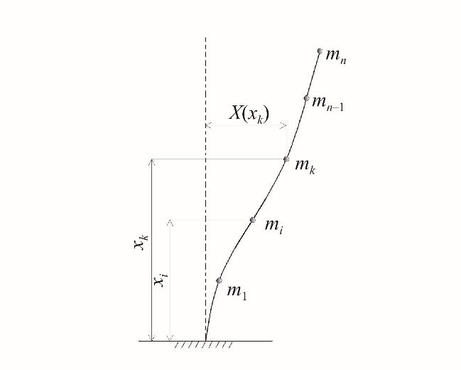
Расчетные сейсмические нагрузки на здания и сооружения, имеющие сложное конструктивно -планировочное решение, следует определять с применением пространственных РДМ зданий и с учетом пространственного характера сейсмических воздействий.
Расчетная сейсмическая нагрузка (силовая или моментная) j ik S по направлению обобщенной координаты с номером j , приложенная к узловой точке k РДМ и соответствующая i -й форме собственных колебаний зданий или сооружений, определяется по формуле
где К 0 коэффициент, учитывающий назначение сооружения и его ответственность, принимаемый по таблице 4.2 ;
К 1 коэффициент, учитывающий допускаемые повреждения зданий и сооружений, принимаемый по таблице 5.2 ;
0 j ik S -значение сейсмической нагрузки для i -й формы собственных колебаний здания или сооружения, определяемое в предположении упругого деформирования конструкций по формуле
здесь j k m -масса здания или момент инерции соответствующей массы здания, отнесенные к точке k по обобщенной координате j , определяемые с учетом расчетных нагрузок на конструкции согласно 5.1;
А -значение ускорения в уровне основания, принимаемое равным 1,0; 2,0; 4,0 м/с 2 для расчетной сейсмичности 7, 8, 9 баллов соответственно; β i -коэффициент динамичности, соответствующий i -й форме собственных колебаний зданий или сооружений, принимаемый в соответствии с 5.6;
K ψ -коэффициент, принимаемый по таблице 5 .3; η J ik -коэффициент, зависящий от формы деформации здания или сооружения при его собственных колебаниях по i -й форме, от узловой точки приложения рассчитываемой нагрузки и направления сейсмического воздействия, определяемый по 5.7, 5.8.
Примечания
1 При сейсмичности площадки 8 баллов и более, повышенной только в связи с наличием грунтов категорий III и IV, к значению Sik вводится множитель 0,7, учитывающий нелинейное деформирование грунтов при сейсмических воздействиях при отсутствии данных СМР.
- 2 Обобщенная координата может быть линейной координатой, и тогда ей соответствует линейная масса, либо угловой, и тогда ей соответствует момент инерции массы. Для пространственной РДМ для каждого узла обычно рассматривается шесть обобщенных координат: три линейные и три угловые. При этом, как правило, считают, что массы, соответствующие линейным обобщенным координатам, одинаковы, а моменты инерции массы относительно угловых обобщенных координат могут быть различными.
- 3 При вычислении силовой сейсмической нагрузки 0 j ik S ( j = 1, 2, 3) приняты следующие размерности: 0 j ik S [Н]; [ кг] j k m ; коэффициенты, входящие в формулу ( 5. 2), -безразмерные.
- 4 При вычислении моментной сейсмической нагрузки j S ( j = 4, 5, 6) приняты следующие размерности: j S
[ Н м] ⋅ ; 2 [ кг м ] j k m ⋅ ; 1 η м j ik ; остальные коэффициенты, входящие в формулу ( 5. 2), -
- 0 ik 0 ik безразмерные.
5 4 1 k k m J = ; 5 2 k k m J = ; 6 3 k k m J = , где 1 k J , 2 k J , 3 k J -моменты инерции масс в узле k относительно 1, 2 и 3 -й осей соответственно.
Рисунок 5.2
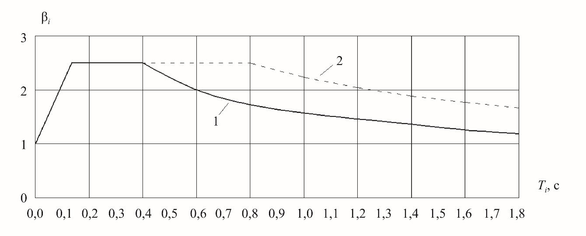
Для грунтов категорий I и II по сейсмическим свойствам (кривая 1 ) при:
Для грунтов категорий II I и IV по сейсмическим свойствам (кривая 2 ) при:
Во всех случаях значения β i должны приниматься не менее 0,8.
Примечание -При наличии представительной информации (записей землетрясений, подробная характеристика опасных зон ВОЗ и др.) допускается применять обоснованные значения коэффициента динамичности β i .
где j ik U -смещения по i -й форме в узловой точке k РДМ по направлению обобщенной координаты с номером j (при j = 1, 2, 3 смещения линейные, при j = 4, 5, 6 угловые); j p m -инерционные характеристики в узловой точке p, равные при j = 1, 2, 3 массе здания или сооружения, присоединенной к узловой точке p по направлению оси j , а при j = 4, 5, 6 равные моментам инерции массы относительно угловых обобщенных координат (инерционные характеристики определяют с учетом расчетных нагрузок на конструкцию согласно 5.1);
- rl -косинусы углов между направлением сейсмического воздействия и осью с номером l . Если обобщенные перемещения вдоль осей 1 и 2 соответствуют горизонтальной плоскости, а перемещение вдоль оси 3 является вертикальным, то эти коэффициенты равны: r 1 = cos α cos β ; r 2 = sin α cos β ; r 3 = sin β, где α -угол между направлением сейсмического воздействия и обобщенной координатой l = 1, β -угол между направлением сейсмического воздействия и горизонтальной плоскостью.
Таблица 5.2 Коэффициент К 1 , учитывающий допускаемые повреждения зданий и сооружений
| Тип здания или сооружения | Значения K 1 |
|---|---|
| 1 Здания и сооружения, в конструкциях которых повреждения или неупругие деформации не допускаются | 1 |
| 2 Здания и сооружения, в конструкциях которых могут быть допущены остаточные деформации и повреждения, затрудняющие нормальную эксплуатацию, при обеспечении безопасности людей и сохранности оборудования, возводимые: - из деревянных конструкций - со стальным каркасом без вертикальных диафрагм или связей - то же, с диафрагмами или связями - со стенами из железобетонных крупнопанельных или монолитных конструкций - из железобетонных объемно - блочных и панельно - блочных конструкций - с железобетонным каркасом без вертикальных диафрагм или связей - то же, с заполнением из кирпичной или каменной кладки - то же, с диафрагмами или связями - из кирпичной или каменной кладки | 0,15 0,25 0,22 0,25 0,3 0,35 0,4 0,3 0,4 |
| 3 Здания и сооружения, в конструкциях которых могут быть допущены значительные остаточные деформации, трещины, повреждения отдельных элементов, их смещения, временно приостанавливающие нормальную эксплуатацию, при наличии мероприятий, обеспечивающих безопасность людей (объекты пониженного уровня ответственности) | 0,12 |
Примечания
1 Отнесение зданий и сооружений к 1 -му типу проводится заказчиком по представлению генерального проектировщика.
2 При выполнении расчета деформаций конструкций при сейсмическом воздействии в частотной области коэффициент К 1 следует принимать равным 1,0.
где Xi ( xk ) и Xi ( xj ) -смещения здания или сооружения при собственных колебаниях по i -й форме в рассматриваемой точке k и во всех точках j , где в соответствии с расчетной схемой его масса принята сосредоточенной; mj -масса здания или сооружения, отнесенная к узловой точке j , определяемая с учетом расчетных нагрузок на конструкцию в соответствии с 5.1.
Для зданий высотой до пяти этажей включительно с незначительно изменяющимися по высоте массами и жесткостями этажей при T 1 менее 0,4 с коэффициент η k при использовании консольной схемы для поступательного горизонтального (вертикального) сейсмического воздействия без учета моментов инерции массы допускается определять по упрощенной формуле
где xk и xj -расстояния от точек k и j до верхнего обреза фундаментов.
Таблица 5.3 Коэффициент, учитывающий способность зданий и сооружений к рассеиванию энергии
| Характеристика зданий и сооружений | K ψ |
|---|---|
| 1 Высокие сооружения небольших размеров в плане (башни, мачты, дымовые трубы, отдельно стоящие шахты лифтов и т. п.) | 1,5 |
| 2 Каркасные бессвязевые здания, стеновое заполнение которых не оказывает влияния на их деформируемость | 1,3 |
| 3 Здания и сооружения, не указанные в позициях 1-2 | 1 |
Для зданий и сооружений простой конструктивной формы при применении консольной РДМ усилия в конструкциях допускается определять с учетом не менее трех форм собственных колебаний, если период первой (низшей) формы собственных колебаний значение T 1 более 0,4 с, и с учетом только первой формы, если значение T 1 равно или менее 0,4 с.
Примечание -При учете взаимодействия сооружения и основания возможно как снижение, так и повышение сейсмических нагрузок.
где Ni -значения усилия (момента, напряжения, перемещения), вызываемого сейсмическими нагрузками, соответствующими i -й форме колебаний; n -число учитываемых в расчете форм колебаний. Знаки в формуле ( 5. 8) для вычисляемых факторов следует назначать по знакам значений соответствующих факторов для форм с максимальными модальными массами.
Если периоды i -й и ( i + 1 ) -й форм собственных колебаний сооружения отличаются менее чем на 10 %, то расчетные значения соответствующих факторов необходимо вычислять с учетом их взаимной корреляции. Для этого допускается применять формулу
где ρ i = 2, если Ti+ 1 / Ti ≥ 0,9 и ρ i = 0, если Ti+ 1 / Ti < 0,9 ( Ti > Ti+ 1 ).
Консольные конструкции, масса которых по сравнению с массой здания незначительна (балконы, козырьки, консоли для навесных стен и т. п. и их крепления), следует рассчитывать на вертикальную сейсмическую нагрузку при значении βη = 5.
Таблица 5.4 Коэффициент условий работы
| Характеристика конструкций | Значение m tr |
|---|---|
| При расчетах на прочность 1 Стальные, деревянные, железобетонные с жесткой арматурой 2 Железобетонные со стержневой и проволочной арматурой, кроме проверки на прочность наклонных сечений 3 Железобетонные при проверке на прочность наклонных сечений 4 Каменные, армокаменные и бетонные при расчете: - на внецентренное сжатие - на сдвиг и растяжение 5 Сварные соединения 6 Болтовые и заклепочные соединения | 1,3 1,2 1,0 1,0 0,8 1,0 1,1 |
| При расчетах на устойчивость 7 Стальные элементы гибкостью свыше 100 8 Стальные элементы гибкостью до 20 9 Стальные элементы гибкостью от 20 до | 1,0 1,2 1,2 до 1,0 по интерполяции |
| От | |
| 100 |
Примечание -При расчете стальных и железобетонных конструкций, подлежащих эксплуатации в неотапливаемых помещениях или на открытом воздухе при расчетной температуре ниже минус 40 °С, следует принимать mtr = 0,9, в случае проверки прочности наклонных сечений mtr = 0,8.
Расчет системы сейсмоизоляции на сейсмические нагрузки, соответствующие уровню РЗ, следует выполнять по перечислению а) 5.2. Повреждения элементов конструкций сейсмической изоляции не допускаются.
Расчет системы сейсмоизоляции на сейсмические нагрузки, отвечающие уровню КЗ, следует выполнять в соответствии с перечислением б) 5.2 и 5.2.2. При выполнении расчета на КЗ необходима проверка по перемещениям. Необходимо применять реальные акселерограммы, характерные для района строительства, а в случае их отсутствия -генерировать искусственные акселерограммы с учетом грунтовых условий площадки строительства .
Расчет сейсмоизолирующей системы на эксплуатационную пригодность следует выполнять на воздействия вертикальных статических и ветровой нагрузок.
Каждый элемент системы изоляции должен быть спроектирован так, чтобы при максимальных горизонтальных перемещениях воспринимались максимальные и минимальные статические вертикальные нагрузки.
6Жилые, общественные, производственные здания и сооружения
6.1Общие положения
Требования раздела 6 следует применять в зависимости от расчетной сейсмичности, выраженной в целочисленных баллах сейсмической шкалы интенсивности МSК -64. Если в результате геологических изысканий при СМР получены дробные значения сейсмической интенсивности, расчетные значения сейсмической балльности следует принимать путем математического округления до целого значения.
- здание или сооружение имеет сложную форму в плане;
- смежные участки здания или сооружения имеют перепады высоты 5 м и более, а также существенные отличия друг от друга по жесткости и (или) массе.
Допускается устройство антисейсмических швов между высокой частью и 1 -2этажными пристраиваемыми частями зданий путем шарнирного опирания перекрытия пристройки на консоль высокой части. Глубина опирания должна быть не менее суммы взаимных перемещений и минимальной глубины опирания с обязательным устройством аварийных связей.
Для случаев, когда устройство осадочного шва не требуется, допускается не устраивать антисейсмические швы между зданием и стилобатом при расчетном обосновании совместности их работы и выполнении соответствующих конструктивных мероприятий.
Не допускается устройство антисейсмических швов внутри помещений, которые предназначены для постоянного проживания или длительного нахождения МГН .
- В одноэтажных зданиях высотой до 10 м при расчетной сейсмичности 7 баллов антисейсмические швы допускается не устраивать.
В случае превышения расстояний между антисейсмическими швами сверх установленных расчет сооружений следует выполнять с учетом волнового характера сейсмического воздействия, неоднородности и неравномерности сейсмического воздействия в плане сооружения по методикам, согласованным в установленном порядке.
При различных конструктивно -планировочных решениях разных этажей здания следует применять меньшее из приведенных в таблице 6.1 и 6.1.4 значение параметров для соответствующих несущих конструкций.
Таблица 6.1 Предельная высота здания в зависимости от конструктивного решения
| Несущая | Предельная высота, м (этажность), при сейсмичности площадки, баллы | Предельная высота, м (этажность), при сейсмичности площадки, баллы | Предельная высота, м (этажность), при сейсмичности площадки, баллы |
|---|---|---|---|
| 7 | 8 | 9 | |
| 1 Стальной каркас | Не более 200 м | Не более 200 м | Не более 200 м |
| 2 Железобетонный каркас: - рамно - связевый, безригельный связевый (с железобетонными диафрагмами, ядрами жесткости или стальными связями) | 57 (16) | 43 (12) | 34 (9) |
| - безригельный без диафрагм и ядер жесткости - рамный с заполнением из штучной | 14 (4) | 11 (3) | 8 (2) |
| кладки, воспринимающей горизонтальные нагрузки, в том числе каркасно - каменной конструкции | 34 (9) | 24 (7) | 18 (5) |
| рамный без заполнения и с заполнением, отделенным от каркаса | 24 (7) | 18 (5) | 11 (3) |
| 3 Стены из монолитного железобетона | 75 (24) | 70 (20) | 57 (16) |
| 4 Крупнопанельные железобетонные стены | 57 (16) | 50 (14) | 43 (12) |
| 5 Объемно - блочные и панельно - блочные железобетонные стены | 50 (16) | 50 (16) | 38 (12) |
| 6 Стены из крупных бетонных или виброкирпичных блоков | 29 (9) | 23 (7) | 17 (5) |
| 7 Стены комплексной конструкции из керамических кирпичей и камней, бетонных блоков, природных камней правильной формы и мелких блоков, усиленные монолитными железобетонными включениями: - 1- й категории | 20 (6) | 17 (5) | 14 (4) |
| - 2- й категории | 17 (5) | 14 (4) | 11 (3) |
| 8 Стены из керамических кирпичей и камней, бетонных блоков, природных камней правильной формы и мелких блоков, кроме указанных в позиции 7: | |||
| - 1- й категории | 17 (5) | 15 (4) | 12 (3) |
| - 2- й категории | 14 (4) | 11 (3) | 8 (2) |
| 9 Стены из мелких ячеистых и легкобетонных блоков | 8 (2) | 8 (2) | 4 (1) |
| 10 Деревянные бревенчатые стены, брусчатые, щитовые | 8 (2) | 8 (2) | 4 (1) |
Окончание таблицы 6.1
Примечания
1 За предельную высоту здания принимают разность отметок низшего уровня отмостки или поверхности земли, примыкающей к зданию, и низа верхнего перекрытия или покрытия. Подвальный этаж включают в число этажей в случае, если верх его перекрытия находится выше средней планировочной отметки земли не менее чем на 2 м.
2 В случаях, когда подземная часть здания конструктивно отделена от грунтовой засыпки или конструкций примыкающих участков подземной застройки, подземные этажи включают в этажность и предельную высоту здания.
3 Верхний этаж с массой покрытия менее 50 % средней массы перекрытий здания в этажность и предельную высоту, определяемые по настоящей таблице, не включают.
4 Этажность зданий общеобразовательных организаций (школы, гимназии и т. п.) и учреждений здравоохранения (лечебные учреждения со стационаром, дома престарелых и т. п.) при сейсмичности площадки свыше 6 баллов следует ограничивать тремя надземными этажами.
5 В случае если по функциональным требованиям возникает необходимость повышения этажности проектируемого здания сверх указанной, следует применять специальные системы сейсмозащиты (сейсмоизоляция, демпфирование и т. п.) для снижения сейсмических нагрузок.
Ширину антисейсмического шва следует назначать по результатам расчетов в соответствии с 5.5, при этом ширина шва на каждом рассматриваемом уровне должна быть не менее суммы амплитуд колебаний смежных отсеков здания.
При высоте здания или сооружения до 5 м ширина такого шва должна быть не менее 30 мм. Ширину антисейсмического шва здания или сооружения бóльшей высоты следует увеличивать на 20 мм на каждые 5 м высоты.
Переход через антисейсмический шов не должен быть единственным путем эвакуации из зданий или сооружений.
6.2Основания, фундаменты и стены подвалов
В случае заложения смежных отсеков зданий на разных отметках переход от более углубленной части к менее углубленной делают уступами; при этом фундаменты примыкающих частей отсеков должны иметь одинаковое заглубление на протяжении не менее 1 м от шва, а отдельные столбчатые фундаменты под колонны, разделенные осадочным швом, должны располагаться на одном уровне. Уступы подошв фундаментов выполняют высотой до 0,6 м и заложением до 1:2 (высота к длине) для связных и до 1:3 для несвязных грунтов в местах переходов от глубоко заложенных фундаментов к фундаментам с меньшей глубиной заложения. Уступы в скальных грунтах допускается не устраивать.
При устройстве подвала под частью здания (отсека) следует стремиться к его симметричному расположению относительно главных осей.
Вертикальная арматура стен и элементов каркаса, в которой расчетом на особое сочетание нагрузок допускается растяжение, должна быть надежно заанкерена в фундаменте.
В случае выполнения стен подвалов из сборных панелей, конструктивно связанных с ленточными фундаментами, укладка указанного слоя раствора не требуется.
Для заполнения швов между блоками следует применять цементный раствор марки не ниже М 50.
В зданиях до трех этажей включительно и сооружениях соответствующей высоты при расчетной сейсмичности 7 и 8 баллов допускается применение для кладки стен подвалов блоков пустотностью до 50 %.
6.3Перекрытия и покрытия
Поэтажная масса должна быть приложена к каждому соответствующему уровню перекрытия.
- устройством сварных соединений плит между собой, элементами каркаса или стенами;
- устройством болтовых соединений (с применением накладных деталей);
- соединением плит путем устройства замоноличиваемых шпонок с арматурной скобой, соединяющей петлевые арматурные выпуски из плит перекрытия;
- устройством монолитных железобетонных обвязок (антисейсмических поясов) с анкеровкой в них выпусков арматуры из плит;
- замоноличиванием швов между элементами перекрытий мелкозернистым бетоном.
Боковые грани панелей (плит) перекрытий и покрытий должны иметь шпоночную или рифленую поверхность. Для соединения с антисейсмическим поясом или для связи с элементами каркаса в панелях (плитах) следует предусматривать выпуски арматуры или закладные детали.
- для кирпичных и каменных стен ………………………………..120;
- для стен из вибрированных кирпичных блоков ………………..90;
- для железобетонных и бетонных стен, стальных и железобетонных балок (ригелей):
- при опирании по двум сторонам ………………………………...80;
- » » » трем и четырем » ……………………………….60;
- для стен крупнопанельных зданий при опирании по двум противоположным сторонам …………………………….70.
Перекрытия в виде прогонов (балок с вкладышами между ними) должны быть усилены с помощью слоя монолитного армированного бетона класса не ниже В15 толщиной не менее 40 мм.
6.4Лестницы
Устройство лестничных клеток в виде отдельно стоящих сооружений не допускается.
Конструкции сборных лестничных маршей и узлов их креплений к несущим элементам зданий, как правило, не должны препятствовать взаимным горизонтальным смещениям смежных перекрытий. При этом лестничные марши должны быть надежно закреплены с одного конца, а конструкция опирания другого конца должна обеспечивать свободное смещение марша относительно опоры, не допуская его обрушения.
Допускается применять конструкции лестничных маршей, связанные с перекрытиями по обоим концам, при этом несущая способность лестничных маршей и узлов их креплений должна быть рассчитана на восприятие нагрузок, возникающих при взаимном смещении перекрытий.
Устройство консольных ступеней, заделанных в каменную кладку, не допускается.
6.5Перегородки
Прочность перегородок и их креплений должна быть в соответствии с 5.5 подтверждена расчетом на действие расчетных сейсмических нагрузок из плоскости.
Крепление перегородок к несущим элементам пристрелкой дюбелями не допускается.
Кирпичную (каменную) кладку перегородок на площадках сейсмичностью 8 и 9 баллов в дополнение к горизонтальному армированию следует усиливать вертикальными двухсторонними арматурными сетками, установленными в слоях цементного раствора марки не ниже М100 толщиной 25 -30 мм. Арматурные сетки должны иметь надежное соединение с кладкой.
6.6Балконы, лоджии и эркеры
6.7Особенности проектирования железобетонных конструкций
Примечание -При расчете по прочности нормальных сечений на основе нелинейной деформационной модели характеристику ξ R не применяют.
400 мм, а также 12 d для вязаных каркасов и 15 d для сварных каркасов ( d -наименьший диаметр сжатых продольных стержней, мм) -при Rsc ≤ 450 МПа;
300 мм, а также 10 d для вязаных каркасов и 12 d для сварных каркасов -при Rsc > 450 МПа .
Длина нахлестки должна быть на 30 % больше значений, требуемых по действующим нормативным документам на бетонные и железобетонные конструкции (СП 63.13330), с учетом дополнительных требований настоящего свода правил.
Допускается применение для соединений арматуры специальных механических соединений (опрессованных или резьбовых муфт).
При диаметре стержней 20 мм и более соединение стержней и каркасов следует выполнять с помощью специальных механических соединений (опрессованных и резьбовых муфт) или сварки независимо от сейсмичности площадки.
Шаг хомутов в местах стыкования внахлестку без сварки арматуры внецентренно сжатых элементов должен быть не более 8 d .
Стыкование арматуры стержневых изгибаемых и внецентренно сжатых элементов сварными соединениями внахлестку не допускается. При стыковании арматуры стен, перекрытий, фундаментных плит, а также в малоответственных конструкциях возможно применение сварных соединений арматуры внахлестку. При этом значение длины сварных швов должно быть на 30 % больше значений, требуемых по ГОСТ 14098 для сварного соединения типа С23 -Рэ.
В изгибаемых и внецентренно сжатых элементах стыки арматуры внахлестку со сваркой и без сварки следует располагать вне зон максимальных изгибающих моментов.
Стыкование арматуры в монолитных диафрагмах может быть сварным или вязаным внахлест.
В одном сечении должно стыковаться не более 50 % растянутой арматуры.
В качестве напрягаемой арматуры, дополнительно устанавливаемой из расчета по предельным состояниям второй группы, допускается использовать арматурные канаты, располагаемые в закрытых трубках без сцепления с бетоном.
6.8Железобетонные каркасные здания
Размеры выступов в здании (при наличии) в плане не должны превышать шага колонн.
При выборе конструктивных схем предпочтение следует отдавать схемам, в которых зоны пластичности возникают в первую очередь в горизонтальных элементах каркаса (ригелях, перемычках, обвязочных балках и т. п.).
Поперечная арматура плиты должна состоять из стержней периодического профиля диаметром не менее 8 мм, которые следует соединять с продольной рабочей арматурой посредством контактной сварки или концевых отгибов (крюков). Шаг стержней поперечной арматуры принимают по нормам проектирования железобетонных конструкций.
Допускается более высокое насыщение колонн продольной арматурой при условии усиления приопорных участков колонн с помощью конструктивного косвенного армирования сварными сетками с ячейками размером не более 100 мм не менее четырех, располагаемыми с шагом 60 -100 мм на длине (считая от торца элемента не менее 10 d , где d -наибольший диаметр стержней продольной арматуры). Сетки из арматуры классов А400, А500, В500 должны быть диаметром не менее 8 мм.
Зону пересечения ригелей и колонн, а также участки ригелей и колонн, примыкающие к жестким узлам рам на расстоянии, равном полуторной высоте их сечения (но не более 1/4 высоты этажа или пролета ригеля), следует армировать замкнутой поперечной арматурой (хомутами), устанавливаемой по расчету, но не реже чем через 100 мм, а для рамных систем с несущими диафрагмами -не реже чем через 200 мм.
По наружному контуру вертикальных несущих конструкций зданий перекрытия следует опирать на ригели в уровне каждого этажа. Допускается устройство перекрытий и ограждающих конструкций, выступающих за пределы основного каркаса частично или по периметру здания на консольных свесах. Конструкции узлов сопряжения стен и перекрытий должны удовлетворять требованиям 6.8.15.
Не менее 30 % всей расчетной продольной арматуры плиты следует устанавливать в форме групп каркасов, плоских вертикальных или пространственных прямоугольного или треугольного сечения. Такие каркасы в обоих осевых направлениях следует сосредотачивать в составе полос усиленного армирования над колоннами, где не менее двух плоских каркасов или двух верхних стержней пространственного каркаса должны быть пропущены сквозь тело колонны, а также в составе арматуры, проходящей через срединные участки пролетов. Непрерывность этих каркасов в пределах общих габаритов перекрытия должна быть обеспечена стыковыми сварными соединениями продольных стержней каркасов в соответствии с 6.7.12. Эти стыковые соединения должны располагаться в зонах минимальных изгибающих моментов по соответствующим осевым направлениям и иметь прочность не ниже нормативного сопротивления стыкуемых стержней.
Сборные каркасные здания, для которых невозможно выполнить данные требования, должны быть рассчитаны на устойчивость к прогрессирующему разрушению с использованием методик, согласованных в установленном порядке.
- при шаге пристенных колонн каркаса -не более 6 м;
- при высоте стен зданий, возводимых на площадках сейсмичностью 7, 8 и 9 баллов, -не более 12, 9 и 6 м соответственно.
Кладка самонесущих стен в каркасных зданиях должна иметь гибкие связи с каркасом, не препятствующие горизонтальным смещениям каркаса вдоль стен.
Между поверхностями стен и колонн каркаса должен предусматриваться зазор не менее 20 мм. В местах пересечения торцевых и поперечных стен с продольными стенами должны устраиваться антисейсмические швы на всю высоту стен.
По всей длине стен в уровне плит покрытия и верха оконных проемов должны устраиваться антисейсмические пояса, соединенные с каркасом здания.
6.9Особенности проектирования зданий со стальным каркасом
Ригели стальных каркасов следует проектировать из прокатных или сварных двутавров, в том числе с гофрированной стенкой.
В колоннах рамных каркасов на уровне ригелей должны быть установлены поперечные ребра жесткости. Зоны развития пластических деформаций в элементах стальных конструкций должны быть вынесены за пределы сварных и болтовых соединений.
Свес поясов сечений ригелей не должен превышать значения 0,25 / f y t E R , где t f -толщина пояса ; Е и Ry -модуль упругости и расчетное сопротивление стали соответственно .
6.10Крупнопанельные здания
При проектировании крупнопанельных зданий необходимо:
- предусматривать панели стен и перекрытий, как правило, размером на комнату;
- осуществлять вертикальные и горизонтальные стыковые соединения панелей продольных и поперечных стен между собой и с панелями перекрытий (покрытий) сваркой арматурных выпусков, закладных деталей или на болтах и замоноличиванием вертикальных и горизонтальных стыков мелкозернистым бетоном класса не ниже В15 и не ниже класса бетона панелей. Все замоноличиваемые торцевые стыкуемые грани панелей стен и перекрытий (покрытий) следует выполнять с рифлеными или зубчатыми поверхностями. Глубину (высоту) шпонок и зубьев принимают не менее 40 мм ;
- при опирании перекрытий на наружные стены здания и стены у антисейсмических швов предусматривать охват вертикальной арматуры стеновых панелей арматурой швов, приваренной к выпускам арматуры плит перекрытия.
При соответствующем обосновании допускается выполнять вертикальные стыковые соединения стен на закладных деталях, без устройства замоноличиваемых вертикальных колодцев и рифленых поверхностей граней панелей стен.
Толщину внутреннего несущего слоя многослойных панелей следует определять по результатам расчета и принимать не менее 100 мм.
Закладные детали, служащие для соединения панелей между собой, должны быть приварены к рабочей арматуре.
В местах пересечения стен допускается размещать в наружных панелях не более 60 % расчетного количества вертикальной арматуры с размещением остальной части арматуры во внутренних стеновых панелях на участке не более 1 м от места пересечения стен (за исключением конструктивной арматуры).
6.11Здания с несущими стенами из монолитного железобетона
При технико -экономическом обосновании монолитные здания возможно проектировать ствольно -стеновой конструкции с одним или несколькими стволами.
- В пространственных каркасах, применяемых для армирования поля стен, диаметр вертикальной арматуры должны быть не менее 10 мм, а горизонтальной -не менее 8 мм. Шаг горизонтальных стержней, объединяющих каркасы, не должен превышать 400 мм. Армирование широких простенков можно выполнять диагональными каркасами.
- внахлестку без сварки -в зонах сейсмичностью 7 и 8 баллов при диаметре стержней до 20 мм;
- внахлестку без сварки, но с «лапками» или с другими анкерными устройствами на концах стержней -в зонах сейсмичностью 9 баллов.
При диаметре стержней 20 мм и более соединение стержней и каркасов следует выполнять с помощью сварки или специальных механических соединений (опрессованных и резьбовых муфт) независимо от сейсмичности площадки.
Шаг поперечных стержней пространственных каркасов перемычек следует принимать не более 10 d ( d -диаметр продольных стержней) и не более 150 мм. Диаметр поперечных стержней следует принимать не менее 8 мм.
6.12Объемно -блочные и панельно -блочные здания
- сварка закладных деталей или арматурных выпусков из стен и перекрытий объемных блоков;
- устройство в вертикальных полостях между стенами объемных блоков монолитных бетонных или железобетонных шпонок;
- устройство горизонтальных обвязочных балок в уровнях междуэтажных перекрытий и покрытия;
- замоноличивание стыков по вертикальным и горизонтальным швам мелкозернистым бетоном с пониженной усадкой;
- обжатие столбов объемных блоков вертикальной арматурой, напрягаемой в построечных условиях.
Площадь вертикальной и горизонтальной арматуры, устанавливаемой у каждой плоскости панели для арматуры каждого вида, должна составлять не менее 0,05 % площади соответствующего сечения плиты.
- в зданиях со скрытым монолитным каркасом независимо от этажности;
- в зданиях других типов -высотой не более пяти этажей при расчетной сейсмичности 7, 8 баллов и не более трех этажей -при расчетной сейсмичности 9 баллов.
- вертикальных - 30 мм² на 1 пог. м горизонтального шва между смежными по высоте блоками при сейсмичности 7 и 8 баллов и 50 -при сейсмичности 9 баллов;
- горизонтальных - 150 мм² на 1 пог. м горизонтального шва между смежными в плане блоками.
При этом связи между смежными блоками допускается выполнять сосредоточенными по углам блоков.
- В расчетах трение в горизонтальных стыковых соединениях не учитывают.
Класс бетона элементов «скрытого» каркаса должен быть не ниже В15.
- предусматривать панели стен и перекрытий размером на комнату;
- соединять панели стен и перекрытий между собой и с блоками путем сварки выпусков арматуры, анкерных стержней или закладных деталей и замоноличивания вертикальных колодцев и участков стыков по горизонтальным швам мелкозернистым бетоном с пониженной усадкой;
- предусматривать сварные соединения выпусков арматуры из панелей перекрытий с вертикальной арматурой стеновых панелей при опирании перекрытий на наружные стены и стены у температурных швов.
6.13Здания со стенами из крупных блоков
Блоки наружных стен могут быть однослойными или многослойными.
Блоки следует соединять между собой сваркой закладных деталей или выпусков арматуры. Вертикальная арматура по торцам простеночных блоков, в том числе на глухих участках стен, должна быть соединена с выпусками арматуры из фундамента, вертикальной арматурой вышележащих и нижележащих простеночных блоков, в том числе блоков смежных этажей, и заанкерена в антисейсмическом поясе перекрытия верхнего этажа.
При непрерывном вертикальном армировании продольную арматуру пропускают через отверстия в поясных блоках и стыкуют сваркой. Пазы в блоках в местах установки вертикальной арматуры следует заделывать бетоном на мелком щебне класса не менее В15 с вибрированием.
6.14Здания со стенами из кирпича или каменной кладки
Несущие каменные стены следует возводить из кладки на растворах со специальными добавками, повышающими сцепление раствора с кирпичом или камнем. Вертикальные швы кладки следует заполнять раствором, за исключением кладки из кирпича и камней с пазогребневыми соединениями.
При расчетной сейсмичности 7 баллов допускается возведение несущих стен зданий из кладки на растворах с пластификаторами без применения специальных добавок, повышающих прочность сцепления раствора с кирпичом или камнем.
При расчетной сейсмичности 8 баллов и менее допускается выполнение зимней кладки с обязательным включением в раствор добавок, обеспечивающих твердение раствора при отрицательных температурах.
Допускается ведение кладки в сейсмических районах при отрицательной температуре воздуха из подогретого до положительной температуры кирпича (камня, блока) на растворах без противоморозных добавок с дальнейшим укрыванием и выдержкой при положительной температуре до набора прочности раствором не менее 20 % проектной.
Значение вертикальной сейсмической нагрузки при расчетной сейсмичности 7 -8 баллов должно быть 15 %, а при сейсмичности 9 баллов - 30 % соответствующей вертикальной статической нагрузки.
Направление действия вертикальной сейсмической нагрузки (вверх или вниз) следует принимать более невыгодным для напряженного состояния рассматриваемого элемента.
- а) полнотелый и пустотелый кирпич, керамические камни и блоки марки не ниже М100.
Изделия с пустотами должны иметь: диаметр вертикальных пустот -не более 20 мм, стороны квадратных пустот -не более 22 мм, ширину щелевых пустот -не более 16 мм. Внутренние перегородки камня, параллельные плоскости стены, должны быть непрерывными. Пустотность изделий для кладки несущих и самонесущих стен без железобетонных включений или обойм (рубашек) не должна превышать 25 %; не допускается применение керамических камней, имеющих пустоты со значением углов между внутренними перегородками разных направлений, отличным от 90°, на площадках сейсмичностью более 7 баллов; б) камни и блоки правильной формы из ракушечников, известняков марки не ниже М 35 или туфов (кроме фельзитового) марки М 50 и выше; в) для несущих стен следует применять бетонные камни, сплошные и пустотелые блоки из легкого и ячеистого бетонов классов по прочности на сжатие не ниже В3,5, марок по средней плотности не ниже D600; для самонесущих стен -классов по прочности на сжатие не ниже В2,5, марок по средней плотности не ниже D500.
Для возведения перегородок и ненесущих стен допускается применение кирпича и керамических камней марки не ниже М75 без ограничения размеров и пустот и гипсовых пазогребневых плит.
Штучная кладка стен должна выполняться на смешанных цементных растворах марки не ниже М25 в летних условиях и не ниже М50 в зимних или на специальных клеях. Для кладки блоков следует применять раствор марки не ниже М50 и специальные клеи.
Категория кирпичной или каменной кладки, выполненной из материалов, предусмотренных 6.14.4, определяется врéменным сопротивлением осевому растяжению по неперевязанным швам (нормальное сцепление), значение которого должно быть в пределах: u t R ≥ 180 кПа -для кладки категории I;
180 кПа u t R ≥ ≥ 120 кПа -для кладки категории II.
Для повышения врéменного сопротивления осевому растяжению по неперевязанным швам (нормальное сцепление) u t R следует применять растворы со специальными добавками.
Требуемое значение u t R необходимо указывать в проекте. При проектировании значение u t R следует назначать в зависимости от результатов испытаний, проводимых в районе строительства.
При невозможности получения на площадке строительства (в том числе на растворах с добавками, повышающими прочность их сцепления с кирпичом или камнем) значения u t R ≥ 120 кПа применение кирпичной или каменной кладки не допускается.
Примечание -При расчетной сейсмичности 7 баллов допускается применение кладки из естественного камня при 120 кПа u t R > > 60 кПа. При этом высота здания должна быть не более трех этажей, ширина простенков -не менее 0,9 м, ширина проемов -не более 2 м, а расстояния между осями стен -не более 12 м.
Проектом производства каменных работ должны предусматриваться специальные мероприятия по уходу за твердеющей кладкой, учитывающие климатические особенности района строительства. Эти мероприятия должны обеспечивать получение необходимых прочностных показателей кладки.
Значения Rt , Rsq и Rtw не должны превышать соответствующих значений для кирпича или камня при разрушении кладки.
При усилении кладки армированием или железобетонными включениями высоту этажа допускается принимать равной 6; 5 и 4, 5 м соответственно.
При этом отношение высоты этажа к толщине стены должно быть не более 12.
В зданиях из мелких ячеисто -бетонных блоков расстояние между стенами независимо от расчетной сейсмичности не должно превышать 9 м.
Таблица 6.2 Расстояния между осями поперечных стен или заменяющих их рам
| Расчетная сейсмичность, баллы | Расстояние между осями поперечных стен или заменяющих их рам, м |
|---|---|
| 7 | 18 |
| 8 | 15 |
| 9 | 12 |
Таблица 6.3 -Размеры элементов несущих и самонесущих стен каменных зданий
| Элемент стены | Размер элемента стены, м, при расчетной сейсмичности, баллы | Размер элемента стены, м, при расчетной сейсмичности, баллы | Размер элемента стены, м, при расчетной сейсмичности, баллы | Примечание |
|---|---|---|---|---|
| 7 | 8 | 9 | ||
| 1 Простенки шириной, не менее, при кладке: - категории I | 0,64 | 0,9 | 1,16 | Ширину угловых простенков следует принимать на 25 см больше указанной. |
| - категории II | 0,77 | 1,16 | 1,55 | Простенки меньшей ширины необходимо усиливать железобетонным обрамлением |
|---|---|---|---|---|
| 2 Проемы шириной, не более | 3,5 | 3 | 2,5 | Проемы большей ширины следует окаймлять железобетонной рамкой |
| 3 Отношение ширины простенка к ширине проема, не менее | 0,33 | 0,5 | 0,75 | - |
| 4 Выступ стен в плане, не более | 2 | 1 | - | - |
| 5 Вынос карнизов, не более: - из материала стен - из железобетонных элементов, связанных с | 0,2 | 0,2 | 0,2 | Вынос деревянных неоштукатуренных карнизов допускается до 1 м |
| антисейсмическими поясами - из деревянных, | 0,4 | 0,4 | 0,4 | |
| оштукатуренных по металлической сетке | 0,75 | 0,75 | 0,75 |
В зданиях с монолитными железобетонными перекрытиями, заделанными по контуру в стены, антисейсмические пояса в уровне этих перекрытий не устраивают.
Продольная арматура поясов устанавливается по расчету, но не менее 4 d 10 при расчетной сейсмичности 7 -8 баллов и не менее 4 d 12 при 9 баллах.
Участки стен и столбы над чердачным перекрытием высотой более 400 мм должны быть армированы или усилены монолитными железобетонными включениями, заанкеренными в антисейсмический пояс. Стены по верху должны иметь обвязочный железобетонный пояс, связанный с вертикальными железобетонными сердечниками.
Кирпичные столбы допускаются только при расчетной сейсмичности 7 баллов. При этом марка раствора должна быть не ниже М50, а высота столбов -не более 4 м. В двух направлениях столбы следует связывать заанкеренными в стены балками.
Кладки следует армировать сетками в горизонтальных швах и отдельными вертикальными стержнями или каркасами, размещаемыми в теле кладки или штукатурных слоях. Вертикальная арматура должна быть непрерывной и соединяться с антисейсмическими поясами. Не допускается соединение арматуры внахлест без сварки. В случае размещения вертикальной арматуры в штукатурных слоях она должна быть связана с кладкой хомутами, расположенными в горизонтальных швах кладки.
Вертикальные железобетонные элементы (сердечники) должны соединяться с антисейсмическими поясами.
Железобетонные включения в кладку комплексных конструкций, открытые не менее чем с одной стороны, следует устраивать с минимальным размером сечения не менее 120 мм.
При устройстве закрытых железобетонных сердечников минимальный размер их сечения должен быть не менее 150 мм. При этом необходимо предусматривать конструктивные мероприятия, обеспечивающие контроль заполнения бетоном железобетонных сердечников.
При проектировании стен комплексной конструкции из кирпича усиленные монолитными железобетонными включениями антисейсмические пояса и их узлы сопряжения со стойками следует рассчитывать и конструировать как элементы каркасов с учетом работы заполнения. В этом случае предусмотренные для бетонирования стоек пазы должны быть открытыми не менее чем с двух сторон. Если стены комплексной конструкции из кирпича выполняют с железобетонными включениями по торцам простенков, продольная арматура должна быть надежно соединена хомутами, уложенными в горизонтальных швах кладки. Бетон включений должен быть класса не ниже В12,5, кладка должна выполняться на растворе марки не ниже М50, а количество продольной арматуры не должно превышать 0,8 % площади сечения бетона простенков.
Примечание -Несущую способность железобетонных включений, расположенных по торцам простенков, учитываемая при расчете на сейсмическое воздействие, не следует учитывать при расчете сечений на основное сочетание нагрузок.
6.15Деревянные здания
6.16Здания и сооружения из местных материалов
6.17Здания и сооружения с сейсмоизоляцией
- снижение сейсмических воздействий на сейсмоизолированную часть сооружения, в том числе его расчетную сейсмичность при ограничении взаимных перемещений сейсмоизолированной и несейсмоизолированной частей сооружения;
- восприятие расчетных вертикальных нагрузок при высокой горизонтальной податливости и контролируемой вертикальной жесткости сейсмоизолирующего слоя;
- непрерывность конструктивной системы сейсмоизолированной части сооружения по высоте;
- необходимое вязкое и (или) гистерезисное затухание энергии;
- необходимый уровень первых собственных частот (периодов) сооружения относительно частотного состава исходного сейсмического воздействия;
- ограничение горизонтальных перемещений, возникающих в процессе эксплуатации сооружений при несейсмических воздействиях (например, ветровых);
- возвращение сейсмоизолированной части сооружения в исходное положение устойчивого равновесия за счет постоянно действующей восстанавливающей силы после прекращения действия сейсмических сил с возможностью восприятия афтершоков;
- наличие экспериментально подтвержденных характеристик жесткости и демпфирования, полученных на натурных образцах элементов системы сейсмоизоляции;
- удобство монтажа, замены изолирующих элементов и возможность центрирования сейсмоизолированной части сооружения в пространстве;
- стабильность жесткостных и демпфирующих свойств при длительной эксплуатации и повторных циклических нагружениях при заданных проектом уровнях и колебаниях температуры и влажности;
- защиту системы в случае пожара и других, предусмотренных проектом, природных и техногенных воздействий .
Примечание -Свойства сейсмоизолирующих элементов в процессе эксплуатации и повторных циклических нагружениях могут изменяться и находиться в диапазоне заранее определенных допускаемых значений, заданном в проектной документации.
- а) расчетных горизонтальных сейсмических перемещений каждого сейсмоизолирующего элемента на коэффициент надежности по материалу γ х = 1,2;
- б) расчетных вертикальных сейсмических сил в каждом сейсмоизолирующем элементе от гравитационных и сейсмических воздействий на коэффициент надежности по нагрузке γ z = 1,1.
- a) сооружения с ненесущими элементами из хрупких материалов, имеющих соединения с несущими конструкциями:
- б) сооружения, имеющие пластически деформируемые ненесущие элементы, соединенные с несущими конструкциями:
- в) сооружения, имеющие ненесущие элементы, не влияющие на деформации несущих конструкций, или без ненесущих элементов:
где dr -расчетный междуэтажный перекос, определяемый как разница средних горизонтальных перемещений dei в верхней и нижней частях данного этажа; h -высота этажа.
где eox -расстояние между центром масс и центром жесткостей по оси Х , нормальное к анализируемому направлению;
- r x квадратный корень из отношения значений крутильной жесткости к горизонтальной жесткости в направлении оси Y (радиус кручения);
- l s -радиус вращения массы перекрытия в плане (квадратный корень отношения полярного момента инерции массы перекрытия в плане относительно центра масс перекрытия к массе перекрытия).
- a) при выступах, расположенных симметрично относительно оси, выступ на любом этаже не должен превышать 20 % предыдущего размера в плане в направлении выступа (рисунок 6.1, а и б);
- б) для отдельных выступов при высоте менее 15 % общей высоты основной конструктивной системы выступ должен быть не больше 50 % основного размера в плане (рисунок 6.1, в). В этом случае конструкция зоны основания в пределах периметра в вертикальной проекции верхних этажей должна быть запроектирована в расчете на восприятие не менее 75 % горизонтальной силы, которая может возникнуть в этой зоне в подобном сооружении, без увеличения основания;
- в) если выступы на каждом фасаде расположены несимметрично, то сумма поверхности выступов на всех этажах должна быть не больше 30 % размера в плане на первом этаже над фундаментом или над верхней частью жесткого основания, а отдельные выступы не должны превышать 10 % предыдущего размера в плане (рисунок 6.1, г).
Рисунок 6.1 -Критерии регулярности по высоте
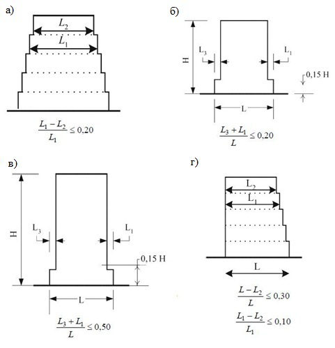
Примечание -Необходимо учитывать местную передачу воздействий и их влияние на поведение сооружения при закреплении ненесущих элементов .
Следует убедиться, что податливость таких коммуникаций достаточно велика по сравнению с податливостью системы сейсмоизоляции и суммарная реакция коммуникаций не будет вносить заметных возмущений в движение сейсмоизолированной части здания.
При необходимости в коммуникации следует включать гибкие соединения и компенсаторы в уровне сейсмоизолирующего слоя.
6.18Оборудование
6.19Сейсмическая безопасность эксплуатируемых зданий (сооружений)
Примечание -Под изменением функционального назначения здания подразумеваются изменения, влекущие за собой повышение ответственности зданий, а также отнесение здания к объектам, функционирование которых в работоспособном состоянии необходимо для ликвидации чрезвычайных ситуаций, обусловленных землетрясением.
Риск, связанный с причинением вреда жизни и здоровью людей, возникающий вследствие вторичных природных и антропогенных воздействий, не должен учитываться, за исключением положений раздела 9 настоящего свода правил .
- уменьшение остаточного срока эксплуатации здания;
- изменение объемно -планировочных решений путем разделения зданий сложных конструктивных схем на отсеки простой формы антисейсмическими швами, разборки верхних этажей здания, устройства дополнительных элементов жесткости для обеспечения симметричного расположения жесткостей в пределах отсека и уменьшения расстояния между ними;
- усиление стен, рам, вертикальных связей для обеспечения восприятия усилий от расчетных сейсмических воздействий;
- увеличение надежности соединения элементов сборных перекрытий устройством или усилением антисейсмических поясов;
- обеспечение связей между стенами различных направлений, между стенами и перекрытиями;
- усиление элементов соединения сборных конструкций стен;
- изменение конструктивной схемы здания, в том числе путем введения системы дополнительных конструктивных элементов;
- снижение массы здания, применение сейсмоизоляции, пассивного демпфирования и других методов регулирования сейсмической реакции;
- изменение функционального назначения здания (снижение уровня ответственности).
Это требование не распространяется на здания, поврежденные в результате землетрясения. 6.19.9 В случаях, когда выполнение конструктивных требований норм в полном объеме невозможно, или их выполнение приводит к экономической нецелесообразности усиления, допускается реализация обоснованных расчетом технических решений усиления здания при неполном соответствии требованиям правил с их согласованием в установленном порядке.
7Транспортные сооружения
7. 2 Транспортные сооружения в сейсмических районах, грунты строительных площадок и прилегающие к ним территории (акватории) следует рассматривать как составные части природно -технической системы, подвергающейся при землетрясениях воздействиям в виде сейсмических волн в грунте, перемещений крыльев сейсмоактивных разломов, тектонических разрывов земной поверхности, сейсмооползней, обвалов, осыпей, снежных лавин, селевых и водно -песчаных потоков, разжижения грунта, цунами, гравитационных волн, образующихся при обрушении в водохранилища, заливы и проливы больших масс горных пород, затопления участков местности из -за ее опускания или образования сейсмотектонических и сейсмогравитационных дамб в долинах рек, изменения условий работы грунтов и строительных материалов, влияющих на прочность и устойчивость оснований и несущих конструкций.
7. 4 Состав и объем защитных мероприятий должны быть достаточными для предотвращения летальных людских потерь, недопустимого экономического и экологического ущерба в результате обрушения сооружений, нарушения устойчивости склонов в полосе отвода транспортных коммуникаций, нарушения транспортной доступности района стихийного бедствия, аварий транспортных средств, выброса в окружающую среду перевозимых по дорожной сети углеводородов, радиоактивных и других опасных веществ, остановки работы предприятий из -за прекращения поставок угля, цемента, леса и других грузов вследствие землетрясения расчетной силы.
7. 5 При проектировании транспортных сооружений выбор карты из комплекта карт ОСР -2015 следует выполнять по СП 268.1325800.
7. 6 Мероприятия по защите от землетрясений транспортных сооружений разрабатываются с предварительным УИС района (пункта) строительства и с учетом результатов работ по СМР строительных участков. Работы выполняются при инженерных изысканиях по правилам, изложенным в СП 269.1325800 , учитывающим сейсмотектоническую обстановку, особенности сейсмического режима местности, строение грунтовой толщи, геоморфологические условия, расположение в плане и глубину заложения объекта.
7. 7 Проектирование транспортных сооружений в сейсмических районах, в том числе восстанавливаемых после разрушительного землетрясения или усиливаемых в процессе эксплуатации, следует выполнять согласно требованиям, изложенным в СП 268.1325800.
Примечание -Повреждения транспортных сооружений после землетрясения оцениваются согласно СП 270.1325800.
8Гидротехнические сооружения
8.1Область применения
Настоящий раздел свода правил распространяется на проектирование вновь строящихся, расширяемых и реконструируемых напорных и безнапорных ГТС в сейсмических районах.
Требования настоящего свода правил также следует выполнять при строительстве, вводе в эксплуатацию, эксплуатации, обследовании технического состояния, декларировании безопасности, страховании, восстановлении, консервации и ликвидации ГТС .
8.2Общие положения. Определение нормативной, исходной и расчетной сейсмичности
- проведение на стадии проектирования водоподпорных сооружений классов I и II и МНГС специальных исследований с задачей установления исходной и расчетной сейсмичности площадки строительства, наличия опасных процессов и явлений, связанных с сейсмичностью, определения расчетных сейсмических воздействий, получение, при необходимости, набора акселерограмм для этих воздействий;
- выполнение комплекса расчетов по оценке прочности и устойчивости сооружений и их элементов с учетом взаимодействия сооружений с основанием и водохранилищем;
- применение конструктивных решений и материалов, повышающих сейсмостойкость сооружений;
- включение в проекты водоподпорных сооружений классов I и II специального раздела о проведении в процессе эксплуатации сооружения слежения за опасными геодинамическими явлениями, в том числе землетрясениями;
- обследование состояния ГТС и их оснований после каждого перенесенного землетрясения интенсивностью на площадке сооружения 5 баллов и более.
Гидротехнические сооружения должны воспринимать МРЗ без угрозы собственного разрушения, в частности водоподпорные сооружения в составе напорного фронта (ВСФ) всех классов -без угрозы прорыва напорного фронта, а МНГС -без угрозы собственного разрушения и без угрозы повреждений, приводящих к выбросу в окружающую среду углеводородов. При этом допускаются любые иные повреждения сооружения и основания, включая повреждения, нарушающие нормальную эксплуатацию объекта.
Сейсмические воздействия уровня ПЗ должны восприниматься ГТС без угрозы для жизни и здоровья людей и с сохранением собственной ремонтопригодности (для ВСФ -при любом предусмотренном правилами эксплуатации уровне верхнего бьефа). При этом допускаются остаточные смещения, деформации, трещины и иные повреждения, не нарушающие нормальную эксплуатацию объекта.
Исходную сейсмичность остальных ГТС допускается принимать равной:
- при расчете на МРЗ:
- для ВСФ класса III -значению величины 5000 nor I (карта С ОСР -2015 );
- для ВСФ класса IV и безнапорных ГТС -значению величины 1000 nor I (карта В ОСР -2015 );
- при расчете на ПЗ для всех сооружений:
- значению величины 500 nor I (карта А ОСР -2015 ).
В случаях, когда нормативная сейсмичность района на соответствующих картах ОСР -2015 (см. 8.2 .8) превышает 9 баллов, исходную сейсмичность площадки строительства независимо от вида и класса ГТС следует определять на основе ДСР или УИС.
Расчетную сейсмичность площадок безнапорных ГТС всех классов, а также при соответствующем обосновании подпорных сооружений класса IV допускается принимать по таблице 8.1 с учетом результатов инженерно -геологических изысканий на площадке строительства.
Как при СМР, так и при инженерно -геологических изысканиях глубину слоя исследования сейсмических свойств грунта следует определять, исходя из особенностей геологического строения площадки, но не менее 40 м от подошвы сооружения (для сооружений классов III и IV, не входящих в состав напорного фронта, -не менее 20 м).
Категорию грунта и его физико -механические и сейсмические характеристики следует определять с учетом возможных техногенных изменений свойств грунтов в процессе строительства и эксплуатации сооружения.
В случаях, когда расчетную сейсмичность площадки определяют методами СМР, следует дополнительно устанавливать скоростные, частотные и резонансные характеристики грунта основания сооружения.
Примечания
1 В случаях, когда площадки ГТС сложены грунтами, по своему составу занимающими промежуточное положение между грунтами категорий I и II или II и III (например, основание сооружения представлено слоистыми грунтами), дополнительно к категориям грунта, указанным в таблице 8.1, допускается введение категорий I -II, II -III соответственно. При этом расчетную сейсмичность площадки I des при грунтах категории I -II принимают как при грунтах категории II, а при грунтах категории II -III как при грунтах категории III.
- 2 На период нахождения водохранилища в опорожненном состоянии (например, в строительный или ремонтный периоды) расчетную сейсмичность площадки водоподпорных сооружений при соответствующем обосновании допускается понижать на 1 балл.
- В случае размещения этих объектов на ГТС или в контакте с ними сейсмическое воздействие должно задаваться движением, передаваемым со стороны основного сооружения.
8.3Сейсмические воздействия и определение их характеристик
Примечание -Сейсмические воздействия входят в состав особых сочетаний нагрузок и воздействий (СП 58.13330).
Таблица 8.1 Расчетная сейсмичность площадки сооружения
| Категория грунта по сейсмичес - ким свойствам | Описание грунта | Расчетная сейсмичность площадки сооружения | Расчетная сейсмичность площадки сооружения | Расчетная сейсмичность площадки сооружения | Расчетная сейсмичность площадки сооружения | Расчетная сейсмичность площадки сооружения |
|---|---|---|---|---|---|---|
| Категория грунта по сейсмичес - ким свойствам | Описание грунта | 6 | 7 | 8 | 9 | 10 |
СП 14.13330.2018
| I | Скальные грунты всех видов (в том числе многолетнемерзлые в мерзлом и талом состояниях) невыветрелые и слабовыветрелые; крупнообломочные грунты плотные маловлажные из магматических пород, содержащие до 30% песчано - глинистого заполнителя; выветрелые и сильновыветрелые скальные и нескальные твердомерзлые (многолетнемерзлые) грунты при температуре минус 2 ° С и ниже при строительстве и эксплуатации по принципу I (сохранение грунтов основания в мерзлом состоянии); скорость распространения поперечных волн V s > 700 м/с; соотношение скоростей продольных и поперечных волн V p / V s = 1 , 7-2 , 2 вне зависимости от степени водонасыщения | - | - | 7 | 8 | 9 |
|---|---|---|---|---|---|---|
| II | Скальные грунты выветрелые и сильновыветрелые, в том числе многолетнемерзлые, кроме отнесенных к категории I; крупнообломочные грунты, за исключением отнесенных к категории I; пески гравелистые, крупные и средней крупности плотные и средней плотности маловлажные и влажные; пески мелкие и пылеватые плотные и средней плотности маловлажные; пылевато - глинистые грунты с показателем текучести J L ≤ 0 , 5 при коэффициенте пористости е < 0, 9 - для глин и суглинков и е < 0, 7 - для супесей; многолетнемерзлые нескальные грунты пластичномерзлые или сыпучемерзлые, а также твердомерзлые при температуре выше минус 2 ° C при строительстве и эксплуатации по принципу I; V s = 250-700 м/с; V p / V s = 1 , 7-2 , 2 для неводонасыщенных | - | 7 | 8 | 9 | > 9 |
| III | грунтов; V p / V s = 2 , 2-3 , 5 для водонасыщенных грунтов Пески рыхлые независимо от степени влажности и крупности; пески гравелистые, крупные и средней крупности плотные и средней плотности водонасыщенные; пески мелкие и пылеватые плотные и средней плотности влажные и водонасыщенные; пылевато - глинистые грунты с показателем текучести J L > 0 ,5; пылевато - глинистые грунты с показателем текучести J L ≤ 0 , 5 при коэффициенте пористости е ≥ 0 , 9 - для глин и суглинков и е ≥ 0 , 7 - для супесей; многолетнемерзлые нескальные грунты при строительстве и эксплуатации по принципу II (допущение оттаивания грунтов основания); V s < 250 м/с; V p / V s = 1 , 7-3 , 5 для неводонасыщенных грунтов; V p / V s > 3 , 5 для водонасыщенных грунтов | 7 | 8 | 9 | > 9 | > 9 |
5000 лет -для водоподпорных сооружений классов I, II и III и МНГС ;
1000 лет -для водоподпорных сооружений класса IV и безнапорных ГТС .
Значение периода повторяемости проектного землетрясения SLE ret T для ГТС всех классов принимают равным 500 лет.
На основе выполненных исследований для площадки ГТС должны быть установлены значения максимальных пиковых ускорений основания при МРЗ DLE p a и ПЗ SLE p a (с обеспеченностью не менее 50 %), нижнюю границу которых определяют согласно указаниям 8.4.5.
Должны быть применены РА:
- из числа записей, полученных на площадке или в районе сооружения;
- аналоговые из числа записей, полученных в районах, сходных с районом площадки строительства по сейсмотектоническим, геологическим и другим сейсмологическим условиям;
- синтезированные, сформированные в соответствии с указанными ниже расчетными параметрами сейсмического воздействия (для МРЗ и ПЗ соответственно):
- общая длительность сейсмических колебаний DLE τ или SLE τ
,
- длительность фазы сейсмических колебаний основания 0.5 0.3 ( ) DLE DLE τ τ или 0.5 0.3 ( ) SLE SLE τ τ ,
- период колебаний с максимальным пиковым ускорением max DLE T или max SLE T ,
- преобладающий период колебаний 0.5 0.3 ( ) DLE DLE T T или 0.5 0.3 ( ) SLE SLE T T (см. приложение Б).
При этом спектр отклика синтезированной акселерограммы не должен быть ниже огибающей спектров отклика отобранных аналоговых акселерограмм во всем диапазоне учитываемых частот сейсмических колебаний.
Приведенные параметры задают для компонент Г1, Г2 и В.
Примечание -Объем и состав сейсмологических исследований окончательно устанавливает генеральный проектировщик и согласовывает заказчик.
- распределенные по объему сооружения и его основания (а также боковых засыпок и наносов) инерционные силы ( , ) P x t ν интенсивностью
где ρ( x ) -плотность материала в точке наблюдения x с координатами (в общем случае) х 1 , х 2 , х 3 по осям 1, 2, 3 соответственно;
( ) , U x t -вектор ускорения точки x в момент времени t в абсолютном движении системы «сооружение -основание»;
- распределенное по поверхности контакта сооружения с водой гидродинамическое давление, вызванное инерционным влиянием колеблющейся с сооружением части жидкости;
- гидродинамическое давление, вызванное возникшими при землетрясении волнами на поверхности водоема.
В необходимых случаях учитывают взаимные подвижки блоков в основании сооружения, вызванные прохождением сейсмической волны.
Учитывают также возможные последствия таких связанных с землетрясениями явлений, как:
- смещения по тектоническим разломам;
- проседание грунта;
- обвалы и оползни;
- разжижение грунта.
Отказ от учета инерционных свойств основания допускается при специальном обосновании.
8.4Расчетные сейсмические воздействия. Условия расчетов гидротехнических сооружений на сейсмические воздействия
Безнапорные ГТС допускается рассчитывать методами ЛСТ.
Примечание -Перечень сооружений, относящихся к водоподпорным сооружениям в составе напорного фронта, может быть расширен по усмотрению проектной организации за счет зданий ГЭС, напорных трубопроводов большого диаметра и иных объектов, разрушение которых по своим последствиям идентично прорыву напорного фронта.
Для оценки сейсмостойкости сооружений при действии ПЗ следует формировать особое сочетание нагрузок и воздействий, включающее в себя нагрузки и воздействия основного сочетания и особую нагрузку от сейсмического воздействия интенсивностью, отвечающей ПЗ. При этом оценки прочности и устойчивости выполняют с применением критериев, принятых в нормативных документах на проектирование ГТС отдельных видов и соответствующих требованиям, предъявляемым к сооружениям при расчете их на ПЗ (8.2.3).
Допускается также применять вероятностные методы для оценки сейсмостойкости сооружений.
- 0 ( ) U t . При этом смещения (деформации, напряжения и усилия) определяют на всем временнόм интервале сейсмического воздействия на сооружение.
В случае применения линейного динамического анализа максимальные и минимальные значения указанных величин за весь рассматриваемый временнόй интервал следует суммировать со значениями смещений (деформаций, напряжений и усилий), полученными от остальных нагрузок и воздействий, входящих в состав особого сочетания нагрузок и воздействий, включающего в себя сейсмические воздействия.
Примечание -В качестве исходного сейсмического воздействия можно использовать также велосиграммы либо сейсмограммы.
Временнόй динамический анализ (линейный и нелинейный) проводят с применением пошагового интегрирования дифференциальных уравнений; линейный динамический анализ допускается выполнять также методом разложения решения в ряд по формам собственных колебаний.
Значения соответствующих ускорений ( DLE p a при расчете сооружений на МРЗ и SLE p a при расчете сооружений на ПЗ) для сооружений со сроком службы более 50 лет не должны быть меньше определяемых по следующим формулам:
- при расчете на МРЗ:
- для ВСФ классов I и II
- для ВСФ класса III и МНГС
- при расчете на ПЗ:
- для ВСФ класса III для ВСФ классов I и II и МНГС
- для ВСФ класса IV и безнапорных ГТС
В формулах (8.2) -( 8.7 ) через А 500 , А 1000 и А 5000 обозначены значения расчетных ускорений основания в долях g ( g = 9,81 м/с 2 ), определенные для землетрясений с расчетными периодами повторяемости 500 ret T , 1000 ret T и 5000 ret T соответственно. Значения ускорений А 500 , А 1000 и А 5000 в зависимости от значения исходной сейсмичности площадки строительства I beg , расчетной
- для ВСФ класса IV и безнапорных ГТС
сейсмичности I des и реальных грунтовых условий на конкретной площадке приведены в таблице 8.2.
Для сооружений со сроком службы не более 50 лет значения DLE p a и SLE p a , определенные по формулам (8.2) -( 8.7 ), следует умножить на коэффициент 0,9.
Таблица 8.2 Значения ускорений
| Кате - гория грунта | I beg , баллы | I beg , баллы | I beg , баллы | I beg , баллы | I beg , баллы | I beg , баллы | I beg , баллы | I beg , баллы | I beg , баллы | I beg , баллы |
|---|---|---|---|---|---|---|---|---|---|---|
| Кате - гория грунта | 6 | 6 | 7 | 7 | 8 | 8 | 9 | 9 | 10 | 10 |
| Кате - гория грунта | I des , баллы | А | I des , баллы | А | I des , баллы | А | I des , баллы | А | I des , баллы | А |
| I | - | - | - | - | 7 | 0 , 12 | 8 | 0 , 24 | 9 | 0 , 48 |
| I-II | - | - | 7 | 0 , 08 | 8 | 0 , 16 | 9 | 0 , 32 | - | - |
| II | - | - | 7 | 0 , 10 | 8 | 0 , 20 | 9 | 0 , 40 | - | - |
| II-III | 7 | 0 , 06 | 8 | 0 , 13 | 9 | 0 , 25 | - | - | - | - |
| III | 7 | 0 , 08 | 8 | 0 , 16 | 9 | 0 , 32 | - | - | - | - |
Примечания
- 1 I beg имеет значения: , и beg beg beg I I I
500 1000 5000 .
- 2 I des имеет значения: , и des des des I I I
500 1000 5000 .
- 3 А имеет значения: А 500 , А 1000 и А 5000 .
При отсутствии экспериментальных данных о реальных значениях параметров затухания в расчетах сейсмостойкости допускается применять значения параметров затухания ζ, не
превышающие:
- 0,01 -для стальных сооружений и стальных элементов сооружений;
- 0,05 -для бетонных и железобетонных сооружений и бетонных и железобетонных элементов сооружений;
- 0,15 -для сооружений из грунтовых материалов;
- 0,08 -для скальных пород оснований;
- 0,12 -для полускальных и нескальных грунтов оснований.
Сейсмическое ускорение основания задается постоянной во времени векторной величиной 0 U , модуль которой принимается равным значению максимального пикового ускорения p a [ см. определяют в соответствии с формулу ( 8.1 )], а конкретные значения величин DLE p a и SLE p a указаниями 8.4.5.
В общем случае значения компонент узловых сил Pikj по трем ( j = 1, 2, 3) взаимно ортогональным направлениям определяют по формуле
kf -коэффициент, зависящий от степени повреждений, допускаемых в сооружении при землетрясении; k 2 коэффициент, учитывающий влияние высоты сооружения на значение узловых инерционных сил; k ψ -коэффициент, учитывающий демпфирующие свойства конструкций; mk -масса элемента сооружения, отнесенного к узлу k (с учетом присоединенной массы воды);
0 U -сейсмическое ускорение основания; β( Ti ) (или β i ) -коэффициент динамичности, соответствующий периоду собственных колебаний сооружения Ti по i -й форме колебаний; η ikj -коэффициент формы собственных колебаний сооружения по i -й форме колебаний, определяемый по формуле
где Uikj -проекции по направлениям j смещений узла k по i -й форме собственных колебаний сооружения;
( ) 0 cos , isj U U -косинусы углов между направлениями вектора 0 U сейсмического воздействия и перемещениями Uikj .
Примечание -Указанные в настоящем пункте коэффициенты следует учитывать аналогичным образом в расчетах по методикам, позволяющим определять смещения, деформации, напряжения и усилия, возникающие в сооружениях под влиянием сейсмического воздействия, без предварительного нахождения сейсмических нагрузок.
Для водоподпорных сооружений всех типов коэффициент k 2 принимают равным:
- 0,8 -для сооружений высотой до 60 м;
- 1,0 -для сооружений высотой более 100 м; в интервале между этими значениями высот -по линейной интерполяции;
- 1,0 -для всех других ГТС .
Для водоподпорных сооружений значение коэффициента k ψ следует принимать:
- 0,9 -для бетонных и железобетонных сооружений;
- 0,7 -для сооружений из грунтовых материалов.
Для ГТС других видов значения коэффициента k ψ допускается принимать на основе опыта проектирования этих сооружений с учетом сейсмических воздействий.
где
СП 14.13330.2018
где 0 1 2 β , , Т Т -параметры, значения которых даны в таблице 8. 3.
Примечания
1 Значения произведения β i k ψ должны составлять не менее 0,80.
2 В дополнение к расчетам, выполненным с применением указанных функций ( ) β i T , допускается проводить расчеты, в которых применяют спектры отклика однокомпонентных РА, вычисленные при регламентируемых в 8.4.5 значениях параметров затухания колебаний.
Таблица 8.3 Параметры для определения коэффициента динамичности
| Категория грунтов по сейсмическим свойствам | β 0 | T 1 | T 2 |
|---|---|---|---|
| I, I - II и II | 2 , 5 | 0 , 10 | 0 , 40 |
| II- III и III | 2 , 5 | 0 , 10 | 0 , 80 |
Рисунок 8.1 -Коэффициенты динамичности ( ) β i T
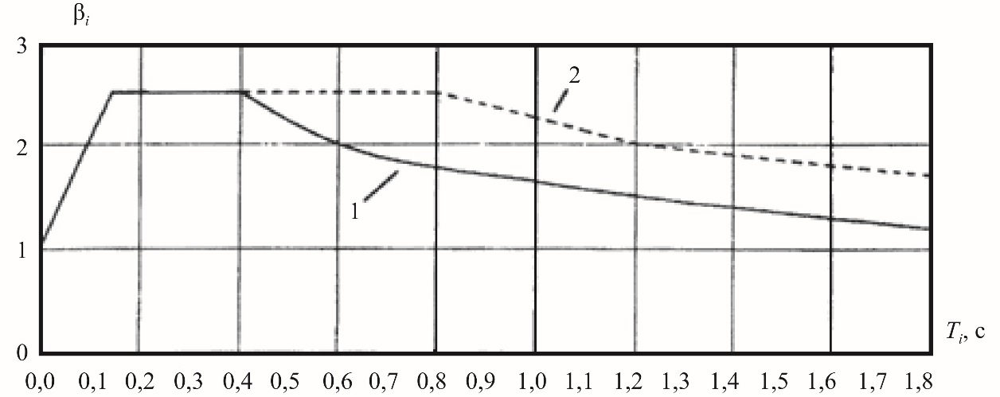
где W -обобщенное значение расчетных смещений (деформаций, напряжений или усилий), возникающих в рассматриваемых точках или сечениях под влиянием сейсмических воздействий;
Wi -обобщенное значение смещений (деформаций, напряжений или усилий), возникающих в рассматриваемых точках или сечениях под влиянием сейсмических нагрузок (сил), соответствующих i -й форме собственных колебаний ; q -число учитываемых в расчетах форм собственных колебаний.
Для всех сооружений можно применять данные натурных исследований, в том числе:
- результаты геофизического мониторинга тела и основания плотины (В.3 приложения В), при этом известные корреляционные зависимости применяют для перехода от данных, отвечающих частотному спектру колебаний при геофизических изысканиях, к прогнозируемому частотному спектру колебаний в расчетном сейсмособытии;
- фактические собственные частоты колебаний сооружения, измеренные в ходе тестовых динамических испытаний (8.6. 2 ) или в процессе стационарных инженерно -сейсмометрических наблюдений (В.3 приложения В);
- данные прочностных испытаний и неразрушающего контроля для образцов, выбуренных из тела плотины и основания.
В случаях отсутствия соответствующих экспериментальных данных допускается применять корреляционные связи между значениями статического модуля общей деформации E 0 (или статического модуля упругости Est ) и динамического модуля упругости Edyn , определяемого геофизическими методами. Допускается также применение статических прочностных характеристик материалов сооружения и грунтов основания; при этом следует вводить дополнительные коэффициенты условий работы, устанавливаемые нормами проектирования соответствующих сооружений для учета влияния на эти характеристики кратковременных динамических воздействий.
Сейсмостойкость сооружений на повторные сейсмические воздействия следует рассчитывать по вторичным схемам.
На предварительных стадиях проектирования (при отсутствии оценок вероятности возникновения значимых повторных толчков на площадке рассматриваемого ГТС) допускается проводить проверку сейсмостойкости при повторных землетрясениях с интенсивностью, уменьшенной по сравнению с интенсивностью РЗ на 1 балл.
Допускается для ряда сооружений применять двумерные расчетные схемы:
- расчеты по схеме плоской деформации -для гравитационных плотин, подпорных стен и других массивных сооружений;
- расчеты при схематизации указанных сооружений оболочками средней толщины, а также пластинами, работающими в срединной плоскости как изгибаемые плиты, -для арочных плотин и аналогичных им конструкций.
При специальном обосновании допускается применять также одномерные расчетные схемы для конструкций стержневого типа.
Для сооружений, входящих в состав напорного фронта, расчетная область основания, как правило, по своей нижней границе должна иметь плановые размеры не менее 5 H , а по глубине от подошвы сооружения -не менее 2 H , где H -характерный размер сооружения (для водоподпорных сооружений H -высота сооружения).
Для ГТС других видов размеры расчетной области основания принимают проектные организации на основе опыта проектирования подобных сооружений.
Примечание -Если на глубине менее 2 Н находятся породы, характеризуемые скоростями распространения упругих сдвиговых волн не менее 1100 м/с, допускается совмещать подошву расчетной области основания с кровлей указанных пород.
В расчетах сейсмостойкости сооружений по ЛСТ направление сейсмического воздействия 0 U следует выбирать таким образом, чтобы воздействие оказалось наиболее опасным для сооружения.
При этом водоподпорные ГТС следует рассчитывать на сейсмические воздействия, в которых вектор 0 U принадлежит вертикальной плоскости, нормальной к продольной оси сооружения, а контрфорсные и арочные плотины -дополнительно на воздействия, у которых вектор 0 U лежит в одной плоскости с продольной осью сооружения.
При отсутствии данных о соотношении горизонтальной и вертикальной компонент сейсмического воздействия допускается рассматривать два значения угла между вектором 0 U и горизонтальной плоскостью: 0° и 30 ° . При определении вертикальной составляющей следует принимать β i η ikj = 1.
Протяженные тоннели допускается рассчитывать на сейсмическое воздействие в плоскости, нормальной к оси тоннеля.
Отдельно стоящие ГТС, схематизируемые стержнями, следует рассчитывать на горизонтальные сейсмические воздействия в плоскостях наибольшей и наименьшей жесткости.
где ω q -частота последней учитываемой формы собственных колебаний; ω 1 минимальная частота собственных колебаний; ω c -частота, соответствующая пиковому значению на спектре отклика расчетной акселерограммы.
При этом число применяемых форм колебаний должно составлять не менее 25.
Примечание -На ранних стадиях проектирования при соответствующем обосновании допускается учитывать меньшее число форм колебаний, чем указано в настоящем пункте.
Конкретные методы определения бокового давления грунта при учете сейсмического воздействия в расчетах прочности сооружений принимают проектные организации с учетом особенностей конструкции сооружений и условий их эксплуатации.
В тех случаях, когда по расчетной схеме при потере устойчивости сооружение сдвигается совместно с частью грунтового массива, в расчетах устойчивости сооружений и их оснований следует учитывать грунтовые сейсмические силы в сдвигаемой части расчетной области основания. Избрание иных схем учета грунтовых сейсмических сил требует соответствующего обоснования.
При расчете устойчивости откосов сооружений из грунтовых материалов и склонов с применением ЛСТ сейсмические силы, действующие на сдвигаемую часть откосов и склонов, допускается определять инженерными методами (с учетом примененных методов проверки устойчивости).
Во всех случаях сдвигаемые грунтовые области (откосы сооружений из грунтовых материалов, склоны берегов и котлованов, засыпка подпорных стен, наносы, а также грунтовые массивы, слагающие основание) определяют из условия предельного равновесия этих областей с учетом всех нагрузок и воздействий особого сочетания, включающего в себя сейсмические воздействия.
Конкретные методы определения предельного состояния сдвигаемых грунтовых массивов, в том числе и в случае бокового давления грунта при сдвиге, принимают проектные организации с учетом особенностей конструкций и условий эксплуатации сооружений.
Примечание -Если грунтовые массивы примыкают к боковым граням сооружения с двух сторон, то в расчетах устойчивости следует принимать, что сейсмические силы в обоих грунтовых массивах действуют в одном направлении и тем самым увеличивают общее давление грунта на одну из боковых граней сооружения и одновременно уменьшают давление на противоположную грань.
При этом следует принимать во внимание характерные особенности наносов как объекта расчета:
- переменная высота слоя наносов на разных временных этапах эксплуатации сооружения;
- возможность существенной неоднородности слагающих наносы грунтов и их физико -механических свойств по высоте слоя наносов;
- возможность изменения во времени состава и свойств грунтов, слагающих наносы.
Все основные характеристики состояния наносов у верховой грани сооружения для различных временных этапов эксплуатации сооружения должны быть определены при проектировании сооружения и уточняться в процессе эксплуатации объекта по данным натурных наблюдений и исследований. Особое внимание должно обращаться на установление возможности разжижения грунтов наносов при сейсмических воздействиях и размеров зоны этого явления.
Для береговых склонов назначенный срок службы принимают равным максимальному для сооружений данного гидроузла.
Расчет подземных сооружений классов III и IV допускается проводить по ЛСТ. При этом следует учитывать раздельно:
- а) сейсмическое давление грунта, вызванное прохождением в грунтовой среде сейсмических волн сжатия -растяжения и сдвига;
- б) инерционные сейсмические нагрузки от массы конструкции подземного сооружения и массы породного свода.
- В расчетах подземных сооружений как по ДТ, так и по ЛСТ следует учитывать сейсмическое давление воды.
С этой целью к массе сооружения, отнесенной к точке k на смоченной поверхности сооружения, добавляют массу колеблющейся воды. Присоединенную массу воды определяют для каждой из компонент вектора смещений в принятой расчетной схеме сооружения.
Сейсмическое давление воды на сооружение допускается не учитывать, если глубина водоема у сооружения менее 10 м.
где ρ w -плотность воды; h -глубина воды у сооружения; µ -безразмерный коэффициент присоединенной массы воды, определяемый по таблице 8.5 ; ψ -коэффициент, учитывающий ограниченность длины водоема и принимаемый для l / h ≥ 3 равным 1, а для l / h < 3 -по таблице 8.5 ; здесь l -расстояние между сооружением и противоположным ему берегом водоема (для шлюзов и аналогичных сооружений -между противоположными стенками конструкции) на глубине 2/3 h от свободной поверхности воды.
Примечания
1 Для предварительного выбора характера колебаний сооружения по таблице 8.5 следует учитывать для бетонных и железобетонных плотин на нескальном основании колебания вращения и сдвига сооружения как жесткого тела, а для плотин из грунтовых материалов -деформации сдвига. В качестве расчетного следует использовать характер колебаний, приводящих к получению максимального значения присоединенной массы воды.
2 Если вода находится с двух сторон сооружения, ее присоединенную массу следует принимать равной сумме присоединенных масс воды, определяемых для каждой из сторон сооружения.
где d -диаметр круглого или размер стороны квадратного поперечного сечения сооружения, м;
- µ -коэффициент, определяемый по таблице 8.4 .
- а) для жестких массивных оградительных и причальных портовых ГТС:
- б) для отдельно стоящих сооружений, перечисленных в 8.4.29:
где p -ординаты эпюры гидродинамического давления, отнесенные к единице площади поверхности сооружения; р 0 ординаты эпюры гидродинамического давления, отнесенные к единице высоты отдельно стоящего сооружения;
Р -суммарное гидродинамическое давление на единицу длины сооружения;
Р 0 суммарное гидродинамическое давление на отдельно стоящее сооружение; h 0 глубина погружения точки приложения равнодействующей гидродинамического давления;
D , Ω , χ -безразмерные коэффициенты, определяемые по таблице 8.4 ; kf -см. экспликацию к формуле (8.8).
Примечание -Если вода находится с двух сторон сооружения, гидродинамическое давление следует принимать равным сумме абсолютных значений гидродинамических давлений, определенных для каждой из сторон сооружения.
где С w -скорость звука в воде, равная 1300 м/с;
Т 0 преобладающий период сейсмических колебаний грунта, значение которого принимают равным 0,5 с.
где z -расстояние от рассматриваемого сечения до водной поверхности;
Θ -угол наклона напорной грани к вертикали.
Остаточные смещения горных пород дна водохранилища, как правило, возможны при наличии в зоне водохранилища тектонических нарушений, особенно -активных разломов. При этом оценивать высоту волн следует с учетом прогноза характера сейсмотектонического движения (остаточного смещения) бортов тектонического разлома.
В тех случаях, когда по линии разлома при землетрясении преимущественно возможны субгоризонтальные подвижки структурно -тектонических блоков дна (совместно с сооружением), высоту волны Δ h , м, определяют по формуле
где А -принимают по таблице 8.2 ; kf -см. экспликацию к формуле (21);
Т 0 преобладающий период сейсмических колебаний ложа водохранилища, определяемый по данным сейсмологических исследований, а при их отсутствии принимаемый равным Т 0 = 0,5 с; g -ускорение свободного падения ; h -глубина водохранилища, м.
Таблица 8.4 -Расчет коэффициентов по характеру движения сооружения
| Характер движения сооружения | Коэффициенты | Коэффициенты | Коэффициенты | Коэффициенты |
|---|---|---|---|---|
| Характер движения сооружения | µ | D | Ω | χ |
| 1 Колебания вращения недеформируемого сооружения с вертикальной напорной гранью на податливом | 2 π c c h z R G z z - - | 2 π c c h z R G z h - - | 0,543 0,325 c c z h z h - - | 0,325 0,210 0,543 0,325 c c z h z h - - |
| 2 Горизонтальные поступательные перемещения недеформируемых сооружений: с вертикальной напорной гранью с наклонной напорной гранью | R θ 3 sin R | R θ 2 sin R | 0 , 543 sin θ 0,543 R | 0 , 6 0 , 6 |
| 3 Горизонтальные поступательные перемещения недеформируемых сооружений с вертикальной напорной гранью | µ 1 | D = µ 1 | - | - |
| 4 Горизонтальные изгибные колебания сооружений консольного типа с вертикальной напорной гранью | 1 3 ( 1) 1 ( 1) R C a C a + - + - | 1 ( 1) R C a + - | - | - |
| 5 Горизонтальные сдвиговые колебания сооружений консольного типа с вертикальной напорной гранью | 2 2 2 ( 1) ( 1) aR C a z a a h - - - - | 2 ( 1) aR C a - - | - | - |
| 6 Горизонтальные колебания отдельно стоящих вертикальных сооружений типа водозаборных башен, опор мостов, свай с круглой формой поперечного сечения | 1 /2 4 d h z h π | 1 /2 4 d h z h π | ( ) 1 4 1 / 2 d h π + | 1 1 2 4 h d h d + + |
| 7 Горизонтальные колебания отдельно стоящих вертикальных сооружений типа | 2 /2 d h z h | 2 /2 d h z h | 2 1 1 / 2 d h + | 2 2 2 4 h d h d + + |
| водозаборных башен, опор мостов, свай с квадратной формой поперечного сечения |
Примечания
- 1 Коэффициенты R , G , µ 1 , C 1 , C 2 , C 3 принимают по таблице 8. 6; z -ордината точки напорной грани, для которой вычисляют величину присоединенной массы воды (начало координат принимается на уровне водной поверхности); zc -ордината центра вращения, определяемая из расчета сооружения без учета влияния водной среды; θ -угол наклона напорной грани к горизонтали; d 1 диаметр поперечного сечения, м; d 2 сторона квадрата поперечного сечения, м; a -отношение ускорения гребня, определяемого из расчета плотины без учета влияния водной среды, к величине Аk f .
- 2 В случае, когда угол наклона напорной грани θ ≥ 75°, значения безразмерных коэффициентов принимают как для вертикальной напорной грани.
- 3 Значение безразмерного коэффициента µ 1 для ключевого сечения симметричных арочных плотин принимают по таблице 8. 6 . Для остальных сечений арочной плотины значение этого коэффициента увеличивается линейно до 1,3 µ 1 в пятах.
- 4 Для случаев, не предусмотренных настоящей таблицей, присоединенную массу воды определяют специальными расчетами.
Таблица 8.5 Коэффициент, учитывающий ограниченность длины водоема
| Отношение l / h | 0,2 | 0,4 | 0,6 | 0,8 | 1,0 | 0,2 | 1,4 | 1,6 | 1,8 | 2,0 | 2,5 | 3,0 |
|---|---|---|---|---|---|---|---|---|---|---|---|---|
| Коэффициент ψ | 0,26 | 0,41 | 0,53 | 0,63 | 0,72 | 0,78 | 0,83 | 0,88 | 0,90 | 0,93 | 0,96 | 1,00 |
Таблица 8.6 Значения коэффициентов, принимаемые в зависимости от отношения z / h
| Отношение z / h | Отношение z / h | Отношение z / h | Отношение z / h | Отношение z / h | Отношение z / h | Отношение z / h | Отношение z / h | Отношение z / h | Отношение z / h | |||
|---|---|---|---|---|---|---|---|---|---|---|---|---|
| коэффициенты | 0,1 | 0,2 | 0,3 | 0,4 | 0,5 | 0,6 | 0,7 | 0,8 | 0,9 | 1 ,0 | ||
| R | R | R | 0 , 23 | 0 , 36 | 0 , 47 | 0 , 55 | 0 , 61 | 0 , 66 | 0 , 70 | 0 , 72 | 0 , 74 | 0 , 74 |
| G | G | G | 0 , 12 | 0 , 23 | 0 , 34 | 0 , 45 | 0 , 55 | 0 , 64 | 0 , 72 | 0 , 79 | 0 , 83 | 0 , 85 |
| µ 1 | θ = 90 ° | b / h = 3 | 0,22 | 0,38 | 0,47 | 0,53 | 0,57 | 0,59 | 0,61 | 0,62 | 0,63 | 0,64 |
| µ 1 | θ = 90 ° | b / h = 2 | 0,22 | 0,35 | 0,41 | 0,46 | 0,49 | 0,52 | 0,53 | 0,54 | 0,54 | 0,55 |
| µ 1 | θ = 90 ° | b / h = 1 | 0,21 | 0,29 | 0,35 | 0,38 | 0,41 | 0,43 | 0,44 | 0,45 | 0,45 | 0,44 |
| µ 1 | θ = 30° при всех отношениях b / h | θ = 30° при всех отношениях b / h | 0,08 | 0,15 | 0,18 | 0,22 | 0,23 | 0,23 | 0,22 | 0,20 | 0,18 | 0,15 |
| С 1 | С 1 | С 1 | 0,07 | 0,09 | 0,10 | 0,10 | 0,09 | 0,08 | 0,07 | 0,07 | 0,06 | 0,06 |
| С 2 | С 2 | С 2 | 0,04 | 0,09 | 0,13 | 0,18 | 0,23 | 0,28 | 0,34 | 0,38 | 0,42 | 0,43 |
| С 3 | С 3 | С 3 | 0,86 | 0,73 | 0,59 | 0,46 | 0,34 | 0,23 | 0,14 | 0,06 | 0,02 | 0 ,00 |
Если по линии тектонического разрыва в зоне водохранилища следует ожидать субвертикально ориентированные остаточные смещения, то высота возможной гравитационной волны определяется в зависимости от магнитуды М землетрясения (при этом высота волны практически не зависит от глубины водохранилища):
-при 5 ≤ М < 7
- при 7 ≤ М ≤ 8,5:
где М -магнитуды землетрясений по поверхностным волнам с эпицентром в зоне водохранилища; значение магнитуд устанавливают по данным сейсмологических исследований. При отсутствии таких данных значение М допускается принимать по формуле
где I -расчетная сейсмичность района водохранилища (в баллах шкалы MSK -64);
H 0 глубина очага землетрясения, км.
Определение высоты волны, возникающей при обвалах береговых склонов при землетрясениях, требует рассмотрения вероятных условий обрушения и учета большого числа других факторов. По этим причинам для определения высоты таких волн рекомендуется обращаться в профильные проектные или исследовательские организации.
При определении высоты сейсмических волн на поверхности водохранилища допускается не учитывать дополнительно подъем уровня воды при взаимодействии такой волны с сооружением.
8.5Мероприятия по повышению сейсмостойкости гидротехнических сооружений
При невозможности исключения взаимных подвижек частей сооружения в проекте должны быть разработаны специальные конструктивные мероприятия, позволяющие воспринимать дифференцированные подвижки без ущерба для безопасности сооружения.
Примечание -Указания настоящего пункта не распространяются на ГТС из грунтовых материалов с экраном.
- а) уширение поперечного профиля плотины в ее нижней части;
- б) облегчение верхней части сооружений за счет применения оголовков минимальной массы, устройства верхней части сооружения в виде стенки, контрфорсной или рамной конструкции, выполнения полостей в пригребневой зоне сооружения и т. д.;
- в) укрепление основания, сложенного нескальными грунтами, путем инъектирования этих грунтов;
- г) защита напорной грани плотины из грунтовых материалов водонепроницаемым экраном;
- д) применение пространственно работающих массивных гравитационных плотин;
- е) устройство периметрального шва для арочных плотин;
- ж) применение «армированного грунта» для возведения земляных плотин.
При проектировании ограждающего сооружения следует рассматривать целесообразность принятия (на основании технико -экономического сопоставления) перечисленных ниже конструктивных решений, повышающих сейсмостойкость указанных сооружений:
- а) размещение ограждающих сооружений на основаниях, сложенных более прочными грунтами;
- б) возведение сооружений из массивов -гигантов;
- в) уширение подошвы и придание поперечным сечениям этих сооружений симметричного (относительно вертикальной продольной плоскости) профиля;
- г) разрезание протяженных сооружений антисейсмическими швами на участки, в пределах которых конструкция сооружения, грунтовые условия, глубины, нагрузки и другие подобные факторы практически не претерпевают изменений.
Протяженные причалы и набережные необходимо разделять на секции антисейсмическими швами. В пределах отдельной секции следует соблюдать однородные условия работы конструкции: не допускать существенных изменений характеристик основания, глубины водоема, нагрузок на сооружение, конструкции и размеров основных несущих элементов.
Сваи необходимо погружать до глубины залегания плотных, устойчивых к разжижению грунтов. Опирание нижних концов свай на рыхлые водонасыщенные грунты, глинистые грунты мягкопластичной, текучепластичной и текучей консистенции не допускается.
Верхние концы свай следует жестко заделывать в верхнее строение эстакадной конструкции. Узлы сопряжений должны быть рассчитаны на знакопеременные нагрузки.
Горизонтальную жесткость эстакад, при необходимости, следует обеспечивать применением наклонных свай или введением в рамы диагональных связей.
Подкрановые пути за шпунтовыми стенами следует устраивать на свайных фундаментах.
8.6Геодинамический мониторинг гидротехнических сооружений в процессе эксплуатации
- сейсмологический мониторинг за естественными и техногенными землетрясениями в зоне, включающей в себя сооружение и водохранилище;
- инженерно -сейсмометрический мониторинг на сооружениях и береговых примыканиях;
- геофизический мониторинг физико -механических свойств и напряженно -деформированного состояния сооружения и основания, а также района расположения гидроузла;
- геодезический мониторинг деформационных процессов, происходящих в сооружении и основании, а также земной поверхности в районе водохранилища;
- тестовые динамические испытания сооружения;
- проведение поверочных расчетов сейсмостойкости и оценку сейсмического риска в случае изменения сейсмических условий площадки строительства, свойств основания и сооружения во время эксплуатации;
- систему регламентных мероприятий персонала действующего ГТС по предотвращению либо снижению негативного влияния опасных геодинамических процессов и явлений в период эксплуатации.
Геодинамический мониторинг проводится комплексно и охватывает период от начала строительства до конца эксплуатации ГТС .
Конкретные составы и методы наблюдений и исследований определяются генеральным проектировщиком совместно с профильной проектной или исследовательской организацией. Рекомендуемые состав геодинамических наблюдений и периодичность измерений в зависимости от характеристики объекта мониторинга и активности геодинамических процессов приведены в приложении В.
В процессе динамического тестирования должны быть определены собственные частоты и формы колебаний, затухание по формам, амплитудно -частотные характеристики динамической податливости.
Для возбуждения колебаний допускается применять следующие естественные и искусственные источники:
- фоновые колебания сооружения, связанные с режимной работой гидроагрегатов;
- специальные, приуроченные к динамическим исследованиям, пуски и остановки гидроагрегатов;
- микросейсмы;
- тестовые взрывы небольших зарядов ВВ;
- воздействие специальной тестирующей вибромашины.
Динамические характеристики сооружения устанавливают при нормальном подпорном уровне и при уровне мертвого объема воды в водохранилище.
9Противопожарные мероприятия
В настоящем разделе установлены специальные требования к строительным конструкциям со средствами огнезащиты, автоматическим установкам пожарной сигнализации и пожаротушения, системам оповещения и управления эвакуацией людей при пожаре (далее -системы противопожарной защиты), предназначенным для применения в зданиях, строениях и сооружениях, возводимым в сейсмических районах в рамках реализации требований пожарной сейсмостойкости. Пожар как самостоятельная чрезвычайная ситуация не рассматривается.
9.1Основные положения
При устройстве двух и более путей эвакуации допускается, чтобы не более 50 % из них проходило через антисейсмические швы.
9.2Обеспечение огнестойкости объектов защиты
Применяемые средства огнезащиты должны обеспечить сохранность прочностных характеристик несущих конструкций зданий и сооружений на уровне, достаточном, чтобы выдержать повторные толчки интенсивностью воздействия в два раза меньше, чем происшедшее расчетное землетрясение, и возможное воздействие пожара. При этом для ответственных несущих конструкций допускается применять только конструктивную огнезащиту, кроме плитных материалов. При необходимости следует предусматривать мероприятия по обеспечению надежного крепления (адгезии) огнезащитных средств к защищаемой поверхности, в том числе за счет ее послойного армирования.
Применяемые средства огнезащиты не должны снижать способность конструкций противостоять сейсмическим воздействиям.
Не допускается применять для повышения огнестойкости конструктивные и иные средства огнезащиты, не прошедшие испытания на сейсмические воздействия по надежности крепления к конструкциям .
- параметры колебаний и напряженно -деформированного состояния элементов крепления с учетом демпфирования и взаимодействия с основанием;
- прочность элементов крепления с учетом характеристик прочности средств огнезащиты при динамических нагрузках.
При расчетах сооружений повышенного уровня ответственности следует учитывать изменение прочностных и деформационных характеристик строительных конструкций вызванных огневым воздействием с длительностью, установленной в 9.2.5.
9.3Требования к оборудованию технологической части автоматических установок пожаротушения
- инерционные, вызванные динамическими колебаниями системы при заданном сейсмическом воздействии;
- возникающие в результате относительного смещения опор оборудования технологической части автоматических установок пожаротушения при сейсмическом воздействии.
АПриложение А. Общее сейсмическое районирование территории Российской Федерации ОСР -2015
Список населенных пунктов Российской Федерации, расположенных в сейсмических районах, с указанием расчетной сейсмической интенсивности в баллах шкалы MSK64 для средних грунтовых условий и трех степеней сейсмической опасности -А (10 %), В (5 %), С (1 %) в течение 50 лет
| Наименование субъектов РФ и населенных | Карты ОСР -2015 A | Карты ОСР -2015 A | Карты ОСР -2015 A | Наименование субъектов РФ и населенных | Карты ОСР -2015 | Карты ОСР -2015 | Карты ОСР -2015 | Наименование субъектов РФ и населенных | Карты ОСР -2015 | Карты ОСР -2015 | Карты ОСР -2015 |
|---|---|---|---|---|---|---|---|---|---|---|---|
| пунктов | B | C | пунктов | A | B | C | пунктов | A | B | C | |
| РЕСПУБЛИКИ | РЕСПУБЛИКИ | РЕСПУБЛИКИ | РЕСПУБЛИКИ | РЕСПУБЛИКИ | РЕСПУБЛИКИ | РЕСПУБЛИКИ | РЕСПУБЛИКИ | РЕСПУБЛИКИ | РЕСПУБЛИКИ | РЕСПУБЛИКИ | РЕСПУБЛИКИ |
| Республика Адыгея | Республика Адыгея | Республика Адыгея | Республика Адыгея | Республика Адыгея | Республика Адыгея | Республика Адыгея | Республика Адыгея | Республика Адыгея | Республика Адыгея | Республика Адыгея | Республика Адыгея |
| Адыгейск | 8 | 8 | 9 | Кошехабль | 7 | 7 | 8 | Тульский | 7 | 8 | 9 |
| Гиагинская | 7 | 8 | 8 | Красногвардейское | 7 | 7 | 8 | Энем | 8 | 8 | 9 |
| Каменномостский | 8 | 8 | 9 | Майкоп | 7 | 8 | 9 | Яблоновский | 8 | 8 | 9 |
| Республика Алтай | Республика Алтай | Республика Алтай | Республика Алтай | Республика Алтай | Республика Алтай | Республика Алтай | Республика Алтай | Республика Алтай | Республика Алтай | Республика Алтай | Республика Алтай |
| Акташ | 9 | 9 | 10 | Каракокша | 8 | 8 | 9 | Тондошка | 7 | 8 | 9 |
| Актел | 8 | 9 | 10 | Катанда | 8 | 9 | 10 | Уймень | 8 | 8 | 9 |
| Амур | 8 | 8 | 9 | Козуль | 8 | 8 | 9 | Улусчерга | 8 | 9 | 10 |
| Анос | 8 | 9 | 10 | Кокоря | 9 | 9 | 10 | Усть - Кан | 8 | 8 | 9 |
| Артыбаш | 8 | 8 | 9 | Кош - Агач | 9 | 9 | 10 | Усть - Кокса | 8 | 9 | 10 |
| Барагаш | 8 | 9 | 10 | Кулада | 8 | 9 | 10 | Усть - Кумир | 8 | 8 | 9 |
| Балыктуюль | 9 | 9 | 10 | Купчегень | 8 | 9 | 10 | Усть - Муны | 8 | 9 | 10 |
| Балыкча | 8 | 9 | 10 | Курай | 9 | 9 | 10 | Усть - Мута | 8 | 9 | 10 |
| Белый Ануй | 8 | 9 | 10 | Курмач - Байгол | 7 | 8 | 9 | Усть - Улаган | 9 | 9 | 10 |
| Бельтир | 9 | 9 | 10 | Куюс | 8 | 9 | 10 | Хабаровка | 8 | 9 | 10 |
| Беляши | 9 | 9 | 10 | Кызылозек | 8 | 8 | 9 | Чаган - Узун | 9 | 9 | 10 |
| Бешозек | 8 | 9 | 10 | Кырлык | 8 | 8 | 9 | Чемал | 8 | 9 | 10 |
| Бешпельтир | 8 | 9 | 10 | Мал. Черга | 8 | 9 | 10 | Чендек | 8 | 9 | 10 |
| Бийка | 8 | 8 | 9 | Ниж.Талда | 8 | 9 | 10 | Черга | 8 | 9 | 10 |
| Бирюля | 8 | 8 | 9 | Огневка | 8 | 8 | 9 | Черный Ануй | 8 | 9 | 10 |
| Верх. Апшуяхта | 8 | 9 | 10 | Озеро - Куреево | 7 | 7 | 8 | Чибиля | 9 | 9 | 10 |
| Верх. Уймон | 8 | 9 | 10 | Онгудай | 8 | 9 | 10 | Чибит | 9 | 9 | 10 |
| Горбуново | 8 | 9 | 10 | Ортолык | 9 | 9 | 10 | Чоя | 8 | 8 | 9 |
| Горно - Алтайск | 8 | 8 | 9 | Сейка | 8 | 8 | 9 | Шишикман | 8 | 9 | 10 |
| Дмитриевка | 7 | 7 | 8 | Соузга | 8 | 8 | 9 | Шебалино | 8 | 9 | 10 |
| Дъектиек | 8 | 9 | 10 | Талда | 8 | 9 | 10 | Ынырга | 8 | 8 | 9 |
| Ело | 8 | 9 | 10 | Тебелер | 9 | 9 | 10 | Элекмонар | 8 | 9 | 10 |
| Иня | 8 | 9 | 10 | Теленгит - Сортогой | 9 | 9 | 10 | Ябоган | 8 | 9 | 10 |
| Карагай | 8 | 8 | 9 | Теньга | 8 | 9 | 10 | Яконур | 8 | 9 | 10 |
| Республика Башкортостан | Республика Башкортостан | Республика Башкортостан | Республика Башкортостан | Республика Башкортостан | Республика Башкортостан | Республика Башкортостан | Республика Башкортостан | Республика Башкортостан | Республика Башкортостан | Республика Башкортостан | Республика Башкортостан |
| Архангельское | - | - | 6 | Исянгулово | - | - | 6 | Мурсалимкино | - | - | 6 |
| Аскарово | - | - | 6 | Ишимбай | - | - | 6 | Новобелокатай | - | 6 | 7 |
| Кананикольское | - | - | 6 | Первомайский | - | - | 6 | ||||
| Баймак | - | - | 6 | Караидельский | - | - | 6 | Салават | - | - | 6 |
| Белорецк | - | - | 6 | Красноусольский | - | - | 6 | Сибай | - | - | 6 |
| Бурибай | - | - | 6 | Кумертау | - | - | 6 | Тирлянский | - | - | 6 |
| Верх. Киги | - | - | 6 | Ломовка | - | - | 6 | Тубинский | - | - | 6 |
| Верх. Авзян | - | - | 6 | Маячный | - | - | 6 | Тукан | - | - | 6 |
| Воскресенское | - | - | 6 | Мелеуз | - | - | 6 | Улу - Теляк | - | - | 6 |
| Ермолаево | - | - | 6 | Месягутово | - | - | 6 | Учалы | - | - | 6 |
| Зирган | - | - | 6 | Миндяк | - | - | 6 | Юмагузино | - | - | 6 |
| Инзер | - | - | 6 | Мраково | - | - | 6 | ||||
| Республика Бурятия | Республика Бурятия | Республика Бурятия | Республика Бурятия | Республика Бурятия | Республика Бурятия | Республика Бурятия | Республика Бурятия | Республика Бурятия | Республика Бурятия | Республика Бурятия | Республика Бурятия |
| Аршан | 8 | 9 | 10 | Кудара - Сомон | 7 | 8 | 9 | Сокол | 8 | 8 | 9 |
| Бабушкин | 9 | 9 | 10 | Куйтун | 7 | 8 | 9 | Сосново - Озерское | 6 | 7 | 8 |
Продолжение приложения А *
| Наименование субъектов РФ и населенных | Карты ОСР -2015 | Карты ОСР -2015 | Карты ОСР -2015 | Наименование субъектов РФ и населенных пунктов | Карты ОСР -2015 | Карты ОСР -2015 | Карты ОСР -2015 | Наименование субъектов РФ и населенных пунктов | Карты ОСР -2015 | Карты ОСР -2015 | Карты ОСР -2015 |
|---|---|---|---|---|---|---|---|---|---|---|---|
| Наименование субъектов РФ и населенных | A | B | C | Наименование субъектов РФ и населенных пунктов | A | B | C | Наименование субъектов РФ и населенных пунктов | A | B | C |
| пунктов Баргузин | 8 | 9 | 9 | Кырен | 8 | 9 | 10 | Сотниково | 8 | 8 | 9 |
| Баянгол | 8 | 8 | 9 | Кяхта | 8 | 8 | 9 | Старое Татаурово | 8 | 9 | 9 |
| Бичура | 7 | 8 | 9 | Мал. Куналей | 7 | 8 | 9 | Таксимо | 9 | 9 | 10 |
| Большой | 7 | 8 | 9 | Михайловка | 7 | 8 | 9 | Таловка | 8 | 9 | 10 |
| Луг Большая Кудара | 7 | 8 | 9 | Мишиха | 9 | 9 | 10 | Тарбагатай | 8 | 8 | 9 |
| Большой Куналей | 7 | 8 | 9 | Мухоршибирь | 7 | 8 | 9 | Татаурово | 8 | 9 | 9 |
| Брянск | 8 | 9 | 10 | Нарын | 7 | 8 | 9 | Ташир | 8 | 8 | 9 |
| Верхний Жирим | 8 | 8 | 9 | Наушки | 8 | 8 | 9 | Тимлюй | 8 | 9 | 10 |
| Выдрино | 9 | 9 | 10 | Нижнеангарск | 9 | 9 | 10 | Тоннельный | 9 | 9 | 10 |
| Гусиное Озеро | 8 | 8 | 9 | Ниж. Бургалтай | 8 | 8 | 9 | Торы | 8 | 9 | 10 |
| Гэгэтуй | 8 | 8 | 9 | Ниж. Саянтуй | 8 | 8 | 9 | Тохой | 8 | 8 | 9 |
| Десятниково | 7 | 8 | 9 | Ниж. Торей | 7 | 8 | 9 | Тресково | 8 | 9 | 10 |
| Троицкое | |||||||||||
| Дырестуй | 8 | 8 | 9 | Николаевский | 7 | 8 | 9 | Тунка | 8 | 9 | 10 |
| Джида | 8 | 8 | 9 | Ниж. Иволга | 8 | 8 | 9 | 8 | 9 | 9 | |
| Дэдэ - Ичетуй Елань | 8 7 | 8 8 | 9 9 | Новый Уоян Новоильинск | 9 7 | 9 8 | 10 | Турка Турунтаево | 8 8 | 9 9 | 10 9 |
| Жаргаланта | 8 | 8 | 9 | Новокижингинск | 7 | 7 | 9 8 | Улан - Удэ | 8 | 8 | 9 |
| Жемчуг | 8 | 9 | 10 | Новоселенгинск | 8 | 8 | 9 | Улекчин | 7 | 8 | 9 |
| Заиграево | 7 | 8 | 9 | Новый Заган | 7 | 8 | 9 | Унгуркуй | 7 | 8 | 9 |
| Закаменск Заозерный | 7 | 8 | 9 9 | Оер Оймур | 7 9 | 8 9 | 9 10 | Усть - Баргузин Усть - Киран | 8 7 | 9 8 | 10 9 |
| Заречный | 8 8 | 8 8 | 9 | Окино - Ключи | 7 | 8 | 9 | Усть - Кяхта | 8 | 8 | 9 |
| Зун - Мурино | 8 | 9 | 10 | Онохой | 8 | 8 | 9 | Харашибирь | 7 | 8 | 9 |
| Зурган - Дэбэ | 7 | 8 | 9 | Орлик | 8 | 9 | 10 | Холтосон | 8 | 8 | 9 |
| Иволгинск | 8 | 8 | 9 | Оронгой | 8 | 8 | 9 | Хоринск | 7 | 7 | 8 |
| Ильинка | 8 | 9 | 9 | Осиновка | 9 | 9 | 10 | Хоронхой | 8 | 8 | 9 |
| Илька | 7 | 8 | 9 | 8 | 8 | 9 | Хужиры | 8 | 9 | 10 | |
| Инзагатуй | 8 | 8 | 9 | Петропавловка | 7 | 8 | 9 | Цакир | 7 | 8 | 9 |
| Кабанск | 8 | 9 | 10 | Подлопатки Санага | 8 | 8 | 9 | Цолга | 7 | 8 | 9 |
| Каленово | 8 | 8 | 9 | Сахарный Завод | 7 | 8 | 9 | Чикой | 7 | 8 | 9 |
| Каменск | 8 | 9 | 10 | Северобайкальск | 9 | 9 | 10 | Шаралдай | 7 | 8 | 9 |
| Кижинга | 7 | 7 | 8 | Северомуйск | 9 | 9 | 10 | Шибертуй | 7 | 8 | 9 |
| 8 | |||||||||||
| 9 | 9 | 10 | Селенгинск | 9 | 10 | Эрхирик | 8 | 9 | |||
| Кичера | 9 | 10 | Селендума | 8 | 8 | Янчукан | 9 | ||||
| Кудара | 9 | Республика | 8 Дагестан | 9 | 9 | 10 | |||||
| Ахты | 9 | 9 | 10 | Касумкент | 8 | 9 | 10 | Ново - Гагатли | 8 | 8 | 9 |
| Ачису | 9 | 9 | 10 | Каспийск | 9 | 9 | 10 | Новый Кяхулай | 8 | 9 | 10 |
| Бабаюрт | 8 | 8 | 9 | Кизилюрт | 8 | 9 | 9 | Новый Сулак | 8 | 9 | 9 |
| Бавтугай | 8 | 9 | Кизляр | 7 | 8 | 8 | Сулак | 9 | |||
| Белиджи | 9 | 9 | 9 | Комсомольский | 7 | 8 | 8 | Султан - Янгиюрт | 8 | 8 9 | 9 |
| Ботлих | 10 10 | Кубачи | Тюбе | 8 | 9 | 10 | |||||
| Буйнакск | 9 9 | 9 9 | 10 | Куруш | 9 8 | 9 8 | 10 9 | Тарки | 8 8 | 9 | 10 |
| Дагестанские Огни | 9 | 9 | Кяхулай | 8 | 10 | 9 | 9 | ||||
| 10 | 9 | Хасавюрт | 8 | ||||||||
| Дербент | 9 | 9 | 10 | Леваши | 9 9 | 9 | 10 | Шамилькала | 9 | 9 | 10 |
| Дубки | 9 | 9 | 10 | Маджалис | 10 | Шамхал | 8 | 9 | 9 | ||
| 9 | 9 | 10 | Мамедкала | 9 | 9 | 10 | Южно - | 6 | 7 | 7 | |
| Дылым | Республика | 9 Ингушетия | Сухокумск | ||||||||
| Ассиновская Горагорский | 9 8 | 9 | 10 | Назрань | 8 8 | 9 9 | 10 | Нестеровская | 9 8 | 9 9 | 10 10 |
| Карабулак Малгобек | 8 | 9 | 9 10 | Нартан Насыр - Корт | 8 | 9 | 9 10 | Серноводск Сурхахи | 8 | 9 | 10 |
| 9 | 8 | 9 | 9 | Троицкая | 8 | 9 | 10 | ||||
| 8 | 9 | 9 | Ненже Кабардино - | Балкарская Республика | 9 | 9 | Тырныауз | 10 | |||
| 8 | 9 | 9 | Кызбурун Третий | 8 | 8 | 9 | |||||
| Аргудан Баксан Заюково | 8 8 | 8 9 | 9 9 | Майский Нальчик | 8 8 | 8 9 | 9 9 | Хасанья Чегем Второй | 8 8 | 9 9 | 9 9 |
Продолжение приложения А *
| Наименование субъектов РФ и населенных | Карты ОСР -2015 | Карты ОСР -2015 | Карты ОСР -2015 | Наименование субъектов РФ и населенных | Карты ОСР -2015 | Карты ОСР -2015 | Карты ОСР -2015 | Наименование субъектов РФ и населенных пунктов | Карты ОСР -2015 | Карты ОСР -2015 | Карты ОСР -2015 |
|---|---|---|---|---|---|---|---|---|---|---|---|
| Наименование субъектов РФ и населенных | A | B | C | Наименование субъектов РФ и населенных | A | B | C | Наименование субъектов РФ и населенных пунктов | A | B | C |
| пунктов Залукокоаже | 8 | 8 | 9 | пунктов Нарткала | 8 | 9 | 9 | Чегем Первый | 8 | 9 | 9 |
| Исламень | 8 | 9 | 9 | Прохладный | 8 | 8 | 9 | Шалушка | 8 | 9 | 9 |
| Кахун | 8 | 9 | 9 | Сармаково | 8 | 8 | 9 | ||||
| Кашхатау | 8 | 9 | 9 | Терек | 8 | 9 | 9 | ||||
| Республика Калмыкия | Республика Калмыкия | Республика Калмыкия | Республика Калмыкия | Республика Калмыкия | Республика Калмыкия | Республика Калмыкия | Республика Калмыкия | Республика Калмыкия | Республика Калмыкия | Республика Калмыкия | Республика Калмыкия |
| Большой Царын | - | - | 7 | Комсомольский | 6 | 6 | 7 | Троицкое | - | - | 6 |
| Городовиковск | - | 6 | 6 | Лагань | - | 6 | 6 | Элиста | - | - | 6 |
| Ики - Бурул | - | 6 | 6 | Садовое | - | - | 6 | Яшкуль | - | - | 7 |
| Карачаево - Черкесская Республика | Карачаево - Черкесская Республика | Карачаево - Черкесская Республика | Карачаево - Черкесская Республика | Карачаево - Черкесская Республика | Карачаево - Черкесская Республика | Карачаево - Черкесская Республика | Карачаево - Черкесская Республика | Карачаево - Черкесская Республика | Карачаево - Черкесская Республика | Карачаево - Черкесская Республика | Карачаево - Черкесская Республика |
| Теберда | 8 | 9 | 10 | Черкесск | 8 | 8 | 9 | ||||
| Республика Карелия | Республика Карелия | Республика Карелия | Республика Карелия | Республика Карелия | Республика Карелия | Республика Карелия | Республика Карелия | ||||
| Калевала | - | - | 6 | Лоухи | - | 6 | 7 | Чупа | - | 6 | 7 |
| Кемь | - | - | 6 | Пяозерский | - | - | 6 | ||||
| Республика Коми | Республика Коми | Республика Коми | Республика Коми | Республика Коми | Республика Коми | Республика Коми | Республика Коми | ||||
| Благоево | - | - | 6 | Кослан | - | - | 6 | Трусово | - | - | 6 |
| Боровой | - | - | 6 | Курья | - | - | 6 | Усогорск | - | - | 6 |
| Важгорт | - | 6 | 7 | Летка | - | - | 6 | Усть - Кулом | - | - | 6 |
| Вендинга | - | - | 6 | Пожег | - | - | 6 | Югыдъяг | - | - | 6 |
| Водный | - | - | 6 | Помоздино | - | - | 6 | Ухта | - | - | 6 |
| Кожым | - | - | 6 | Сосногорск | - | - | 6 | Ярега | - | - | 6 |
| Республика Крым | Республика Крым | Республика Крым | Республика Крым | Республика Крым | Республика Крым | Республика Крым | Республика Крым | Республика Крым | Республика Крым | Республика Крым | Республика Крым |
| Азовское | 7 | 7 | 8 | Комсомольское | 7 | 8 | 9 | Первомайское | 6 | 7 | 7 |
| Алупка | 8 | 9 | 10 | Кореиз | 8 | 9 | 10 | Планерское | 8 | 8 | 9 |
| Алушта | 8 | 9 | 10 | Красногвардейское | 7 | 7 | 8 | Понизовка | 8 | 9 | 10 |
| Армянск | 6 | 6 | 7 | Краснокаменка | 8 | 9 | 10 | Почтовое | 8 | 8 | 9 |
| Багерово | 8 | 9 | 9 | Красноперекопск | 6 | 6 | 7 | Приморский | 8 | 8 | 9 |
| Бахчисарай | 8 | 8 | 9 | Куйбышево | 8 | 8 | 9 | Раздольное | 6 | 6 | 7 |
| Белогорск | 8 | 8 | 9 | Ленино | 8 | 8 | 9 | Саки | 7 | 7 | 8 |
| Владиславовка | 8 | 8 | 9 | Ливадия | 8 | 9 | 10 | Санаторное | 8 | 9 | 10 |
| Вольное | 7 | 7 | 8 | Масандра | 8 | 9 | 10 | Симеиз | 8 | 9 | 10 |
| Гаспра | 8 | 9 | 10 | Мирный | 7 | 7 | 8 | Симферополь Советский | 7 | 8 | 8 |
| Гвардейское | 6 | 7 | 7 10 | Молодежное | 7 | 8 | 9 | 7 | 8 | 8 | |
| Голубой Залив Горностаевка | 8 | 9 9 | 9 | Научный | 8 | 8 | 9 | Старый Крым | 8 | 8 9 | 9 9 |
| 8 | Нижнегорский | 7 | 7 | 8 | Судак | 8 8 | 8 | ||||
| Гурзуф | 8 6 | 9 7 | 10 7 | Николаевка Новоозерное | 7 | 8 | 8 | Феодосия Форос | 8 | 9 | 9 |
| Джанкой Евпатория | 7 | 8 | 7 | 7 | 8 | 10 | |||||
| Заозерное | 7 | 7 | 8 | Новоселовское | 6 | 7 | 7 | Черноморское | 6 | 6 | 7 |
| 7 | 8 | 8 | Орджоникидзе Ореанда | 8 | 8 | 9 | Щебетовка | 8 | 8 8 | 9 | |
| Зуя | 7 | 9 | Парковое | 8 | 9 | 10 | Щелкино | 8 | 9 | ||
| Керчь | 8 | 9 | 8 | 9 | 10 | Яковенково | 8 | 9 9 | 9 | ||
| Кировское | 8 | 8 | 9 | Партенит | 8 | 9 | 10 | Ялта | 8 | 10 | |
| Город федерального значения Севастополь | Город федерального значения Севастополь | Город федерального значения Севастополь | Город федерального значения Севастополь | Город федерального значения Севастополь | Город федерального значения Севастополь | Город федерального значения Севастополь | Город федерального значения Севастополь | Город федерального значения Севастополь | Город федерального значения Севастополь | Город федерального значения Севастополь | Город федерального значения Севастополь |
| Балаклава | 8 | 9 | 9 | Инкерман | 8 | 9 | 9 | Любимовка | 8 | 8 | 9 |
| Верхнесадовое | 8 | 8 | 9 | Кача | 8 | 8 | 9 | Севастополь | 8 | 9 | 9 |
| Республика Марий Эл | Республика Марий Эл | Республика Марий Эл | Республика Марий Эл | Республика Марий Эл | Республика Марий Эл | Республика Марий Эл | Республика Марий Эл | Республика Марий Эл | Республика Марий Эл | Республика Марий Эл | Республика Марий Эл |
| Визимьяры | - | 6 | 7 | Красный Стекловар | 6 | 6 | 7 | Оршанка | - | - | 6 |
| Волжск | 6 | 6 | 7 | Куженер | - | - | 6 | Параньга | - | - | 6 |
| Звенигово | 6 | 6 | 7 | Мари - Турек | - | - | 6 | Приволжский | 6 | 6 | 7 |
| Йошкар - Ола | - | - | 6 | Мариец | - | - | 7 | Сернур | - | - | 6 |
| Килемары | 6 | Медведково | 6 | - | - | ||||||
| - | - | - | - | Советский | 6 | ||||||
| Козьмодемьянск Красногорский | 6 6 | 6 6 | 7 7 | Морки Мочалище | - - | 6 6 | 7 7 | Суслонгер Юрино | - 6 | 6 6 | 7 7 |
| Республика Саха (Якутия) | Республика Саха (Якутия) | Республика Саха (Якутия) | Республика Саха (Якутия) | Республика Саха (Якутия) | Республика Саха (Якутия) | Республика Саха (Якутия) | Республика Саха (Якутия) | Республика Саха (Якутия) | Республика Саха (Якутия) | Республика Саха (Якутия) | Республика Саха (Якутия) |
| Алдан | 6 | 7 | 7 | Кулар | 8 | 8 | 9 | Светлый | - | - | - |
| Аллах - Юнь | 7 | 8 | 9 | Кысыл - Сыр | 6 | 6 | 7 | Северный | 8 | 8 | 9 |
Продолжение приложения А *
| Наименование субъектов РФ и населенных | Карты ОСР -2015 | Карты ОСР -2015 | Карты ОСР -2015 | Карты ОСР -2015 | Карты ОСР -2015 | Карты ОСР -2015 | Наименование субъектов РФ и населенных | Карты ОСР -2015 | Карты ОСР -2015 | Карты ОСР -2015 | |
|---|---|---|---|---|---|---|---|---|---|---|---|
| Наименование субъектов РФ и населенных | A | B | C | субъектов населенных | A | C | Наименование субъектов РФ и населенных | A | B | C | |
| пунктов пунктов пунктов Лазо 8 8 | пунктов пунктов пунктов Лазо 8 8 | пунктов пунктов пунктов Лазо 8 8 | пунктов пунктов пунктов Лазо 8 8 | пунктов пунктов пунктов Лазо 8 8 | пунктов пунктов пунктов Лазо 8 8 | пунктов пунктов пунктов Лазо 8 8 | пунктов пунктов пунктов Лазо 8 8 | пунктов пунктов пунктов Лазо 8 8 | пунктов пунктов пунктов Лазо 8 8 | пунктов пунктов пунктов Лазо 8 8 | пунктов пунктов пунктов Лазо 8 8 |
| Амга | - | - | 6 | 9 | Серебряный Бор | 8 | 8 | 9 | |||
| Артык | 8 | 9 | 10 | Лебединый | 6 | 8 | Солнечный | 7 | 8 | 9 | |
| Батагай | 8 | 8 | 9 | Ленинский | 6 | 7 | Табага | 6 | 7 | 8 | |
| Безымянный | 6 | 6 | 7 | Ленск | - | 7 | Тенкели | 8 | 8 | 9 | |
| Белая Гора | 6 | 7 | 7 | Маган | 6 | 8 | Тикси | 8 | 9 | 10 | |
| Бердигестях | - | - | 6 | Майя | 6 | 8 | Томмот | - | 6 | 7 | |
| Беркакит | 8 | 8 | 10 | Марха | - | 6 | Торго | 7 | 8 | 8 | |
| Бестях | - | 6 | 7 | Мохсоголлох | - | 7 | Усть - Куйга | 8 | 8 | 9 | |
| Бол. Нимныр | 7 | 7 | 8 | Нагорный | 8 | 9 | Усть - Мая | 6 | 6 | 7 | |
| Борогонцы | 6 | 6 | 7 | Намцы | 6 | 7 | Усть - Нера | 8 | 9 | 10 | |
| Бриндакит | 7 | 8 | 9 | Нежданинское | 7 8 | 9 | Хандыга | 6 | 7 | 7 | |
| Быковский | 8 | 9 | 10 | Нелькан | 9 | Хани | 9 | 9 | 10 | ||
| Верхоянск Витим | 7 6 | 8 7 | 8 8 | Нерюнгри Нижнеянск | 8 9 | 10 10 | Хонуу Чагда | 8 6 | 8 6 | 9 7 | |
| Власово | |||||||||||
| Депутатский | 8 | 8 | 9 | Ниж. Бестях | 6 | 8 | Черский | - | 6 | 7 | |
| Джебарики - Хая | 8 | 8 7 | 9 8 | Ниж. Куранах | 6 | 7 9 | Чульман Чурапча | 7 | 8 | 9 | |
| Жатай | 7 6 | 7 | 8 | Оймякон Олекминск | 8 - | 6 | Ыллымах | 6 6 | 7 7 | 8 7 | |
| Жиганск | - | - | 6 | Оленегорск | 6 | 7 | Ыныкчан | 7 | 8 | 9 | |
| Заречный | 6 | 6 | 7 | Ольчан | 8 | 9 | Ытык - Кюель | 6 | 6 | 7 | |
| Звездочка | 7 | 8 | 9 | Пеледуй | 6 | 8 | Эльгинский | 8 | 8 | 9 | |
| Золотинка | 8 | 9 | 10 | Покровск | - | 7 | Эльдикан | 6 | 7 | 8 | |
| Зырянка | 6 | 6 | 8 | Предпорожный | 8 | 9 | Эсэ - Хайя | 8 | 8 | 9 | |
| Кангалассы | 7 | 8 | 7 | Югоренок | 7 | 8 | 9 | ||||
| Канкунский | 6 7 | 7 | 8 | Сангар Сарылах | 6 8 | 9 | Якутск | 6 | 7 | 8 | |
| Республика Северная Осетия - Алания | Республика Северная Осетия - Алания | Республика Северная Осетия - Алания | Республика Северная Осетия - Алания | Республика Северная Осетия - Алания | Республика Северная Осетия - Алания | Республика Северная Осетия - Алания | Республика Северная Осетия - Алания | Республика Северная Осетия - Алания | Республика Северная Осетия - Алания | Республика Северная Осетия - Алания | Республика Северная Осетия - Алания |
| Алагир | 8 | 9 | 10 | Дигора | 8 | 9 | Моздок | 8 | 8 | 9 | |
| Ардон | 8 | 9 | 9 | Заводской | 9 | 10 | Ногир | 8 | 9 | 9 | |
| Архонская | 8 | 9 | 9 | Змейская | 8 | 9 | Октябрьское | 8 | 9 | 9 | |
| Беслан | 8 | 9 | 9 | Камбилеевское | 8 | 9 | Садон | 9 | 9 | 10 | |
| Бурон | 9 | 9 | 10 | Кизляр | 8 | 9 | Старый | 8 | 9 | 9 | |
| Верх. Згид | 9 | 9 | 10 | Луковская | 8 | 9 | Лексен Холст | 9 | 9 | 10 | |
| Верх. Фиагдон | 9 | 9 | 10 | Мизур | 9 | 10 | Чикола | 8 | 9 | 9 | |
| Владикавказ | 8 | 9 | 10 | Михайловское | 8 | 9 | Эльхотово | 8 | 9 | 9 | |
| Республика Татарстан (Татарстан) | Республика Татарстан (Татарстан) | Республика Татарстан (Татарстан) | Республика Татарстан (Татарстан) | Республика Татарстан (Татарстан) | Республика Татарстан (Татарстан) | Республика Татарстан (Татарстан) | Республика Татарстан (Татарстан) | Республика Татарстан (Татарстан) | Республика Татарстан (Татарстан) | Республика Татарстан (Татарстан) | Республика Татарстан (Татарстан) |
| Агрыз | - | - | 6 | Заинек | - | 7 | Мамадыш | 6 | 6 | 7 | |
| Аксубаево | - | 6 | 7 | Зеленая Роща | - | 6 | Менделеевск | - | 6 | 7 | |
| Актюбинский | - | - | 6 | Зеленодольск | 6 | 7 | Набережные Челны | - | 6 | 7 | |
| Алексеевское | - | 6 | 7 | Казань | 6 | 7 | Нижнекамск | 6 | 6 | 7 | |
| Альметьевск | - | - | 6 | Камские Поляны | - | 7 | Ниж. Вязовые | 6 | 6 | 7 | |
| Арск | 6 | 6 | 7 | Устье | - | 7 | Ниж. Мактама | - | - | 6 | |
| Богатые Сабы | 6 | 6 | 7 | Камское Карабаш | - | 6 | Нурлат | - | 6 | 7 | |
| Болгар | - | - | 7 | Кошки | - | 7 | Русский Акташ | - | 6 | 7 | |
| Буинск | - | - | 6 | Куйбышевск. | - | 7 | Сарманово | - | - | 6 | |
| Васильево | 6 | 6 | 7 | Затон | - | Тетюши | - | - | 6 | ||
| - | - | 6 | Кукмор Лаишево | 7 | 6 | ||||||
| Дербешкинский Джалиль | - | 7 | Чистополь | - | 7 | ||||||
| - | - | 6 | Лениногорск | - | 6 | Шемордан | - | 6 | 7 | ||
| Елабуга | - | 6 | 7 | Лубяны | 7 | Шугорово | - | - | 6 | ||
| - 6 Республика Тыва | - 6 Республика Тыва | - 6 Республика Тыва | - 6 Республика Тыва | - 6 Республика Тыва | - 6 Республика Тыва | - 6 Республика Тыва | - 6 Республика Тыва | - 6 Республика Тыва | - 6 Республика Тыва | - 6 Республика Тыва | - 6 Республика Тыва |
| Адыр - Кежиг | 8 | 9 | 10 | Ишти - Хем 8 | 10 | Успенка | 8 | 9 | 10 | ||
| Ак - Даш | 8 | 9 | 10 | Каа - | 8 | 10 | Усть - Бурен | 8 | 8 | 10 | |
| Ак - Довурак | 9 | 9 | 10 | Хем Хаак | 8 | 10 | Усть - Элегест | 8 | 9 | 10 | |
| Ак - Дуруг | 8 | 9 | 10 | Кара - Кара - Холь | 9 | 10 | Уюк | 8 | 9 | 10 | |
| Ак - Тал | 8 | 9 | 10 | Кок - Хаак | 8 | 10 | Хадын | 8 | 9 | 10 | |
| Ак - Чыраа | 8 | 9 | 10 | Кочетово | 8 | 10 | Хайыракан | 8 | 9 | 10 | |
| 8 | 9 | 10 | Кунгуртуг | 8 | 10 | Хандагайты | 8 | 9 | 10 | ||
| Ак - Эрик Алдан - Маадыр | 8 | 9 | 10 | Кундустуг | 8 | 10 | Хову - Аксы | 8 | 9 | 10 | |
| Аржаан | 8 | 9 | 10 | Кызыл | 8 | 10 | Холь - Оожу | 8 | 9 | 10 |
СП 14.13330.2018
Продолжение приложения А *
| Наименование субъектов РФ и населенных | Карты ОСР -2015 | Карты ОСР -2015 | Карты ОСР -2015 | Наименование субъектов РФ и населенных пунктов | Карты ОСР -2015 | Карты ОСР -2015 | Карты ОСР -2015 | Наименование субъектов РФ и населенных пунктов | Карты ОСР -2015 | Карты ОСР -2015 | Карты ОСР -2015 |
|---|---|---|---|---|---|---|---|---|---|---|---|
| Наименование субъектов РФ и населенных | A | B | C | Наименование субъектов РФ и населенных пунктов | A | B | C | Наименование субъектов РФ и населенных пунктов | A | B | C |
| пунктов Арыг - Узю | 8 | 9 | 10 | Кызыл - Даг | 9 | 9 | 10 | Хонделен | 9 | 9 | 10 |
| Арыскан | 8 | 9 | 10 | Кызыл - Мажалык | 9 | 9 | 10 | Хондергей | 8 | 9 | 10 |
| Бай - Хаак | 8 | 9 | 10 | Кызыл - Тайга | 8 | 9 | 10 | Хорум - Даг | 8 | 9 | 10 |
| Балгазын | 8 | 9 | 10 | Кызыл - Хая | 9 | 9 | 10 | Хут | 8 | 8 | 9 |
| Барлык | 9 | 9 | 10 | Межегей | 8 | 9 | 10 | Целинное | 8 | 8 | 10 |
| Баян - Кол | 8 | 9 | 10 | Морен | 8 | 9 | 10 | Чаа - Суур | 8 | 9 | 10 |
| Баян - Тала | 8 | 9 | 10 | Мугур - Аксы | 9 | 9 | 10 | Чадан | 8 | 9 | 10 |
| Белдир - Арыг | 8 | 9 | 10 | Нарын | 8 | 9 | 10 | Чазылар | 8 | 8 | 9 |
| Берт - Даг | 8 | 9 | 10 | Саглы | 9 | 9 | 10 | Чал - Кежиг | 8 | 9 | 10 |
| Бижиктиг - Хая | 9 | 9 | 10 | Самагалтай | 8 | 9 | 10 | Черби | 8 | 9 | 10 |
| Бора - Тайга | 8 | 9 | 10 | Сарыг - Сеп | 8 | 8 | 10 | Чодураа | 8 | 9 | 10 |
| Бояровка | 8 | 8 | 10 | Сесерлиг | 8 | 9 | 10 | Шагонар | 8 | 9 | 10 |
| Булун - Бажи | 8 | 10 | Шамбалыг | 8 | |||||||
| Булун - Терек | 8 | 9 | 10 | Сосновка | 8 | 9 | 10 | Шанчы | 8 | 9 | 10 |
| 8 | 9 | 10 | Сизим | 8 | 8 | 10 | |||||
| Бурен - Бай - Хак Бурен - Хем | 8 8 | 8 8 | 10 10 | Суг - Бажы Суш | 8 8 | 8 9 | 10 10 | Шекпээр Шеми | 9 8 | 9 9 | 10 10 |
| Владимировка | 8 | 9 | 10 | Тарлаг | 8 | 8 | 10 | Шуурмак | 8 | 9 | 10 |
| Дон - Терезин | 9 | 9 | 10 | Теве - Хая | 8 | 9 | 10 | Ырбан | 8 | 8 | 9 |
| Ий | 8 | 8 | 9 | Тора - Хем | 8 | 8 | 10 | Элегест | 8 | 9 | 10 |
| Ийи - Тал | 8 | 9 | 10 | Торгалыг | 8 | 9 | 10 | Эрги - Барлык | 9 | 9 | 10 |
| Ийме | 8 | 9 | 10 | Туран | 8 | 8 | 10 | Эрзин | 8 | 9 | 10 |
| Ильинка | 8 | 8 | Тээли | 10 | 10 | ||||||
| 10 9 9 Ээрбек 8 9 Республика Хакасия | 10 9 9 Ээрбек 8 9 Республика Хакасия | 10 9 9 Ээрбек 8 9 Республика Хакасия | 10 9 9 Ээрбек 8 9 Республика Хакасия | 10 9 9 Ээрбек 8 9 Республика Хакасия | 10 9 9 Ээрбек 8 9 Республика Хакасия | 10 9 9 Ээрбек 8 9 Республика Хакасия | 10 9 9 Ээрбек 8 9 Республика Хакасия | 10 9 9 Ээрбек 8 9 Республика Хакасия | 10 9 9 Ээрбек 8 9 Республика Хакасия | 10 9 9 Ээрбек 8 9 Республика Хакасия | 10 9 9 Ээрбек 8 9 Республика Хакасия |
| Абаза | 7 | 8 | 9 | Вершина Тея | 7 | 7 | 8 | Саяногорск | 7 | 8 | 8 |
| Абакан | 7 | 7 | 8 | Жемчужный | 6 | 7 | 8 | Сонский | 7 | 7 | 8 |
| Аскиз | 7 | 7 | 8 | Коммунар | 6 | 7 | 8 | Сорск | 7 | 7 | 8 |
| Балыкса | 7 | 7 | 8 | Копьево | 6 | 7 | 8 | Туим | 6 | 7 | 8 |
| Бельтырское | 7 | 8 | 8 | Майна | 7 | 8 | 9 | Усть - Абакан | 7 | 7 | 8 |
| Бея | 7 | 8 | 8 | Майнагашев | 7 | 7 | 8 | Черемушки | 7 | 8 | 9 |
| Бирикчул | 7 | 7 | 8 | Пригорск | 7 | 7 | 8 | Черногорск | 7 | 7 | 8 |
| 7 | Приисковый | 7 | Шира | 6 | 7 | 8 | |||||
| Бискамжа | 7 | 8 | 6 | 8 | |||||||
| Герменчук Горагорский | 9 8 | 9 9 | 10 9 | Курчалой Лаха - Невре | 8 8 | 9 8 | 10 9 | Урус - Мартан Цоцин - Юрт | 9 8 | 9 9 | 10 10 |
| Грозный | 8 | 9 | 10 | Наурская | 8 | 8 | 9 | Чири - Юрт | 9 | 9 | 10 |
| 10 | Шали | ||||||||||
| Гудермес | 8 | 9 | 9 | Ойсхара | 8 | 9 | 9 | 9 | 10 | ||
| Знаменское | 8 | 8 | 9 | Старые Атаги | 9 | 9 | 10 | Щелковская | 8 | 8 | 9 |
| Чувашская Республика - Чувашия | Чувашская Республика - Чувашия | Чувашская Республика - Чувашия | Чувашская Республика - Чувашия | Чувашская Республика - Чувашия | Чувашская Республика - Чувашия | Чувашская Республика - Чувашия | Чувашская Республика - Чувашия | Чувашская Республика - Чувашия | Чувашская Республика - Чувашия | Чувашская Республика - Чувашия | Чувашская Республика - Чувашия |
| Вурнары | - | - | 6 | Мариинский Посад | 6 | 6 | 7 | Цивильск | 6 | 6 | 7 |
| Канаш | - | - | 6 | Новочебоксарск | 6 | 6 | 7 | Чебоксары | 6 | 6 | 7 |
| Козловка | 6 | 6 | 7 | Сосновка | 6 | 6 | 7 | Ядрин | - | 6 | 7 |
| Кугеси | 6 | 6 | 7 | Урмары | - | 6 | 6 | ||||
| КРАЯ | КРАЯ | КРАЯ | КРАЯ | КРАЯ | КРАЯ | КРАЯ | КРАЯ | КРАЯ | КРАЯ | КРАЯ | КРАЯ |
| Алейск | 7 | 7 | 8 | Ключи | 6 | 6 | 7 | Сибирский | 6 | 7 | 8 |
| Алтайский | 8 | 8 | 9 | Косиха | 7 | 7 | 8 | Славгород | - | 6 | 7 |
| Баево | 6 | 6 | 8 | Красногорское | 7 | 8 | 9 | Смоленское | 7 | 8 | 9 |
| Барнаул | 6 | 7 | 8 | Краснощеково | 7 | 8 | 9 | Советское | 7 | 8 | 9 |
| Белоярск | 6 | 7 | 8 | Кулунда | - | 6 | 7 | Соколово | 7 | 8 | 9 |
| Бийск | 7 | 8 | 8 | Майма | 8 | 8 | 9 | Сорокино | 7 | 8 | 9 |
| Благовещенка | 6 | 6 | 7 | Малиновое Озеро | 6 | 6 | 7 | Степное Озеро | 6 | 6 | 7 |
| Боровиха | 6 | 7 | 8 | Мамонтово | 6 | 7 | 8 | Тальменка | 6 | 7 | 8 |
| Боровлянка | 7 | 7 | 8 | Михайловское | 6 | 6 | 7 | Тогул | 7 | 7 | 8 |
| Бурсоль | - | 6 | 7 | Научный Городок | 6 | 7 | 8 | Топчиха | 7 | 7 | 8 |
| Быстрый Исток | 7 | 8 | 9 | Новоалтайск | 6 | 7 | 8 | Троицкое | 7 | 8 | 9 |
Продолжение приложения А *
| Наименование субъектов РФ и населенных пунктов | B | B | B | -2015 C | ОСР A | ОСР A | ОСР A | ||||
|---|---|---|---|---|---|---|---|---|---|---|---|
| Наименование субъектов РФ и населенных пунктов | -2015 C | субъектов населенных пунктов | -2015 C | 6 7 | 8 | 6 | 7 Новоегорьевское | пунктов | |||
| 7 | 8 | Тюменцево | Волчиха Горняк | 6 6 | 7 | 8 | Новосиликатный | 6 | |||
| 6 | 7 8 | Тягун | 6 | 7 | 8 | Завьялово | 6 | 6 | 8 | Павловск | 6 |
| 7 8 | Целинное | 7 | 7 | 8 | Залесово | 6 | 7 | 8 | Поспелиха | ||
| 7 | 7 8 | Черемное | 6 | 7 | 8 | Заринск | 6 | 7 | 8 | Ребриха | |
| 6 | 7 8 | Шипуново | 7 | 8 | 9 | Затон | 6 | 7 | 8 | Родино | 6 |
| 6 | 7 | Южный | 6 | 7 | 8 | Змеиногорск | 7 | 7 | 8 | Романово | 6 |
| 7 | 8 | Яровое | - | 6 | 7 | Камень - на - Оби | 6 | 7 | 8 | Рубцовск | 6 |
| 7 | 8 | Забайкальский край | Абагайтуй | 6 | 7 | 8 | Кактолга | ||||
| 6 | 7 | 8 | Погодаево | 6 | 7 | 8 | Агинское | 6 | 6 | 8 | Калга |
| 6 | 7 | 8 | Пограничный | 6 | 7 | 8 | Аксеново - | 6 | 7 | 8 | Калинино |
| 6 | 7 | 8 | Прав. Кумаки | 6 | 7 | 8 | Зиловское Акурай | 6 | 7 | 8 | Капцегайтуй |
| 6 | 7 | 8 | Приаргунск | 6 | 7 | 8 | Акша | 6 | 7 | 8 | Карымское |
| 6 | 7 | 8 | Приисковый | 6 | 7 | 8 | Александровка | 6 | 7 | 8 | Катаево |
| 7 | 8 | 9 | Размахнино | 6 | 7 | 8 | Алия | 6 | 7 | 8 | Катангар |
| 7 | 8 | 9 | Савва - Борзя | 6 | 7 | 8 | Алтан | 6 | 7 | 8 | Кличка |
| 6 | 7 | 8 | Савватеево | 6 | 7 | 8 | Альбитуй | 7 | 8 | 9 | Ключевский |
| 7 | 7 | 8 | Сбега | 6 | 7 | 8 | Амазар | 7 | 7 | 8 | Ключевское |
| 6 | 7 | 8 | Селинда | 6 | 7 | 8 | Арахлей | 6 | 7 | 8 | Ковыли |
| 6 | 7 | 8 | Семиозерный | 7 | 7 | 8 | Арбагар | 6 | 7 | 8 | Козлово |
| 6 | 7 | 8 | Сивяково | 6 | 7 | 8 | Аргунск | 6 | 7 | 8 | Комсомольское |
| 6 | 7 | 8 | Смоленка | 6 | 7 | 8 | Аренда | 6 | 7 | 8 | Кондуй |
| 6 | 7 | 8 | Соктуй - Милозан | 6 | 7 | 8 | Арта | 6 | 7 | 8 | Конкино |
| 7 | 8 | 9 | Соловьевск | 6 | 7 | 8 | Архангельское | 7 | 8 | 9 | Копунь |
| 6 | 7 | 8 | Солончный | 6 | 7 | 8 | Атамановка Бада | 6 7 | 7 8 7 | 8 | Коротково |
| 7 | 8 | 9 | Сохондо Среднеаргунск | 6 6 | 7 7 8 | 8 | Байгул | 6 | 7 | 8 | Красная Ималка Краснокаменск |
| 6 6 | 7 7 | 8 8 | Средний Калар | 8 | 9 | 9 | Байхор | 7 | 8 | ||
| Средняя Борзя | 6 | 7 | 9 | Красноярово | |||||||
| 6 | 7 | 8 | 8 | Балей | 6 | 7 | 8 | Красный Великан | |||
| 6 | 7 | 8 | Средняя Олекма | 7 | 8 | 9 | Бальзой | 6 7 | 7 8 | 8 9 | Красный Чикой Ксеньевка |
| 7 7 | 8 7 | 9 | Староцурухайтуй | 6 6 | 7 7 | 8 8 | Баляга | 7 | 8 | 9 | Куанда |
| 9 | 9 | 8 10 | Старый Олов Степной | 6 | 7 | 8 | Баляга - Катангар Батакан | 6 | 7 | 8 | Кузнецово |
| 6 | 7 | 8 | Тайна | 6 | 7 | 8 | Безречная | 6 | 6 | 8 | Куйтун |
| 6 | 7 | 8 | Талман - | 6 | 7 | 8 | Беклемишево | 6 | 7 | 8 | Кулусутай |
| 6 | 7 | 8 | Борзя Танга | 6 | 7 | 8 | Биликтуй | 6 | 7 | 8 | Курорт - Дарасун |
| 6 | 7 | 8 | Таптугары | 7 | 7 | 8 | Бищигино | 6 | 7 | 8 | Курулга |
| 6 | 7 | 8 | Тарбагатай | 7 | 8 | 9 | Богдановка | 6 | 7 | 8 | Курунзулай |
| 6 | 7 | 8 | Тарбальджей | 6 | 7 | 8 | Богомягково | 6 | 7 | 8 | Кутугай |
| 6 | 7 | 8 | Татаурово | 6 | 7 | 8 | Бол. Боты | 6 | 7 | 8 | Кыкер |
| 6 | 7 | 8 | Толбага | 7 | 8 | 9 | Бол. Речка | 7 | 8 | 9 | Кыра |
| 6 | 7 | 8 | Тохтор | 6 | 7 | 8 | Бол. Зерентуй | 6 | 7 | 8 | Ленинский |
| 6 | 7 | 8 | Трубачево | 6 | 7 | 8 | Борзя | 6 | 7 | 8 | Лесной Городок |
| 6 | 7 | 8 | Тунгокочен | 7 | 7 | 8 | Бохто | 6 | 7 | 8 | Линево Озеро |
| 6 | 7 | 8 | Тупик | 7 | 7 | 8 | Брусиловка | 6 | 7 | 8 | Ложниково |
| 6 | 7 | 8 | Турга | 6 | 7 | 8 | Буйлэсан | 6 | 7 | 8 | Любовь |
| 6 | 7 | 8 | Тыргетуй | 6 | 7 | 8 | Букачача | 6 | 7 | 8 | Маккавеево |
| 6 | 7 | 8 | Убур - Тохтор | 6 | 7 | 8 | Булдуруй 1- й | 6 | |||
| 6 | 7 | Угдан | 7 | 8 | 7 | 8 | Мал. Тонтой | ||||
| 8 | 6 | 8 | Булум | 6 6 | 6 | 8 | Малета | ||||
| 7 | 8 | 9 | Укурей | 6 | 7 7 | Бура | 7 | 8 | Малоархангельск | ||
| 7 | 8 7 | 9 | Укурик | 6 | 8 | Бурукан | 6 | 7 | 8 8 | Малышево Мангут | |
| 6 6 | 8 | Улан Улан - Цацык | 6 6 | 7 6 | 8 8 | Бурулятуй Бутунтай | 6 6 | 7 | Манкечур | ||
| 6 | 7 | 8 8 | Улача | 7 | 8 | Бухта | 6 | 7 | 8 | ||
| 6 | 7 | Улеты | 6 | 8 | Бушулей | 6 | 7 7 | 8 | Маньково | ||
| 6 | 7 7 | 8 8 | Ульхун - Партия | 6 6 | 7 7 | 8 | Бырка | 6 | 8 | Маргуцек | |
| 6 | 7 | 8 | Ульякан | 6 | 7 | 8 | Бытэв | 6 | 7 7 | 8 8 | Матусово Менза |
| 7 | Карты 7 | и 8 | Наименование РФ Улятуй | ОСР A 6 | Карты -2015 B C 7 | РФ 8 | ОСР A | Карты B | и | Наименование субъектов населенных |
Продолжение приложения А *
| Наименование субъектов РФ и населенных пунктов | Карты ОСР -2015 | Карты ОСР -2015 | Карты ОСР -2015 | Наименование субъектов РФ и населенных пунктов | Карты ОСР -2015 | Карты ОСР -2015 | Карты ОСР -2015 | Наименование субъектов РФ и населенных пунктов | Карты ОСР -2015 | Карты ОСР -2015 | Карты ОСР -2015 |
|---|---|---|---|---|---|---|---|---|---|---|---|
| Наименование субъектов РФ и населенных пунктов | A | B | C | Наименование субъектов РФ и населенных пунктов | A | B | C | Наименование субъектов РФ и населенных пунктов | A | B | C |
| Васильевский Хутор | 6 | 7 | 8 | Мильгидун | 6 | 7 | 8 | Унда | 6 | 7 | 8 |
| Верх. Калгукан | 6 | 7 | 8 | Мирная | 6 | 6 | 8 | Ундино - Поселье | 6 | 7 | 8 |
| Верх. Куларки | 6 | 7 | 8 | Мироново | 6 | 7 | 8 | Урейск | 6 | 7 | 8 |
| Верх. Куэнга | 6 | 7 | 8 | Мирсаново | 6 | 7 | 8 | Урлук | 7 | 8 | 9 |
| Верх. Ульхун | 6 | 7 | 8 | Митрофаново | 6 | 7 | 8 | Уровские Ключи | 6 | 7 | 8 |
| Верх. Усугли | 6 | 7 | 8 | Михайловка | 6 | 7 | 8 | Урульга | 6 | 6 | 8 |
| Верх. Хила | 6 | 7 | 8 | Михайло - Павловск | 6 | 7 | 8 | Урулюнгуй | 6 | 7 | 8 |
| Верх. Цасучей | 6 | 7 | 8 | Могзон | 6 | 7 | 8 | Усть - Иля | 6 | 7 | 8 |
| Верх - Чита | 6 | 7 | 8 | Могойтуй | 6 | 7 | 8 | Усть - Ималка | 6 | 7 | 8 |
| Верх. Шаранай | 6 | 6 | 8 | Могоча | 7 | 7 | 8 | Усть - Каренга | 7 | 7 | 8 |
| Верх. Шергольджин | 7 | 8 | 9 | Моклакан | 7 | 8 | Усть - Наринзор | 6 | 7 | 8 | |
| Гавань | 6 | 7 | 8 | Молодежный | 6 | 7 7 | 8 | Усть - Обор | 7 | 8 | 9 |
| Газимурский Завод | 6 | 7 | 8 | Молодовск | 6 | 7 | 8 | Усть - Озерная | 6 | 7 | 8 |
| Галкино | 6 | 6 | 8 | Мордой | 6 | 7 | 8 | Усть - Тасуркай | 6 | 7 | 8 |
| Гаур | 6 | 7 | 8 | Мулино | 6 | 7 | 8 | Усть - Теленгуй | 6 | 7 | 8 |
| Георгиевка | 6 | 7 | 8 | Нагорный | 6 | 7 | 8 | Усугли | 6 | 7 | 8 |
| Глинка | 7 | 7 | 8 | Надежный | 6 | 7 | 8 | 6 | 7 | 8 | |
| Глинянка | 7 | Утан | |||||||||
| Горбуновка | 6 6 | 7 | 8 | Нарасун Нарын - Талача | 6 | 8 | Ушмун | 6 | 7 7 | 8 | |
| Горекацан | 6 | 7 7 | 8 8 | Неляты | 6 9 | 6 9 | 8 10 | Фирсово Хаара - Бырка | 6 6 | 6 | 8 8 |
| Горный Зерентуй Гуля | 6 | 7 7 | 8 8 | Нерчинск Ниж. Гирюнино | 6 6 | 7 | 8 8 | Хада - Булак Хадакта | 6 6 | 7 7 | 8 8 |
| Давенда | 7 7 | 7 | 8 | Ниж. Ильдикан | 6 | 7 7 | 8 | Хапчеранга | 6 | 7 | 8 |
| Дарасун | 6 | 7 | 8 | Ниж. Калгукан | 6 | 7 | 8 | Харагун | 6 | 7 | 8 |
| Даурия | 6 | 7 | 8 | Ниж. Ключи | 6 | 7 | 8 | Харанор | 6 | 7 | 8 |
| Долгокыча | 6 | 7 | 8 | Ниж. Кокуй | 6 | 7 | 8 | Харауз | 7 | 8 | 9 |
| Домна | 6 | 7 | 8 | Ниж. Стан | 6 | 7 | 8 | Хилогосон | 7 | 7 | 8 |
| Доно | 6 | 7 | 8 | Ниж. Цасучей | 6 | 7 | 8 | Хилок | 7 | 7 | 8 |
| Доронинское | 6 | 7 | 8 | Ниж. Шахтама | 6 | 7 | 8 | Холбон | 6 | 7 | 8 |
| Досауй | 6 | 7 | 8 | Николаевка | 6 | 7 | 8 | Холуй - База | 6 | 7 | 8 |
| Дровяная | 6 | 8 | 6 | 7 | 8 | Хохотуй | 7 | ||||
| 7 | Николаевское | 7 | 9 | ||||||||
| Дульдурга Дунаево | 6 6 | 7 7 | 8 8 | Новая Заря Новая Кука | 6 6 | 7 7 | 8 8 | Хушенга Цаган - Олуй | 6 6 | 7 7 | 8 8 |
| Дурбачи | 6 | 7 | 8 | Новая Чара | 9 | 9 | 10 | Целинный | 6 | 7 | 8 |
| Дурой | 6 | 7 | 8 | Новоберезовское | 6 | 7 | 8 | Чалдонка | 7 | 7 | 8 |
| Единение | 6 | 7 | 8 8 | Новоборзинское Новодоронинск | 6 | 7 | 8 | Чапо - Олого Чара | 9 9 | 9 | 10 |
| Елизаветино | 6 | 7 | 6 | 7 | 8 | 9 | 10 | ||||
| Жидка | 6 | 7 | 8 | Новоивановка | 6 | 7 | 8 | Чашино - Ильдикан | 6 | 7 | 8 |
| Жимбира | 6 | 7 | 8 | Новоильинск | 6 | 7 | 8 | Черемхово | 7 | 7 7 | 8 |
| Жиндо 1 - е | 7 | 8 | 9 | Новокручининский | 6 | 7 | 8 | Чернышевск | 6 | 8 | |
| Жипхеген | 7 | 7 | 8 | Новоорловск | 6 | 6 | 8 | Чигильтуй | 6 | 7 | 8 |
| Жирикен | 6 | 7 | 8 | Новопавловка | 7 | 8 | 9 | Чикичей | 6 | 7 | 8 |
| Забайкальск | 6 7 | 7 | 8 | Новотроицк | 6 | 7 | 8 | Чиндагатай | 6 | 7 | 8 |
| Заречное | 7 | 8 | Новоцурухайтуй | 6 | 7 | 8 | Чирон | 6 | 7 | 8 | |
| Засопка | 7 | 7 | 8 | Новый Акатуй | 6 | 7 | 8 | Чита | 6 | 7 | 8 |
| Захарово | 7 7 | 8 | 8 | Новый Дурулгуй | 6 | 7 | 8 | Чупрово | 6 | 7 | 8 |
| Зеленое Озеро | 7 | 8 | Новый Олов | 6 | 7 | 8 | Шара | 6 | 7 | 8 | |
| Зерен | 6 | 7 | 8 | Норинск | 6 | 7 | 8 | Шаранча | 6 | 7 7 | 8 |
| Знаменка | 6 | 7 | 8 | Октябрьский | 6 | 7 | 8 | Шерловая Гора | 6 | 8 | |
| Золотореченск | 6 | 7 | 8 | Олекан | 6 | 7 | 8 | Шивия | 6 | 7 | 8 |
| Зоргол | 6 | 7 | 8 | Оленгуй | 6 | 7 | 8 | Шилка | 6 | 7 | 8 |
| Зугмара | 7 | 8 | 9 | Олинск | 6 | 7 | 7 | 7 | 8 | ||
| Зюльзя | 6 | 7 | 8 | 6 | 6 | 8 8 | Шимбилик Широкая | 6 | 7 | 8 | |
| Икабья | 9 | 9 | 10 | Оловянная Олочи | 6 | 7 | 8 | Шишкино | 6 | 7 | 8 |
| 6 | 7 | 8 | 7 | 8 | |||||||
| Икшица Илим | 6 6 | 7 7 | 8 8 | Онон Онон - Борзя | 6 | 7 | 8 | Шоноктуй Шумунда | 6 6 | 7 7 | 8 8 |
| 6 | 7 | 8 | Орловский | 6 | 6 | 8 | Энгорск | 7 | |||
| Ингода Итака | 7 | 6 | 7 | 8 | Юбилейный | 6 | 7 | 8 8 | |||
| 6 | 7 7 | 8 8 | Орой | 7 | |||||||
| Кадахта | Яблоново | 6 |
Продолжение приложения А *
| Наименование субъектов РФ и населенных | Карты ОСР -2015 A B | Карты ОСР -2015 A B | Карты ОСР -2015 A B | Наименование субъектов РФ и населенных пунктов | Карты ОСР -2015 | Карты ОСР -2015 | Карты ОСР -2015 | Наименование субъектов РФ и населенных пунктов | Карты ОСР -2015 | Карты ОСР -2015 | Карты ОСР -2015 |
|---|---|---|---|---|---|---|---|---|---|---|---|
| Наименование субъектов РФ и населенных | C | Наименование субъектов РФ и населенных пунктов | A | B | C | Наименование субъектов РФ и населенных пунктов | A | B | C | ||
| пунктов Кадая | 6 | 7 | 8 | Первомайский | 6 | 7 | 8 | Явленка | 6 | 7 | 8 |
| Казаново | 6 | 7 | 8 | Передняя Бырка | 6 | 7 | 8 | Ясная | 6 | 6 | 8 |
| Кайдалово | 6 | 6 | 8 | Пески | 7 | 8 | 9 | Ясногорск | 6 | 6 | 8 |
| Кайластуй | 6 | 7 | 8 | Пешково | 6 | 7 | 8 | ||||
| Камчатский край | Камчатский край | Камчатский край | Камчатский край | Камчатский край | Камчатский край | Камчатский край | Камчатский край | ||||
| Апача | 9 | 9 | 10 | Крутогорово | 7 | 7 | 8 | Раздольный | 9 | 10 | 10 |
| Апука | 8 | 8 | 9 | Лазо | 9 | 9 | 10 | Светлый | 9 | 10 | 10 |
| Атласово | 9 | 9 | 10 | Лаучан | 8 | 8 | 9 | Седанка | 8 | 8 | 9 |
| Ачайваям | 8 | 8 | 9 | Лесная | 7 | 9 | Слаутное | 6 | 7 | 8 | |
| Аянка | 6 | 7 | 8 | Лесной | 9 | 8 9 | 10 | Соболево | 7 | 8 | 8 |
| Березняки | 9 | 10 | 10 | Макарьевское | 8 | 9 | 10 | Сокоч | 9 | 9 | 10 |
| Большерецк | 8 | 9 | 9 | Манилы | 6 | 7 | 8 | Сосновка | 9 | 10 | 10 |
| Воямполка | 7 | 8 | 9 | Мильково | 9 | 9 | 10 | Таловка | 7 | 7 | 8 |
| Вывенка | 9 | 9 | 10 | Моховая | 9 | 10 | 10 | Термальный | 9 | 10 | 10 |
| Двуречье | 9 | 10 | 10 | Нагорный | 9 | 10 | 10 | Тигиль | 8 | 8 | 9 |
| Долиновка | 9 | 9 | 10 | Начики | 9 | 9 | 10 | Тиличики | 9 | 9 | 10 |
| Елизово | 9 | 10 | 10 | Николаевка | 9 | 10 | 10 | Тымлат | 8 | 8 | 9 |
| Запорожье | 9 | 10 | 10 | Озерновский | 9 | 10 | 10 | Усть - Большерецк | 8 | 8 | 9 |
| Зеленый | 9 | 10 | 10 | Октябрьский | 8 | 8 | 9 | Устьевое | 7 | 7 | 8 |
| Ивашка | 8 | 8 | 10 | Оссора | 8 | 8 | 10 | Усть - Камчатск | 10 | 10 | 10 |
| Каменское | 6 | 7 | 8 | Палана | 7 | 8 | 9 | Усть - Хайрюзово | 8 | 8 | 9 |
| Ключи | 9 | 9 | 10 | Паратунка | 9 | 10 | 10 | Хаилино | 8 | 8 | 9 |
| Ковран | 8 | 8 | 9 | Пахачи | 8 | 8 | 9 | Хайрюзово | 8 | 8 | 9 |
| Козыревск | 9 | 9 | 10 | Петропавловск - | 9 | 10 | 10 | Шаромы | 9 | 9 | 10 |
| Корф | 9 | 9 | 10 | Камчатский Пионерский | 9 | 10 | 10 | Эссо | 8 | 9 | 10 |
| Красный | 9 | 10 | 10 | Привольное | 7 | 8 | 8 | ||||
| Крутоберегово 10 10 10 | Крутоберегово 10 10 10 | Крутоберегово 10 10 10 | Крутоберегово 10 10 10 | Краснодарский | 9 | край | |||||
| Абинск | 8 | 8 | 9 | Кабардинка | 8 | 9 | 9 | Новороссийск | 8 | 9 | 9 |
| Абрау - Дюрсо | 8 | 9 | 9 | Кавказская | 6 | 7 | Октябрьская | 6 | 6 | 7 | |
| Анапа | 8 | 9 | 9 | Калинино | 7 | 7 8 | 8 | Отрадная | 7 | 8 | 8 |
| Апшеронск | 8 | 8 | 9 | Каневская | 6 | 6 | 7 | Павловская | 6 | 6 | 7 |
| Армавир | 7 | 7 | 8 | Коноково | 7 | 7 | 8 | Пашковский | 7 | 8 | 9 |
| Архипо - Осиповка | 8 | 9 | 9 | Кореновск | 7 | 7 | 8 | Полтавская | 7 | 8 | 8 |
| Афипский | 8 | 8 | 9 | Красная Поляна | 8 | 9 | 10 | Приморско - Ахтарск | 7 | 7 | 8 |
| Ахтырский | 8 | 8 | 9 | Краснодар | 7 | 8 | 9 | Псебай | 8 | 8 | 9 |
| Ачуево | 7 | 7 | 8 | Красносельский | 6 | 7 | 7 | Северская | 8 | 8 | 9 |
| Белая Глина | 6 | 6 | 7 | Кропоткин | 6 | 7 | 7 | Славянск | 8 | 8 | 9 |
| Белореченск | 7 | 8 | 9 | Крыловская | 6 | 6 | 7 | - на - Кубани Сочи | 8 | 9 | 9 |
| Брюховецкая | 7 | 7 | 7 | Крымск | 8 | 8 | 9 | Старощербиновская | 6 | 6 | 7 |
| Верхнебаканский | 8 | 9 | 9 | Курганинск | 7 | 7 | 8 | Староминская | 6 | 6 | 7 |
| Витязево | 8 | 9 | 9 | Курчанская | 8 | 8 | 9 | Тамань | 8 | 9 | 9 |
| Владимирская | 7 | 8 | 8 | Кутаис | 8 | 8 | 9 | Тбилисская | 6 | 7 | 7 |
| Выселки | 6 | 7 | 8 | Кущевская | 6 | 6 | 7 | Темрюк | 8 | 8 | 9 |
| Гайдук | 8 | 9 | 9 | Лабинск | 7 | 8 | 8 | Тимашевск | 7 | 7 | 8 |
| 9 | 9 | Ленинградская | 6 | 6 | 6 | 7 | |||||
| Геленджик | 8 6 | 7 | 7 | Мостовской | 7 | 6 8 | 7 | Тихорецк Троицкая | 8 | 8 | 9 |
| Гирей Горячий Ключ | 8 | 8 | 9 | Нефтегорск | 8 | 8 | 9 9 | Туапсе | 8 | 9 | 9 |
| Гулькевичи | 6 | 7 | 7 | Нижнебаканский | 9 | Успенское | |||||
| Джубга | 8 | 9 | 9 | Новокубанск | 8 | 9 | 7 | Усть - Лабинск | 7 | 7 | 8 |
| Динская | 7 | 7 | 8 | Новоминская | 7 6 | 7 6 | 7 | Хадыженск | 7 | 7 | 8 |
| 6 | 7 | Новомихайловский | 8 | 9 | 9 | Холмская | 8 | 8 | 9 | ||
| Ейск | 6 | 8 | 8 | 9 | |||||||
| Ильский | Новопокровская | ||||||||||
| Красноярский край | 8 | 8 | 9 | 6 | 6 | 7 | Черноморский | 8 | 8 | 9 |
Продолжение приложения А *
| Наименование субъектов РФ и населенных | Карты ОСР -2015 A B | Карты ОСР -2015 A B | C | Наименование субъектов РФ и населенных пунктов | Карты ОСР -2015 | Карты ОСР -2015 | Карты ОСР -2015 | Наименование субъектов РФ и населенных | Карты ОСР -2015 | Карты ОСР -2015 | C |
|---|---|---|---|---|---|---|---|---|---|---|---|
| пунктов | A | B | C | пунктов | A | B | |||||
| Ачинск | - | 6 7 | 7 | Кедровый | 6 | 6 | 7 | Раздолинск | - - | 6 - | 6 6 |
| Балахта Березовка | 6 6 | 6 | 8 7 | Кодинск Козулька | - 6 | 6 6 | 7 7 | Рассвет Саянский | 6 | 7 | 8 |
| Боготол | 6 | 6 | 7 | Копьево | 6 | 7 | 8 | Солнечный | 6 | 6 | 7 |
| Богучаны | - | 6 | 7 | Кошурниково | 6 | 7 | 8 | Сосновоборск | 6 | 6 | 7 |
| Бол. Ирба | 7 | 7 | 8 | Краснокаменск | 6 | 7 | 8 | Стрелка | - | - | 6 |
| Бол. Мурта | - | - | 6 | Краснотуранск | 7 | 7 | 8 | Сухобузимское | - | 6 | 7 |
| Бородино | 6 | 7 | 8 | Красноярск | 6 | 6 | 8 | Таежный | 6 | 6 | 7 |
| Горячегорск | 6 | 6 | 7 | Курагино | 7 | 7 | 8 | Тасеево | - | - | 6 |
| Дзержинское | - | - | 6 | Мазульский | 6 | 6 | 7 | Тинской | 6 | 6 | 7 |
| Дивногорск | 6 | 6 | 7 | Майна | 7 | 8 | 9 | Тюхтет | - | - | 7 |
| Дубинино | 6 | 6 | 7 | Минусинск | 7 | 7 | 8 | Ужур | 6 | 6 | 8 |
| Емельяново | 6 | 6 | 7 | Мотыгино | 6 | 7 | - | Урал | 6 | 6 | 8 |
| Ермаковское | 7 | 8 | 8 | Назарово | 6 | 6 | 7 | Уяр | 6 | 7 | 8 |
| Железногорск | 6 | 6 | 7 | Ниж. Ингаш | 6 | 6 | 7 | Филимоново | 6 | 6 | 8 |
| Заозерный | 6 | 6 | 8 | Ниж. Пойма | 6 | 6 | 7 | Челюскин | - | - | 6 |
| Зелегорск | 6 | 6 | Новоселово | 6 | 7 | 8 | 6 | 7 | 8 | ||
| Зеленый Бор | 7 | 7 | 7 | Новочернореченск | 6 | 7 | Чибижек Шарыпово | 6 | 6 | 7 | |
| Идринское | 7 | 7 | 8 8 | Нордвик | 6 | 6 6 | 7 | Шушенское | 7 | 7 | 8 |
| 6 | |||||||||||
| Иланский | 6 | 6 | 8 | Овсянка | 6 | 8 | |||||
| Пермский край | Пермский край | Пермский край | Пермский край | Пермский край | Пермский край | Пермский край | Пермский край | Пермский край | Пермский край | Пермский край | Пермский край |
| Александровск | - | 6 | 7 | Луньевка | - | 6 | 7 | Сев. Коспашский | - | 6 | 7 |
| Барда | - | - | 6 | Лысьва | - | - | 6 | Сев. Коммунар | - | - | 6 |
| Березники | - | - | 6 | Лямино | 6 | 7 | Скальный | 6 | 6 | 7 | |
| Березовка | - | - | 6 | Майкор | 6 - | - | 6 | Соликамск | - | - | 6 |
| Верещагино | - | - | 6 | Майский | - | - | 6 | Старый Бисер | 6 | 6 | 7 |
| Верхнечус. Городки | - | 6 | 7 | Медведка | 6 | 6 | 7 | Суксун | - | 6 | 7 |
| Всеволодо - Вильва | - | 6 | 7 | Нагорнский | - | 6 | 7 | Сылва | - | 6 | 7 |
| Горнозаводск | 6 | 6 | 7 | 6 | 6 | Теплая Гора | 6 | 6 | 7 | ||
| Гремячинск | 6 | 6 | Нововильвенский | - | - | 7 | Углеуральский | - | 6 | 7 | |
| Губаха | - | 6 | 7 7 | Новоильинский Новые Ляды | - | 6 | 6 7 | Уральский | - | - | 6 |
| Дивья | - | 6 | 7 | Ныроб | - | - | 6 | Усолье | - | - | 6 |
| Добрянка | - | - | 7 | Нытва | - | - | 6 | Усьва | - | 6 | 7 |
| Елово | - | - | 6 | Оверята | - | - | 7 | Центр. Коспашский | - | 6 | 7 |
| Звездный | - | - | 7 | Октябрьский | - | - | 6 | Чайковский | - | - | 6 |
| Зюкайка | - | - | 6 | Орел | - | - | 6 | Чердынь | - | - | 6 |
| Ильинский | - | - | 6 | Оса | - | - | 6 | Чермоз | - | - | 6 |
| Калино | 6 | 6 | 7 | Оханск | - | - | 6 | Чернушка | - | - | 6 |
| Карагай | - | - | 6 | Очер | - | - | 6 | Чусовой | 6 | 6 | 7 |
| Керчевский | - | - | 6 | Павловский | - | - | 6 | Шахта | - | 6 | 7 |
| Кизел | 6 | 7 | Пашия | 6 | 6 | 7 | Широковский | - | 6 | 7 | |
| Комарихинский | - - | 6 | 7 | Пермь | - | - | 7 | Шумихинский | - | 6 | 7 |
| Кордон | 6 | 6 | 7 | Пожва | - | - | 6 | Юбилейный | - | 6 | 7 |
| Красновишерск | - | - | 6 | Полазна | - | - | 7 | Юго - Камский | - | - | 6 |
| Краснокамск | - | - | 6 | Промысла | 6 | 6 | 7 | Юж.Коспашский | - | 6 | 7 |
| Кукуштан | - | - | 7 | Рудничный | - | 6 | 7 | Юсьва | - | - | 6 |
| Кунгур | - | 6 | 7 | Сараны | 6 | 6 | 7 | Яйва | - | - | 7 |
| 7 | |||||||||||
| 6 | 6 | Сарс | - | 6 | |||||||
| Кын | - | ||||||||||
| Приморский край | Приморский край | Приморский край | Приморский край | Приморский край | Приморский край | Приморский край | Приморский край | Приморский край | Приморский край | Приморский край | Приморский край |
| Анучино | 6 | 6 | 7 | Лесозаводск | 6 | 6 | 7 | Русский | 6 | 6 | 7 |
| Арсеньев | 6 | 6 | 7 | Ливадия | 6 | 6 | 7 | Светлая | 7 | 7 | 8 |
| Артемовский | 6 | 6 | 7 | Липовцы | 6 | 6 | 7 | Сибирцево | 6 | 6 | 7 |
| Бол. Камень | 6 | 6 | 7 | Лучегорск | 6 | 7 | 8 | Славянка | 6 | 6 | 7 |
| Владивосток | 6 | 6 | 7 | Михайловка | 6 | 6 | 7 | Смоляниново | 6 | 6 | 7 |
| Восток | 7 | 7 | 8 | Находка | 6 | 7 | 8 | Спасск - Дальний | 6 | 6 | 7 |
| Врангель | 6 | 7 | 8 | Новошахтинский | 6 | 6 | 7 | Тавричанка | 6 7 | 6 7 | 7 8 |
| Высокогорск Горнореченский | 7 7 | 7 7 | 8 8 | Новый Ольга | 6 7 | 6 7 | 7 8 | Терней Тигровой | 6 | 7 | 8 |
Продолжение приложения А *
| Наименование субъектов РФ и населенных | Карты ОСР -2015 | Карты ОСР -2015 | Карты ОСР -2015 | Карты ОСР -2015 | Карты ОСР -2015 | Карты ОСР -2015 | Наименование субъектов РФ и населенных пунктов | Карты ОСР -2015 | Карты ОСР -2015 | Карты ОСР -2015 | |
|---|---|---|---|---|---|---|---|---|---|---|---|
| Наименование субъектов РФ и населенных | A | B | C | населенных пунктов | A | C | Наименование субъектов РФ и населенных пунктов | A | B | C | |
| Горные Ключи | 6 | 6 | 7 | Партизанск | 6 7 | 8 | Трудовое | 6 | 6 | 7 | |
| Горный | 6 | 6 | 7 | Пластун | 7 7 | 8 | Углекаменск | 6 | 7 | 8 | |
| Дальнегорск | 7 | 7 | 8 | Пограничный | 6 6 | 7 | Угловое | 6 | 6 | 7 | |
| Дальнереченск | 6 | 7 | 8 | Покровка | 6 6 | 7 | Уссурийск | 6 | 6 | 7 | |
| Дунай | 6 | 6 | 7 | Попова | 6 6 | 7 | Фокино | 6 | 6 | 7 | |
| Заводской | 6 | 6 | 7 | Посьет | 6 6 | 7 | Хасан | 6 | 6 | 7 | |
| Зарубино | 6 | 6 | 7 | Преображение | 7 8 | 8 | Хороль | 6 | 6 | 7 | |
| Кавалерово | 7 | 7 | 8 | Приморский | 6 6 | 7 | Хрустальный | 7 | 7 | 8 | |
| Каменка | 7 | 7 | 8 | Путятин | 6 6 | 7 | Черниговка | 6 | 6 | 7 | |
| Кировский | 6 | 6 | 7 | Раздольное | 6 6 | 7 | Шкотово | 6 | 6 | 7 | |
| Краскино | 6 | 6 | 7 | Реттиховка | 6 6 | 7 | Ярославский | 6 | 6 | 7 | |
| Краснореченский | 7 | 7 | 8 | Рудный | 7 7 | 8 | |||||
| Ставропольский край | Ставропольский край | Ставропольский край | Ставропольский край | Ставропольский край | Ставропольский край | Ставропольский край | Ставропольский край | Ставропольский край | Ставропольский край | Ставропольский край | Ставропольский край |
| Александрийская | 8 | 8 | 9 | Ипатово 6 | 6 | 7 | Новотроицкая | 6 | 7 | 7 | |
| Александровское | 7 | 7 | 8 | Казьминское | 7 8 | 8 | Обильное | 7 | 8 | 8 | |
| Анджиевский | 8 | 8 | 9 | Кисловодск | 8 8 | 9 | Пелагиада | 7 | 7 | 8 | |
| Арзгир | 6 | 6 | 7 | Константиновское | 6 6 | 7 | Покойное | 6 | 7 | 7 | |
| Архангельское | 7 | 7 | 8 | Кочубеевское | 7 8 | 8 | Прасковея | 6 | 7 | 7 | |
| Ачикулак | 6 | 7 | 8 | Красногвардейское | 6 6 | 7 | Пятигорск | 8 | 8 | 9 | |
| Барсуковская | 7 | 8 | 8 | Краснокумское | 8 8 | 9 | Расшеватская | 6 | 6 | 7 | |
| Безопасное | 6 | 6 | 7 | Кугульта | 6 6 | 7 | Рыздвяный | 6 | 7 | 8 | |
| Буденновск | 6 | 7 | 7 | Курсавка | 8 8 | 9 | Светлоград | 6 | 6 | 7 | |
| Величаевское | 6 | 6 | 7 | Курская | 7 8 | 8 | Свободы | 8 | 8 | 9 | |
| Винсады | 8 | 8 | 9 | Ладовская | 6 6 | 7 | Советская | 8 | 8 | 8 | |
| Георгиевск | 8 | 8 | 9 | Балка Левокумка | 8 8 | 9 | Солнечнодольск | 6 | 7 | 7 | |
| Георгиевская | 8 | 8 | 9 | Левокумское | 6 7 | 7 | Ставрополь | 7 | 7 | 8 | |
| Горячеводский | 8 | 8 | 9 | Лермонтов | 8 8 | 9 | Старомарьевка | 7 | 7 | 8 | |
| Гофицкое | 6 | 7 | 7 | Летняя Ставка | 6 6 | 7 | Степное | 7 | 7 | 8 | |
| Грачевка | 7 | 7 | 7 | Лысогорская | 8 8 | 9 | Суворовская | 8 | 8 | 9 | |
| Дивное | - | 6 | 6 | Минеральные Воды | 8 8 | 9 | Татарка | 7 | 7 | 8 | |
| Донское | 6 | 6 | 7 | Московское | 6 7 | 8 | Труновское | 6 | 6 | 7 | |
| Ессентуки | 8 | 8 | 9 | Надежда | 7 7 | 8 | Чернолесское | 7 | 7 | 8 | |
| Железноводск | 8 | 8 | 9 | Незлобная | 8 8 | 9 | Шпаковское | 7 | 7 | 8 | |
| Затеречный | 6 | 6 | 7 | Нефтекумск | 6 7 | 7 | Эдиссея | 7 | 8 | 8 | |
| Зеленокумск | 7 | 7 | 8 | Новоалександровск | 6 7 | 7 | Юца | ||||
| Изобильный | 6 | 7 | Новопавловск | 8 | 9 | 8 | 8 | 9 | |||
| Иноземцево | 8 | 7 8 | 9 | Новоселицкое | 8 7 7 | 8 | |||||
| Хабаровский край | Хабаровский край | Хабаровский край | Хабаровский край | Хабаровский край | Хабаровский край | Хабаровский край | Хабаровский край | Хабаровский край | Хабаровский край | Хабаровский край | Хабаровский край |
| Аим | 6 | 6 | 7 | Константиновка | 8 8 | 8 | Средний Ургал | 7 | 8 | 9 | |
| Алгазея | 7 | 8 | 9 | Корсаково -1 | 6 6 | 7 | Сусанино | 7 | 8 | 8 | |
| Амурск | 6 | 7 | 8 | Корфовский | 6 6 | 7 | Тавлинка | 7 | 8 | 8 | |
| Анастасьевка | 6 | 6 | 7 | Котиково | 6 6 | 8 | Тахта | 7 | 8 | 8 | |
| Арка | 7 | 7 | 8 | Красицкое | 6 6 | 8 | Тором | 7 | 8 | 9 | |
| Арсеньево | 6 | 7 | 8 | Красное | 8 8 | 9 | Троицкое | 6 | 7 | 7 | |
| Аян | 7 | 7 | 8 | Кругликово | 6 6 | 7 | Тугур | 7 | 8 | 9 | |
| Бельго | 6 | 7 | 8 | Кукан | 7 8 | 9 | Тулучи | 7 | 8 | 9 | |
| Березовый | 7 | 8 | 8 | Кукелево | 6 6 | 7 | Тумнин | 7 | 8 | 9 | |
| 8 | 7 | ||||||||||
| Бикин | 6 | 7 | Лазарев | 8 9 | 9 | Тыр | 8 | 8 | |||
| Благодатное | 6 | 6 | 7 | Лермонтовка | 6 6 | 8 | Тырма | 8 | 8 | 9 | |
| Богородское | 7 | 8 | 8 | Лесопильное | 6 7 | 8 | Удинск | 7 | 8 | 8 | |
| Бойцово | 6 | 7 | 8 | Лидога | 7 | Удское | 7 | 8 | 9 8 | ||
| Боктор | 6 | 7 | 8 | Литовко | 6 6 7 | 7 8 | Уктур | 7 | 8 | ||
| Болонь | 6 | 7 | 8 | Лончаково | 6 6 | 8 | Улика - Национальное | 6 | 7 | 8 | |
| Бол. Картель | 6 8 | 7 8 | 8 | Лососина Маго | 8 8 7 8 | 9 8 | Усть - Ургал Уська - Орочская | 7 7 | 8 | 9 9 | |
| Бол. Санники Бриакан | 7 | 7 | 9 | Майский | 7 8 | 9 | Ухта | 7 | 8 8 | 8 | |
| Булава | 7 | 8 | 8 9 | Малая Сидима | 6 7 | 8 | Хабаровск | 6 | 6 | 7 |
СП 14.13330.2018
Продолжение приложения А *
| Наименование субъектов РФ и населенных пунктов | Карты ОСР -2015 | Карты ОСР -2015 | Карты ОСР -2015 | Наименование субъектов РФ и населенных пунктов | Карты ОСР -2015 | Карты ОСР -2015 | Карты ОСР -2015 | Наименование субъектов РФ и населенных пунктов | Карты ОСР -2015 | Карты ОСР -2015 | Карты ОСР -2015 |
|---|---|---|---|---|---|---|---|---|---|---|---|
| Наименование субъектов РФ и населенных пунктов | A | B | C | Наименование субъектов РФ и населенных пунктов | A | B | C | Наименование субъектов РФ и населенных пунктов | A | B | C |
| Булгин | 7 | 7 | 8 | Имени Тельмана | 6 | 6 | 7 | Охотск | 7 | 7 | 8 |
| Бычиха | 6 | 6 | 7 | Иннокентьевка | 7 | 8 | 8 | Переяславка | 6 | 6 | 7 |
| Ванино | 7 | 8 | 9 | Казакевичево | 6 | 6 | 7 | Петропавловка | 6 | 6 | 7 |
| Венюково | 6 | 6 | 8 | Калиновка | 7 | 8 | 9 | Пивань | 6 | 7 | 8 |
| Верхнетамбовское | 6 | 7 | 8 | Кальма | 7 | 8 | 8 | Победа | 7 | 7 | 8 |
| Верх. Нерген | 6 | 7 | 7 | Капитоновка | 6 | 6 | 8 | Покровка | 6 | 7 | 8 |
| Верх. Манома | 6 | 7 | 8 | Кедрово | 6 | 6 | 8 | Полетное | 6 | 6 | 7 |
| Верх. Эконь | 6 | 7 | 8 | Кенада | 7 | 8 | 8 | Приамурский | 6 | 6 | 7 |
| Видное | 6 | 6 | 8 | Кенай | 7 | 8 | 8 | Пуир | 8 | 8 | 9 |
| Виноградовка | 6 | 6 | 8 | Киселевка | 7 | 8 | 9 | Ракитное | 6 | 6 | 7 |
| Владимировка | 7 | 8 | 8 | Князе - Волконское | 6 | 6 | 7 | Резиденция | 7 | 7 | 8 |
| Власьево | 8 | 8 | 9 | Кольчем | 7 | 8 | 8 | Решающий | 7 | 8 | 9 |
| Вознесенское | 6 | 7 | 8 | Комсомольск - на - | 6 | 7 | 8 | Савинское | 7 | 8 | 8 |
| Высокогорный | 7 | 8 | 8 | Амуре Малышево | 6 | 6 | 7 | Санболи | 6 | 7 | 8 |
| Вяземский | 6 | 6 | 8 | Мариинское | 7 | 8 | 9 | Святогорье | 6 | 6 | 7 |
| Гайтер | 6 | 7 | 8 | Марусино | 6 | 6 | 7 | Селихино | 6 | 7 | 8 |
| Галичный | 6 | 7 | 8 | Медвежий | 6 | 6 | 8 | Сергеевка | 6 | 6 | 7 |
| Гаровка | 6 | 6 | 7 | Многовершинный | 7 | 7 | 8 | Сикачи - Алян | 6 | 6 | 7 |
| Гатка | 7 | 8 | 9 | Могилевка | 6 | 6 | 7 | Синда | 6 | 6 | 7 |
| Гвасюги | 7 | 7 | 8 | Молодежный | 6 | 7 | 8 | Сита | 6 | 6 | 7 |
| Георгиевка | 6 | 6 | 7 | Монгохто | 7 | 8 | 9 | Советская Гавань | 8 | 8 | 9 |
| Глебово | 6 | 6 | 8 | Мухен | 6 | 7 | 8 | Согда | 8 | 8 | 9 |
| Горин Горный | 7 7 | 7 | 8 | Найхин | 6 | 7 8 | 7 | Солнечный | 7 | 7 | 8 |
| Гурское | 7 | 7 | 8 8 | Наумовка | 7 6 | 6 | 9 7 | Солонцы Софийск | 7 7 | 8 8 | 8 9 |
| Дада | 7 | Некрасовка | Среднехорский | 7 | 7 | ||||||
| Даппы | 6 | 7 | 8 | Нигирь | 8 | 8 | 9 | Харпичан | 7 | 7 | 8 |
| 6 | 7 | 7 | Нелькан | 7 | 7 | 9 | 8 | ||||
| Датта Де - Кастри | 8 8 | 8 8 | 9 9 | Нижнетамбовское | 8 7 | 8 7 | 9 9 | Херпучи Хор | 7 6 | 8 | 8 7 |
| Джигда | 7 | 7 | 8 | Ниж. Пронге | 7 | Хурба | 6 | 6 | |||
| Джонка | 6 | 7 | 7 | Ниж. Халбы Ниж. Гавань | 7 7 | 8 | 8 8 | Хурмули | 6 | 7 7 | 8 |
| Джуен | 7 | 8 | Николаевск - на - Амуре | 8 | 8 | Циммермановка | 7 | 8 | |||
| Добролюбово | 6 6 | 6 | 8 | Новая Иня | 8 7 | 7 | 8 | Чегдомын | 7 | 8 8 | 9 9 |
| Долми | 6 | 7 | 8 | Новое Устье | 7 | 7 | 8 | Чекунда | 7 | 8 | 9 |
| 6 | 6 | 8 | Новоильиновка | 7 | 8 | 8 | Черная Речка | 6 | 6 | 7 | |
| Дормидонтовка | 6 | 6 | 7 | 6 | 7 | 9 | Челны | 6 | 6 | 7 | |
| Дружба Дубовый Мыс | 6 | 7 | 7 | Новокуровка Новый Мир | 6 | 7 | 8 | Черняево | 6 | 6 | 7 |
| Дуди | 7 | 8 | 8 | Новый Ургал | 7 | 8 | 9 | Чля | 7 | 8 | 8 |
| Дуки | 7 | 8 | 8 | Обор | 6 | 6 | 7 | Чумикан | 7 | 8 | 9 |
| Дурмин | 6 | 6 | 7 | Озерпах | 8 | 8 | 9 | Шахтинский | 7 | 8 | 9 |
| Забайкальское | 6 | 6 | 8 | Октябрьский | 7 | 8 | 8 | Шереметьево | 6 | 6 | 8 |
| Заветы Ильича | 7 | 8 | 9 | Омми | 6 | 7 | 8 | Шумный | 6 | 6 | 8 |
| Золотой | 6 | 7 | 8 | Орель - Чля | 7 | 7 | 8 | Эворон | 7 | 8 | 8 |
| Известковый | 6 | 7 | 8 | Оремиф | 8 | 8 | 9 | Эльбан | 6 | 7 | 8 |
| Ильинка | Осиновая Речка | ||||||||||
| Имени П. Осипенко | 6 | 7 | 7 | 6 | 7 | 8 | 9 | ||||
| 6 | 6 | Ягодный | 7 | ||||||||
| 7 | 8 | Отрадное | 6 | ||||||||
| 8 | 6 | 8 | 8 | ||||||||
| ОБЛАСТИ Амурская область | ОБЛАСТИ Амурская область | ОБЛАСТИ Амурская область | ОБЛАСТИ Амурская область | ОБЛАСТИ Амурская область | ОБЛАСТИ Амурская область | ОБЛАСТИ Амурская область | ОБЛАСТИ Амурская область | ОБЛАСТИ Амурская область | ОБЛАСТИ Амурская область | ОБЛАСТИ Амурская область | ОБЛАСТИ Амурская область |
| Архара | 7 | 7 | 8 | Магдагачи | 7 | 7 | 8 | Сковородино | 7 | 7 | 8 |
| Белогорск | 6 | 6 | 7 | Майский | 6 | 6 | 7 | Солнечное | 6 | 6 | 7 |
| Белогорье | 6 | 6 | 7 | Марково | 6 | 7 | Соловьевск | 7 | 9 | ||
| 6 | 6 | 7 | Михайловка | Стойба | 7 | ||||||
| Березовка | 6 | 6 | 7 | Моховая Пядь | 6 | 6 | 7 7 | Талакан | 6 | 7 7 | 9 |
| Благовещенск | 6 | 7 | Невер | 6 7 | 6 8 | 8 | Талдан | 7 | 7 | 8 8 | |
| Богородское Бурея | 6 | 6 7 | 8 | Николаевка | 6 | 6 | 7 | Тамбовка | 6 | 6 | 7 |
| Варваровка | 6 | 6 | 7 | Новобурейский | 6 | 7 | 8 | Тахтамыгда | 7 | 8 | 8 |
| Волково Гибское | 6 6 | 6 6 | 7 7 | Новорайчихинск Новотроицкое | 6 6 | 7 6 | 7 7 | Токур Толстовка | 7 6 | 7 6 | 9 7 |
Продолжение приложения А *
| Наименование субъектов РФ и населенных | Карты ОСР -2015 | Карты ОСР -2015 | Карты ОСР -2015 | Наименование субъектов РФ и населенных пунктов | Карты ОСР -2015 | Карты ОСР -2015 | Карты ОСР -2015 | Наименование субъектов РФ и населенных пунктов | Карты ОСР -2015 | Карты ОСР -2015 | Карты ОСР -2015 |
|---|---|---|---|---|---|---|---|---|---|---|---|
| Наименование субъектов РФ и населенных | A | B | C | Наименование субъектов РФ и населенных пунктов | A | B | C | Наименование субъектов РФ и населенных пунктов | A | B | C |
| пунктов Дмитриевка | 6 | 6 | 7 | Огоджа | 7 | 7 | 9 | Тында | 7 | 8 | 9 |
| Ерофей Павлович | 7 | 7 | 8 | Петропавловка | 6 | 6 | 7 | Уруша | 7 | 7 | 8 |
| Завитинск | 6 | 7 | 7 | Поярково | 6 | 7 | 7 | Усть - Ивановка | 6 | 6 | 7 |
| Зея | 7 | 8 | 9 | Прогресс | 6 | 7 | 8 | Ушумун | 6 | 7 | 7 |
| Златоустовск | 7 | 7 | 8 | Раздольное | 6 | 6 | 7 | Февральск | 6 | 7 | 8 |
| Ивановка | 6 | 6 | 7 | Райчихинск | 6 | 7 | 7 | Черемхово | 6 | 6 | 7 |
| Игнатьево | 6 | 6 | 7 | Садовое | 6 | 6 | 7 | Чигири | 6 | 6 | 7 |
| Коболдо | 7 | 7 | 9 | Свободный | 6 | 6 | 7 | Шимановск | 6 | 7 | 7 |
| Константиновка | 6 | 7 | 7 | Семиозерка | 6 | 6 | 7 | Широкий | 6 | 7 | 7 |
| Лермонтовка | 6 | 6 | 7 | Серышево | 6 | 6 | 7 | Экимчан | 7 | 7 | 9 |
| Лозовое | 6 | 6 | 7 | Сиваки | 6 | 7 | 7 | ||||
| Архангельская область | Архангельская область | Архангельская область | Архангельская область | Архангельская область | Архангельская область | Архангельская область | Архангельская область | Архангельская область | Архангельская область | Архангельская область | Архангельская область |
| Авнюгский | - | 6 | 7 | Копачево | - | 6 | 7 | Ровдино | - | - | 6 |
| Алферовская | - | - | 6 | Коряжма | - | - | 6 | Рочегда | - | 6 | 7 |
| Андриановская | 6 | 6 | 7 | Котлас | - | - | 6 | Рыбогорская | - | - | 6 |
| Анциферовский Бор | - | - | 6 | Кузомень | 6 | 6 | 7 | Савватия | - | - | 6 |
| Архангельск | 6 | 6 | 8 | Куимиха | - | - | 6 | Савинский | - | - | 6 |
| Белогорский | 6 | 6 | 7 | Куликово | - | - | 6 | Самодед | - | 6 | 7 |
| Березник | - | 6 | 7 | Кушкопала | - | 6 | 7 | Сафоново | - | 6 | 7 |
| Березонаволок | - | - | 6 | Лампожня | 6 | 6 | 7 | Светлый | - | 6 | 7 |
| Боброво | 6 | 6 | 7 | Левоплосская | - | - | 6 | Северодвинск | - | 6 | 7 |
| Большая | - | - | 7 | Летнеозерский | - | - | 6 | Семеновская 1 - я | - | 6 | 7 |
| Бурцевская | - | 6 | 7 | Летний Наволок | - | 6 | 7 | Синники | - | 6 | 6 |
| Бычье | - | 6 | 7 | Летняя Золотица | 6 | 6 | 7 | Согра | - | - | 6 |
| Важский | - | - | 7 | Лешуконское | - | 6 | 7 | Сольвычегодск | - | - | 6 |
| Веркола Верхняя Золотица | - - | 6 - | 7 7 | Лойга Ломоносово | - 6 | - 6 | 6 7 | Сояна Строевское | - - | 6 - | 6 6 |
| Верхняя Тойма | - | - | 7 | Лопшеньга | - | 6 | 7 | Сура | - | 6 | 7 |
| Вожгора | - | - | 6 | Луковецкий | 6 | 6 | 7 | Талаги | 6 | 6 | 8 |
| Вознесенье | 6 - | 6 6 | 7 7 | Малошуйка Медведка | - | - | 6 | Тамица Топса | - | - | 6 |
| Воронцы Вычегодский | - | - | 6 | Мезень | - 6 | - 6 | 6 7 | Труфанова | - - | 6 6 | 7 7 |
| Гридинская | - | 6 | 7 | Мирный | - | - | 6 | Удимский | - | - | 6 |
| Двинской | - | - | 7 | Мосеево | - | - | 6 | Уемский | 6 | 6 | 8 |
| Долгощелье | 6 | 6 | 7 | Мудьюга | - | - | 6 | Уйта | - | 6 | 7 |
| Дорогорское | 6 | 6 | 7 | Ниж. Золотица | - | 6 | 7 | Усть - Ваеньга | - | 6 | 7 |
| Дубровская | - | - | 6 | Никифоровская | - | - | 6 | Усть - Кожа | - | - | 6 |
| Емца | - | - | 6 | Нименьга | - | - | 6 | Усть - Паденьга | - | - | 6 |
| Жердь | 6 | 6 | 7 | Новолавела | - | 6 | 7 | Усть - Пинега | - | 6 | 7 |
| Заболотье | - | 6 | 7 | Новодвинск | 6 | 6 | 7 | Федотовская | - | - | 6 |
| Занюхча | - | - | 6 | Носовская | - | - | 6 | Харитоново | - | - | 6 |
| Заручей | 6 | 6 | 7 | Обозерский | - | - | 6 | Харлово | - | 6 | 7 |
| Зеленник | - | 6 | 7 | Одиночка | 6 | 6 | 7 | Хачела | - | - | 6 |
| Ивановское | - | - | 6 | Одинцовская | - | - | 6 | Холмогоры | - | 6 | 7 |
| Илеза | - | - | 6 | Окуловская | - | - | 6 | Хомяковская | 6 | 6 | 7 |
| Исаковская | - | - | 7 | Олема | - | 6 | 7 | Хорьково | 6 | 6 | 7 |
| Кадыевская | - | - | 6 | Онега | - | - | 6 | Ценогора | - | - | 7 |
| Каменка | 6 | 6 | 7 | Осиново | - | 6 | 7 | Часовенская | - | 6 | 7 |
| Карпагоры | 6 | 6 | 7 | Патракеевка | 6 | 6 | 8 | Черевково | - | 6 | 7 |
| Карьеполье | - | 6 | 6 | Пертоминск | - | 6 | 7 | Черемушский | - | - | 6 |
| Катунино | - | 6 | 7 | Петрова | - | 6 | 7 | Черный Ручей | - | - | 7 |
| Кеврола | 6 | 6 | 7 | Пинега | - | 6 | 7 | Чикинская | - | 6 | 7 7 |
| Кизема | - | - | 6 | Плесецк | - - | - | 6 | Шеговары | - | 6 | |
| Кобелево | 6 | 6 | 7 | Подволочье | - | 6 | Шенкурск | - | - | 6 | |
| Кодино | - | - | 6 | Порог | - | - | 6 | Шидрово | - | 6 | 7 7 |
| Козьмогородское | 6 | 6 | 7 | Посад | - | - | 6 | Шипицыно | - | - | |
| Койда | 6 | 6 | 7 | Приводино | - | - | 6 | Шипуновская | - | - | 6 7 |
| Койнас | - | - | 6 | Прилуки | - | - | 6 | Шотогорка | 6 | 6 |
Продолжение приложения А *
| Наименование субъектов РФ и населенных пунктов | Карты ОСР -2015 A B | Карты ОСР -2015 A B | C | Наименование субъектов РФ и населенных пунктов | Карты ОСР -2015 A B C | Карты ОСР -2015 A B C | Карты ОСР -2015 A B C | Наименование субъектов РФ и населенных пунктов | Карты ОСР -2015 A | B | C |
|---|---|---|---|---|---|---|---|---|---|---|---|
| Комсомольский | - | - | 6 | Пуксоозеро | - | - | 6 | Юрома | 6 | 6 | 7 |
| Конецгорье - 6 7 Раковская - - 6 Яковлевская - 6 7 Астраханская область | Конецгорье - 6 7 Раковская - - 6 Яковлевская - 6 7 Астраханская область | Конецгорье - 6 7 Раковская - - 6 Яковлевская - 6 7 Астраханская область | Конецгорье - 6 7 Раковская - - 6 Яковлевская - 6 7 Астраханская область | Конецгорье - 6 7 Раковская - - 6 Яковлевская - 6 7 Астраханская область | Конецгорье - 6 7 Раковская - - 6 Яковлевская - 6 7 Астраханская область | Конецгорье - 6 7 Раковская - - 6 Яковлевская - 6 7 Астраханская область | Конецгорье - 6 7 Раковская - - 6 Яковлевская - 6 7 Астраханская область | Конецгорье - 6 7 Раковская - - 6 Яковлевская - 6 7 Астраханская область | Конецгорье - 6 7 Раковская - - 6 Яковлевская - 6 7 Астраханская область | Конецгорье - 6 7 Раковская - - 6 Яковлевская - 6 7 Астраханская область | Конецгорье - 6 7 Раковская - - 6 Яковлевская - 6 7 Астраханская область |
| Астрахань | - | - | 6 | Икряное | - | - | 6 | Лиман | - | - | 6 |
| Ахтубинск | - | 6 | 7 | Ильинка | - | - | 6 | Нариманов | - | 6 | 7 |
| Верх. Баскунчак | - | 6 | 7 | Камызяк | - | - | 6 | Ниж. Баскунчак | - | 6 | 7 |
| Волго - Каспийский | - | - | 6 | Капустин Яр | - | 6 | 7 | Оранжереи | - | - | 6 |
| Володарский | - | - | 6 | Кировский | - | - | 6 | Трудфронт | - | - | 6 |
| Енотаевка | - | 6 | 7 | Красные Баррикады | - | - | 6 | Харабали | - | 6 | 7 |
| Знаменск | - | 6 | 7 | Красный Яр | - | - | 6 | Черный Яр | - | 6 | 7 |
| Белгородская область | Белгородская область | Белгородская область | Белгородская область | Белгородская область | Белгородская область | Белгородская область | Белгородская область | Белгородская область | Белгородская область | Белгородская область | Белгородская область |
| Алексеевка | - | - | 6 | Красногвардейское | - | - | 6 | ||||
| Брянская область | Брянская область | Брянская область | Брянская область | Брянская область | Брянская область | Брянская область | Брянская область | Брянская область | Брянская область | Брянская область | Брянская область |
| Вышков | - | - | 6 | Злынка | - | - | 6 | Чуровичи | - | - | 6 |
| Владимирская область | Владимирская область | Владимирская область | Владимирская область | Владимирская область | Владимирская область | Владимирская область | Владимирская область | Владимирская область | Владимирская область | Владимирская область | Владимирская область |
| Андреево | - | - | 6 | Ковров | - | - | 6 | Нововязники | - | - | 6 |
| Анопино | - | - | 6 | Костерево | - | - | 6 | Октябрьский | - | - | 6 |
| Боголюбово | - | - | 6 | Красное Эхо | - | - | 6 | Оргтруд | - | - | 6 |
| Владимир | - | - | 6 | Красный Богатырь | - | - | 6 | Радужный | - | - | 6 |
| Вязники | - | - | 6 | Красный Маяк | - | - | 6 | Собинка | - | - | 6 |
| Галицы | - | - | 6 | Красный Октябрь | - | - | 6 | Сгаврово | - | - | 6 |
| Гороховец | - | - | 6 | Лакинск | - | - | 6 | Степанцево | - | - | 6 |
| Гусевский | - | - | 6 | Лукново | - | - | 6 | Судогда | - | - | 6 |
| Гусь - Хрустальный | - | - | 6 | Мелехово | - | - | 6 | Суздаль | - | - | 6 |
| Иванищи | - | - | 6 | Мстера | - | - | 6 | Уршельский | - | - | 6 |
| Имени Воровского | - | - | 6 | Никологоры | - | 6 | Юрьевец | - | - | 6 | |
| Камешково | - | - | 6 | Новки | - - | - | 6 | ||||
| Волгоградская область | Волгоградская область | Волгоградская область | Волгоградская область | Волгоградская область | Волгоградская область | Волгоградская область | Волгоградская область | Волгоградская область | Волгоградская область | Волгоградская область | Волгоградская область |
| Быково | - | 6 | 7 | Котово | - | 6 | 7 | Октябрьский | - | - | 6 |
| Водстрой | - | 6 | 7 | Краснооктябрьский | - | 6 | 7 | Палласовка | - | 6 | 7 |
| Волгоград | - | 6 | 7 | Краснослободск | - | 6 | 7 | Петров Вал | - | 6 | 7 |
| Волжский | - | 6 | 7 | Красный Яр | - | 6 | 7 | Приморск | - | 6 | 7 |
| Городище | - | 6 | 7 | Кумылженская | - | - | 6 | Романовка | - | - | 6 |
| Горьковский | - | 6 | 7 | Ленинск | - | 6 | 7 | Рудня | - | - | 7 |
| Гумрак | - | 6 | 7 | Линево | - | 6 | 7 | Светлый | - | 6 | 7 |
| Даниловка | - | - | 6 | Лог | - | 6 | 7 | Яр Себрово | - | - | 6 |
| Дубовка | - | 6 | 7 | Медведица | - | 6 | 7 | Серафимович | - | - | 6 |
| Елань | - | - | 6 | Михайловка | - | - | 6 | Средняя Ахтуба | - | 6 | 7 |
| Ерзовка | - | 6 | 7 | Ниж. Чир | - | - | 6 | Суровикино | - | - | 6 |
| Жирновск | - | 6 | 7 | Николаевск | - | 6 | 7 | Урюпинск | - | - | 6 |
| Иловля | - | 6 | 7 | Новоаннинский | - | - | 6 | Фролово | - | - | 6 |
| Калач - на - Дону | - | - | 7 | Новониколаевский | - | - | 6 | Чернышковский | - | - | 6 |
| Камышин | - | 6 | 7 | Нов. Рогачик | - | 6 | 7 | Эльтон | - | 6 | 7 |
| Клетская | - | - | 6 | Обливский | - | - | 6 | Южный | - | 6 | 7 |
| Вологодская область Великий Устюг - - 6 Красавино - - 6 Кузино - - 6 | Вологодская область Великий Устюг - - 6 Красавино - - 6 Кузино - - 6 | Вологодская область Великий Устюг - - 6 Красавино - - 6 Кузино - - 6 | Вологодская область Великий Устюг - - 6 Красавино - - 6 Кузино - - 6 | Вологодская область Великий Устюг - - 6 Красавино - - 6 Кузино - - 6 | Вологодская область Великий Устюг - - 6 Красавино - - 6 Кузино - - 6 | Вологодская область Великий Устюг - - 6 Красавино - - 6 Кузино - - 6 | Вологодская область Великий Устюг - - 6 Красавино - - 6 Кузино - - 6 | Вологодская область Великий Устюг - - 6 Красавино - - 6 Кузино - - 6 | Вологодская область Великий Устюг - - 6 Красавино - - 6 Кузино - - 6 | Вологодская область Великий Устюг - - 6 Красавино - - 6 Кузино - - 6 | Вологодская область Великий Устюг - - 6 Красавино - - 6 Кузино - - 6 |
| Воронежская | область | ||||||||||
| Анна Бобров | - - | - - | 6 6 | Кантемировка Краснолесный | - - | - - | 6 6 | Поворино Подгоренский | - - | - - | 6 6 |
| Богучар | - | - | 6 | Латная | - | - | 6 | Придонской | - | - | 6 |
| Борисоглебск | - | - | 6 | Лиски | - | - | 6 | Рамонь | - | - | 6 |
| Бутурлиновка | - | - | 6 | Ниж. Кисляй | - | - | 6 | Россошь | - | - | 6 |
| Волоконовка | - | - | 6 | Нововоронеж | - | - | 6 | Семилуки | - | - | 6 |
| Воробьевка Воронеж | - - | - - | 6 6 | Новохоперский Ольховатка | - - | - - | 6 6 | Слобода Сомово | - - | - - | 6 6 |
| Грибановский | - | - | 6 | Острогожск | - | - | 6 | Стрелица | - | - | 6 |
Продолжение приложения А *
| Наименование субъектов РФ и населенных | Карты ОСР -2015 A B C | Карты ОСР -2015 A B C | Карты ОСР -2015 A B C | Наименование субъектов РФ и населенных Карты ОСР A B C | -2015 | -2015 | Наименование субъектов РФ и населенных пунктов | Карты ОСР -2015 A B C | Карты ОСР -2015 A B C | Карты ОСР -2015 A B C | |
|---|---|---|---|---|---|---|---|---|---|---|---|
| пунктов | пунктов | Наименование субъектов РФ и населенных пунктов | |||||||||
| Давыдовка | - | - | 6 | Павловск | - | 6 | Таловая | - | - | 6 | |
| Елань - Коленовский Калач | - - | - - | 6 6 | Панино Перелешинский | - - | 6 6 | Хохольский Шилово | - - | - - | 6 6 | |
| Каменка | - | - | 6 | Петропавловка | - | 6 | Эртиль | - | - | 6 | |
| - Ивановская область | - Ивановская область | - Ивановская область | - Ивановская область | - Ивановская область | - Ивановская область | - Ивановская область | - Ивановская область | - Ивановская область | - Ивановская область | - Ивановская область | - Ивановская область |
| Верхний Ландех | - | - | 6 | Лух | - | 6 | Родники | - | - | 6 | |
| Вичуга | - | - | 6 | Моста | - | 6 | Савино | - | - | 6 | |
| Долматовский | - | - | 6 | Мугреевский | - | 6 | Старая Вичуга | - | - | 6 | |
| Заволжск | - | - | 6 | Нов. Горки | - | 6 | Талицы | - | - | 6 | |
| Заречный | - | - | 6 | Новописцово | - | 6 | Холуй | - | - | 6 | |
| Кинешма | - | - | 6 | Палех | - | 6 | Шуя | - | - | 6 | |
| Колобово | - | - | 6 | Пестяки | - | 6 | Южа | - | - | 6 | |
| Лежнево | - | - | 6 | Пучеж | - | 6 | Юрьевец | - | - | 6 | |
| Иркутская область | Иркутская область | Иркутская область | Иркутская область | Иркутская область | Иркутская область | Иркутская область | Иркутская область | Иркутская область | Иркутская область | Иркутская область | Иркутская область |
| Аларь | 7 | 8 | 9 | Калтук | - | 6 | Ручей | - | - | 6 | |
| Александровское | 7 | 8 | 9 | Каменка | 7 | 8 | Саянск | 7 | 7 | 8 | |
| Алексеевск | 6 | 7 | 8 | Камышет | 6 | 8 | Свирск | 7 | 8 | 9 | |
| Алехино | 7 | 8 | 9 | Карлук | 8 | 9 | Семигорск | - | - | 6 | |
| Алзамай | 6 | 7 | 7 | Карымск | 7 | 8 | Слюдянка | 8 | 9 | 10 | |
| Аляты | 7 | 8 | 9 | Качуг | 7 | 8 | Смоленщина | 8 | 9 | 9 | |
| Анга | 7 | 7 | 8 | Квиток | - | 7 | Согдиондон | 7 | 7 | 8 | |
| Ангарск | 8 | 8 | 9 | Кимильтей | 7 | 8 | Соляная | 6 | 7 | 8 | |
| Апхульта | 7 | 7 | 8 | Киренск | 6 | 7 | Сосновка | 7 | 8 | 9 | |
| Артемовский | 6 | 7 | 8 | Китой | 8 | 9 | Средний | 7 | 8 | 9 | |
| Атагай | 6 | 7 | 7 | Ключи | 7 | 8 | Сред. Муя | 6 | 7 | 7 | |
| Байкальск | 9 | 9 | 10 | Ключи - Булак | - | 7 | Суворовский | - | - | 6 | |
| Баклаши | 8 | 9 | 10 | Коршуновский | - | 6 | Суховская | 8 | 8 | 9 | |
| Балаганск | 7 | 7 | 8 | Костино | 6 | 7 | Тайтурка | 7 | 8 | 9 | |
| Балахнинский | 6 | 7 | 8 | Котик | 6 | 8 | Тайшет | 6 | 6 | 7 | |
| Барлук | 6 | 7 | 7 | Кропоткин | 6 | 8 | Тальяны | 8 | 9 | 10 | |
| Баяндай | 7 | 8 | 9 | Куватка | - | 7 | Тангуй | 6 | 6 | 7 | |
| Белореченский | 7 | 8 | 9 | Куда | 8 | 9 | Тараса | 7 | 8 | 8 | |
| Бельск | 7 | 8 | 9 | Куйтун | 6 | 8 | Тарма | - | - | 6 | |
| Бикей | - | - | 6 | Култук | 8 | 10 | Тельма | 7 | 8 | 9 | |
| Бильчир | 7 | 7 | 8 | Кумарейка | 6 | 7 | Тихоновка | 7 | 7 | 8 | |
| Бирюлька | 7 | 8 | 8 | Кунерма | 8 | 9 | Троицк | 7 | 8 | 8 | |
| Бирюсинск | 6 | 6 | 7 | Кутулик Ленино | 7 7 | 8 | Тугутуй | 8 | 8 | 9 | |
| Бодайбо | 7 | 7 | 8 | Лесогорск | 8 | Тулун | 7 | 7 | 8 | ||
| Бол. Елань | 8 | 8 | 9 | - | 7 | Тулюшка я | 6 | 7 | 8 | ||
| Бол. Речка | 8 - | 9 - | 10 6 | Листвянка Луговский | 9 6 | 10 | Тыреть 1 - Ук | 7 6 | 7 7 | 8 8 | |
| Большеокинское Бол. Луг | 8 | 9 | 10 | Магистральный | 7 | 8 8 | Улькан | 7 | 7 | 8 | |
| Боровской | - | - | 6 | Макарово | 6 | 7 | Урик | 8 | |||
| Бохан | 7 | 8 | 8 | Малое Голоустное | 8 | 10 | Усолье - Сибирское | 7 | 8 8 | 9 | |
| Братск | - | - | 6 | Мальта | 9 | Усть - Кут | 9 | ||||
| Будагово | 7 | 7 | 8 | Мама | 7 6 | 8 | Усть - Ордынский | - 7 | 6 8 | 6 9 | |
| Буреть | 7 | 8 | 9 | Мамакан | 7 | 8 | Усть - Уда | 6 | 7 | 8 | |
| Венгерка | 6 | 7 | 8 | Мамоны | 8 | 9 | Утай | 7 | 7 | 8 | |
| Верхнемарково | 6 | 6 | 7 | Манзурка | 7 | 9 | Утулик | 9 | 9 | 10 | |
| Веселый | - | 6 | 7 | Марково | 9 | Уховский | 6 | 8 | |||
| Видим | - | - | 6 | 8 8 | Уян | 7 | 8 | ||||
| Витимский | 6 | 7 | 8 | Мегет | 9 | Ханжиново | 6 | 7 7 | 8 | ||
| Вихоревка | - | - | 6 | Михайловка | 7 | 9 9 | Харанжино | 7 - | 6 | 7 | |
| Владимир | 7 | 7 | 8 | Мишелевка Нижнеудинск | 7 | 8 | Харбатово | 7 | 8 | ||
| Выдрино | 9 | 9 | Николаевка | 7 | 7 | Харик | 8 8 | ||||
| Гадалей | 7 | 7 | 10 8 | Новая Уда | 6 6 | 8 | Хогот | 7 7 | 7 8 | 9 | |
| Гаханы | 7 | 8 | 8 | Новобирюсинский | - | 6 | Хомутово | 8 | 8 | 9 | |
| 8 | Новожилкино | - | 6 | ||||||||
| Голуметь | 8 | 9 | 8 | 9 | Хребтовая | - |
Продолжение приложения А *
| Наименование субъектов РФ и населенных пунктов | Карты ОСР -2015 | Карты ОСР -2015 | Карты ОСР -2015 | Наименование субъектов РФ и населенных пунктов | Карты ОСР -2015 | Карты ОСР -2015 | Карты ОСР -2015 | Наименование субъектов РФ и населенных пунктов | Карты ОСР -2015 | Карты ОСР -2015 | Карты ОСР -2015 |
|---|---|---|---|---|---|---|---|---|---|---|---|
| Наименование субъектов РФ и населенных пунктов | A | B | C | Наименование субъектов РФ и населенных пунктов | A | B | C | Наименование субъектов РФ и населенных пунктов | A | B | C |
| Горно - Чуйский | 7 | 7 | 8 | Новоленино | 7 | 7 | 8 | Худоеланское | 7 | 7 | 8 |
| Гуран | 6 | 7 | 7 | Новомальтинск | 7 | 8 | 9 | Хужир | 9 | 9 | 10 |
| Дзержинск | 8 | 9 | 9 | Новонукутский | 7 | 7 | 8 | Центральный Хазан | 7 | 7 | 8 |
| Еланцы | 8 | 9 | 10 | Оек | 8 | 8 | 9 | Чекановский | - | - | 6 |
| Железнодорожный | 7 | 8 | 9 | Озерный | - | - | 6 | Черемхово | 7 | 8 | 9 |
| Жигалово | 6 | 7 | 7 | Октябрьский | - | 6 | 7 | Чунский | - | - | 6 |
| Забитуй | 7 | 8 | 9 | Олонки | 7 | 8 | 9 | Шаманка | 8 | 9 | 10 |
| Закулей | 7 | 7 | 8 | Олха | 8 | 9 | 10 | Шелехов | 8 | 9 | 10 |
| Залари | 7 | 7 | 8 | Ользоны | 7 | 8 | 9 | Шелехово | 6 | 7 | 8 |
| Замзор | 6 | 7 | 7 | Оса | 7 | 7 | 8 | Шерагул | 7 | 7 | 8 |
| Заречье | 6 | 6 | 7 | Осиновка | - | - | 6 | Шестаково | - | - | 6 |
| Звездный | 6 | 6 | 7 | Первомайское | 7 | 7 | 8 | Шиткино | - | 6 | 7 |
| Зима | 7 | 7 | 8 | Пивовариха | 8 | 9 | 9 | Шумилово | - | - | 6 |
| Икей | 7 | 7 | 8 | Покосное | - | 6 | 7 | Шумский | 7 | 7 | 8 |
| Илир | 6 | 6 | 7 | Половино - Черемхово | 6 | 6 | 7 | Юрта | 6 | 6 | 7 |
| Иркутск | 8 | 9 | 9 | Порожский | - | - | 6 | Якурим | 6 | 6 | 6 |
| Казарки | 6 | 6 | 6 | Прибрежный | 6 | 6 | 7 | Янталь | - | 6 | 6 |
| Казачинское | 7 | 7 | 8 | Приморский | 7 | 7 | 8 | ||||
| Казачье Калининград | 7 - | 7 6 | 8 7 | Раздолье Калининградская Светлогорск | 8 6 | 9 область 6 | 10 7 | Черняховск | - | 6 | 7 |
| Абагур | 7 | 7 | 8 | Кемеровская Киселевск | область 7 | 7 6 | 8 7 | Прокопьевск Рудничный | 7 6 | 7 | 8 7 |
| Анжеро - Судженск Артышта | 6 6 | 6 7 | 7 8 | Кожевниково Комсомольск | 6 6 | 6 | 7 | Салаир | 6 | 6 7 | 8 |
| Барзас | 6 | 6 | 7 | Крапивинский | 6 | 6 | 7 | Спасск | 7 | 7 | 8 |
| Бачатский | 6 | 7 | 8 | Краснобродский | 6 | 7 | 8 | Старобачаты | 6 | 7 | 8 |
| Белово | 6 | 7 | 8 | Красногорский | 6 | 7 | 8 | Тайга | 6 | 6 | 7 |
| 6 | 8 | Кузедеево | 7 | 7 | Тайжина | 7 | 7 | 8 | |||
| Белогорск | 6 | Ленинск - Кузнецкий | 6 | 7 | 8 | Таштагол | 7 | 7 | 8 | ||
| Березовский Берикулькский | 6 6 | 6 6 | 7 7 | Листвяги | 7 | 7 | 8 8 | Темиртау | 7 | 7 | 8 |
| Боровой | 6 | 6 | 7 | 6 | 6 | 7 | Тисуль | 6 | 6 | 7 | |
| Верх - Чебула | 6 | 6 | 7 | Макаракский | 7 | 7 | 8 | Топки | 6 | 6 | 7 |
| Грамотеино | 6 | 7 | 8 | Малиновка Мариинск | 6 | 6 | 7 | Трудармейский | 6 | 7 | 8 |
| Гурьевск | 6 | 7 | 8 | Междуреченск | 7 | 8 | Тяжинский | 6 | 6 | 7 | |
| Зеленогорский | 6 | 6 | 7 | Мундыбаш | 7 | 7 | 8 | Урск | 6 | 7 | 8 |
| Ижморский | 6 | 6 | 7 | Мыски | 7 7 | 7 | 8 | Центральный | 6 | 6 | 7 |
| 6 | 7 | 6 | 8 | Чистогорский | 7 | 7 | 8 | ||||
| Итатский | 6 | 6 | 7 | Новокузнецк | 7 | 7 | 8 | Чугунаш | 7 | 8 | |
| Инской | 8 | Никитинский | 7 | 7 | 7 | ||||||
| Каз Калтан | 7 7 | 7 7 | 8 8 | Новый Городок Осинники | 6 7 | 7 7 | 8 8 | Шерегеш Юрга | 7 6 | 6 | 8 7 |
| Карагайлинский | 6 | 7 | 8 | Пионер | 6 | 6 | 7 | Ягуновский | 6 | 6 | 7 |
| Кедровка | 6 | 6 | 7 | Полысаево | 6 | 7 | 8 | Яшкино | 6 | 6 | 7 |
| Кемерово | 7 | Притомский | Яя | 6 | 7 | ||||||
| 6 | 7 | 8 | 6 | ||||||||
| 6 | |||||||||||
| Кировская | 7 | - | |||||||||
| Белая Холуница Боровой Вятские Поляны | - - | - - | 6 6 7 | Красная Поляна Ленинское | область - - | 6 - | 7 7 | Орлов Первомайский | - - | - - | 6 6 |
| Даровской | - - | 6 - | 6 | Лянгасово Маромица | - - | - - | 6 6 | Подосиновец Радужный | - - | - | 6 6 |
| Демьяново | - | - | 6 | Мирный | - | - | 6 | Санчурск | - | - | 6 |
| Заря | - | - | 6 | Мураши | - | 6 | Свеча | - | - | 7 | |
| - | - | 6 | Мурыгино | - - | - | - | 6 | ||||
| Кикнур | - | - | 6 | Нагорск | - | - | 7 6 | Слободской Стрижи | - | - | 6 |
| Кильмезь | - | ||||||||||
| Киров | - | - | 6 | Нижнеивкино | - | - | 6 | Торфяной | - | - - | 6 6 |
| Кирово - Чепецк | - | - | 6 | Опарино | - | - | 6 | Тужа | - | ||
| Котельнич | - | - | 6 | Юрья | - | - | 7 |
Продолжение приложения А *
| Наименование субъектов РФ и населенных | Карты ОСР -2015 | Карты ОСР -2015 | Карты ОСР -2015 | Наименование субъектов РФ и населенных | Карты ОСР -2015 | Карты ОСР -2015 | Карты ОСР -2015 | Наименование субъектов РФ и населенных | Карты ОСР -2015 | Карты ОСР -2015 | Карты ОСР -2015 |
|---|---|---|---|---|---|---|---|---|---|---|---|
| пунктов | A | B | C | пунктов | A | B | C | пунктов | A | B | C |
| Костромская область | Костромская область | Костромская область | Костромская область | Костромская область | Костромская область | Костромская область | Костромская область | Костромская область | Костромская область | Костромская область | Костромская область |
| Ветлужский | - | - | 6 | Мантурово | - | - | 6 | Шарья | - | - | 6 |
| Зебляки | - | - | 6 | Октябрьский | - | - | 6 | Шекшема | - | - | 6 |
| Кадый | - | - | 6 | Полдневица | - | - | 6 | Якшанга | - | - | 6 |
| Макарьев | - | - | 6 | Поназырево | - | - | 6 | ||||
| Курская область | Курская область | Курская область | Курская область | Курская область | Курская область | Курская область | Курская область | Курская область | Курская область | Курская область | Курская область |
| Горшечное | - | - | 6 | Касторное Ленинградская | - | - область | 6 | Олымский | - | - | 6 |
| Вейно | - | - | 6 | Курголово | - | - | 6 | Липово | - | - | 6 |
| Липецкая область | Липецкая область | Липецкая область | Липецкая область | Липецкая область | Липецкая область | Липецкая область | Липецкая область | Липецкая область | Липецкая область | Липецкая область | Липецкая область |
| Грязи | - | - | 6 | Казинка | - | - | 6 | Матырский | - | - | 6 |
| Добринка | - | - | 6 | Лебедянь | - | - | 6 | Сырское | - | - | 6 |
| Елец | - | - | 6 | Лев Толстой | - | - | 6 | Усмань | - | - | 6 |
| Задонск | - | - | 6 | Липецк | - | - | 6 | Чаплыгин | - | - | 6 |
| Магаданская область | Магаданская область | Магаданская область | Магаданская область | Магаданская область | Магаданская область | Магаданская область | Магаданская область | Магаданская область | Магаданская область | Магаданская область | Магаданская область |
| Адыгалах | 8 | 9 | 10 | Карамкен | 8 | 8 | 9 | Сплавная | 8 | 8 | 9 |
| Армань | 8 | 8 | 9 | Клепка | 8 | 9 | 10 | Спорное | 8 | 8 | 9 |
| Атка | 8 | 8 | 9 | Колымское | 8 | 8 | 9 | Стекольный | 8 | 8 | 9 |
| Балаганное | 7 | 8 | 8 | Кулу | 8 | 8 | 9 | Сусуман | 8 | 8 | 10 |
| Балыгычан | 6 | 6 | 7 | Магадан | 8 | 8 | 9 | Талая | 8 | 8 | 9 |
| Беличан | 8 | 9 | 10 | Мадаун | 8 | 8 | 9 | Талон | 7 | 8 | 8 |
| Большевик | 8 | 9 | 10 | Меренга | 7 | 8 | 9 | Таскан | 8 | 8 | 9 |
| Буксунда | 7 | 7 | 8 | Мой - Уруста | 8 | 8 | 9 | Тауйск | 7 | 8 | 8 |
| Буркандья | 8 | 9 | 10 | Мякит | 8 | 8 | 9 | Тахтоямск | 8 | 8 | 10 |
| Бурхала | 8 | 8 | 9 | Мяунджа | 8 | 9 | 10 | Тополовка | 7 | 8 | 9 |
| Верх. Парень | 6 | 7 | 8 | Нексикан | 8 | 8 | 10 | Уптар | 8 | 8 | 9 |
| Верх. Ат - Урях | 8 | 8 | 9 | Нелькоба | 8 | 8 | 9 | Усть - Омчуг | 8 | 8 | 9 |
| Верх. Балыгычан | 7 | 8 | 9 | Озерное | 9 | 9 | 10 | Усть - Среднекан | 7 | 8 | 9 |
| Верх. Сеймчан | 7 | 8 | 9 | Ола | 8 | 9 | 10 | Усть - Хакчан | 9 | 9 | 10 |
| Гадля | 8 | 9 | 10 | Омсукчан | 7 | 7 | 9 | Холодный | 8 | 9 | 10 |
| Галимый | 7 | 7 | 9 | Омчак | 8 | 8 | 9 | Чайбуха | 7 | 8 | 9 |
| Гарманда | 7 | 7 | 8 | Оротук Оротукан | 8 | 8 | 9 | Широкий | 8 | 9 | 10 |
| Гвардеец | 8 | 8 7 | 9 8 | Палатка | 8 | 8 8 | 9 9 | Штурмовой Эвенск | 8 7 | 8 7 | 9 |
| Гижига | 7 | 6 | 7 | Сеймчан | 8 | 8 | 9 | Эльген | 7 | 8 | 8 |
| Глухариный Дебин | 6 8 | 8 | 9 | Синегорье | 7 8 | 8 | 9 | Ягодное | 8 | 8 | 9 9 |
| Дукат | 7 | 7 | 9 | Сокол | 8 | 9 | |||||
| Кадыкчан | 8 | 9 | 10 | Солнечный | 8 | 8 8 | 9 | ||||
| Московская область | Московская область | Московская область | Московская область | Московская область | Московская область | Московская область | Московская область | Московская область | Московская область | Московская область | Московская область |
| Бакшеево | - | - | 6 | Мишеронский | - | - | 6 | Туголесский бор | - | - | 6 |
| Керва | - | - | 6 | Рошаль | - | - | 6 | Черусти | - | - | 6 |
| Мурманская область | Мурманская область | Мурманская область | Мурманская область | Мурманская область | Мурманская область | Мурманская область | Мурманская область | Мурманская область | Мурманская область | Мурманская область | Мурманская область |
| Апатиты | - | 6 | 7 | Кола | - | 6 | 7 | Приречный | 6 | 6 | 7 |
| Африканда | 6 | 6 | 7 | Молочный | 6 | 6 | 7 | Ревда | - | 6 | 7 |
| Верхнетуломский | - | 6 | 7 | Мончегорск | - | 6 | 7 | Росляково | - | 6 | 7 |
| Заозерск | 6 | 6 | 7 | Мурманск | - | 6 | 7 | Сафоново | - | 6 | 7 |
| Заполярный | 6 | 7 | Мурмаши | - | 6 | - | 6 | 7 | |||
| 6 | 6 | 7 | Никель | 6 | 6 | 7 | Североморск | 6 | 6 | 7 | |
| Зашеек Зеленоборский | 6 6 | 6 | 7 | Оленегорск | - | 6 | 7 7 | Скалистый Снежногорск | 6 | 6 | 7 |
| Кандалакша | 6 | 6 | 7 | Островной | 6 | 6 | 7 | Териберка | 6 | 6 | 7 |
| Кильдинстрой | - | 6 | 7 | Печенга | 6 | 6 | 7 | Туманный | 6 | 6 | 7 |
| Кировск | - | 6 | 7 | Полярные Зори | 6 | 6 | 7 | Умба | 6 | 6 | 7 |
| Ковдор | 6 | 6 | 7 | Полярный | 6 | 6 | 7 | Шонгуй | - | 6 | 7 |
| Нижегородская область | Нижегородская область | Нижегородская область | Нижегородская область | Нижегородская область | Нижегородская область | Нижегородская область | Нижегородская область | Нижегородская область | Нижегородская область | Нижегородская область | Нижегородская область |
| Арья | - | - | 7 | Заволжье | - | - | 6 | Пыра | - | - | 6 |
| Бабино | - | - | 6 | Зеленый Город | 7 | 8 | 8 | Решетиха | - | - | 6 |
Продолжение приложения А *
| Наименование субъектов РФ и населенных | Карты ОСР -2015 A B C | Карты ОСР -2015 A B C | Карты ОСР -2015 A B C | Наименование субъектов РФ и населенных пунктов | Карты ОСР -2015 | Карты ОСР -2015 | Карты ОСР -2015 | Наименование субъектов РФ и населенных пунктов | Карты ОСР -2015 | Карты ОСР -2015 | Карты ОСР -2015 |
|---|---|---|---|---|---|---|---|---|---|---|---|
| Наименование субъектов РФ и населенных | Наименование субъектов РФ и населенных пунктов | A | B | C | Наименование субъектов РФ и населенных пунктов | A | B | C | |||
| пунктов Балахна | - | 6 | 6 | Ильиногорск | - | - | 6 | Семенов | - | 6 | 7 |
| Богородск | - | - | 6 | Керженец | - | 6 | 7 | Ситники | - | 6 | 7 |
| Большое Козино | - | - | 6 | Княгинино | - | - | 6 | Смолино | - | - | 6 |
| Большое Мурашкино | - | - | 6 | Ковернино | - | - | 7 | Сокольское | - | - | 6 |
| Большое Пикино | - | 6 | 7 | Красная Горка | - | - | 6 | Сухобезводное | - | 6 | 7 |
| Бор | - | 6 | 7 | Красные Баки | - | 6 | 7 | Сява | - | - | 7 |
| Варнавино | - | 6 | 7 | Кстово | - | - | 6 | Тонкино | - | - | 6 |
| Васильсурск | 6 | 6 | 7 | Ленинская Слобода | - | 6 | 6 | Тоншаево | - | - | 6 |
| Вахтан | - | - | 7 | Линда | - | 6 | 7 | Урень | - | - | 7 |
| Ветлуга | - | - | 7 | Лукино | - | - | 6 | Фролищи | - | - | 6 |
| Ветлужский | - | 6 | 7 | Лысково | - | 6 | 7 | Центральный | - | - | 6 |
| Володарск | - | - | 6 | Макарьево | - | 6 | 7 | Чистое | - | - | 6 |
| Воротынец | - | 6 | 7 | Малое Козино | - | - | 6 | Чкаловск | - | - | 6 |
| Воскресенское | - | 6 | 7 | Неклюдово | - | 6 | 7 | Шайгино | - | - | 6 |
| Гавриловка | - | - | 6 | Нижний Новгород | - | - | 6 | - | |||
| Гидроторф | - | Шаранга | - | 6 | |||||||
| - | 6 | Октябрьский | - | 6 | 7 | Шахунья | - | - | 6 | ||
| Горбатовка Городец | - - | - 6 | 6 6 | Первомайский Пижма | - - | - - | 6 6 | Юганец | - | - | 6 |
| Желнино | - | - | 6 | Пильна Новосибирская | - | - область | 6 | 6 | 7 | 8 | |
| Бердск Болотное | 6 6 | 7 6 | 8 7 | Коченево Краснозерское | 6 - | 6 6 | 7 7 | Ордынское Пашино | 6 | 6 | 7 |
| Горный | 6 | 6 | 7 | Краснообск | 6 | 6 | 7 | Посевная | 6 | 7 | 8 |
| Довольное | - | - | 6 | Криводановка | 6 | 6 | 7 | Прокудское | б | 6 | 7 |
| Дорогино | 6 | 7 | 8 | Линево | 6 | 7 | 8 | Сузун | 6 | 7 | 8 |
| Искитим | 6 | 7 | 8 | Листвянский | 6 | 7 | 8 | Тальменка | б | 7 | 8 |
| Карасук | - | - | 6 | Маслянино | 6 | 7 | 8 | Тогучин | 6 | 6 | 7 |
| Каргат | - | - | 6 | Мошково | 6 | 6 | 7 | Черепаново | 6 | 7 | 8 |
| Колывань | 6 | 6 | 7 | Новосибирск | 6 | 6 | 7 | Чик | 6 | 6 | 7 |
| Кольцово | 6 | 6 | 8 | Обь | 6 | 6 | 7 | Чулым | - | 6 | 7 |
| Бол. Бича | - | - | 6 6 | Омская Колосовка | область - - | - - | 7 6 | Тевриз Тюкалинск | - - | - - | 6 6 |
| Большеречье Бол. Уки | - - | - - | 7 | Крутинка Моторово | - | - | 7 | Усть - Ишим | - | - | 6 |
| Евгащино | - | - | 6 | Муромцево | - | - | 6 | Усть - Тара | - | - | 6 |
| Ермиловка | - | Седельниково | - | 6 | |||||||
| Знаменское | - | - - | 6 6 | Тара | - - | - | 6 | ||||
| - | - | 6 | Кувандык | - | - | 6 | Ракитянка | - | - | 6 | |
| Акбулак Аккермановка | - | - | 6 | Медногорск | - | - | 6 | Саракташ | - | - | 6 |
| Бугуруслан | - | - | 6 | Новорудный | - | - | 6 | Соль - Илецк | - | - | 6 |
| Бузулук | - | - | 6 | Новосергиевка | - | - | 6 | Сорочинск | - | - | 6 |
| Гай | - | - | 6 | Новотроицк | - | - | 6 | Ташла | - | - | 6 |
| Грачевка | - | - | 6 | Октябрьское | - | - | 6 | Тоцкое | - | - | 6 |
| Дубенский | - | - | 6 | Оренбург | - | - | 6 | Тюльган | - | - | 6 |
| Илек | - | - | 6 | Орск | - | - | 6 | Халилово | - | - | 6 |
| Ириклинский | - | - | 6 | Первомайский | - | - | 6 | Шарлык | - | - | 6 |
| Каргала | - | - | 6 | Переволоцкий | - | - | 6 | Энергетик | - | - | 6 |
| Колтубановский | - | - | 6 | Пономаревка | - | - | 6 | ||||
| Верхозим | - | - | 6 | Пензенская Кузнецк | область - | - | 6 | Сосновоборск | - | - | 6 |
| Евлашево | - | - | 6 | Радищево | - | - | 6 | ||||
| Азов | 6 | 6 | 7 | Ростовская Заветное | область - | - | 6 | Новошахтинск | - | - | 6 |
| Аксай | 6 | 6 | 7 | Заводской | - | - | 6 | Орловский | - | - | 6 |
| Алмазный Аютинский | - - | - - | 6 6 | Зверево Зерноград | - - | - 6 | 6 6 | Песчанокопское Покровское | 6 - | 6 6 | 6 6 |
Продолжение приложения А *
| Наименование субъектов РФ и населенных | Карты ОСР -2015 | Карты ОСР -2015 | Карты ОСР -2015 | Наименование субъектов РФ и населенных пунктов | Карты ОСР -2015 | Карты ОСР -2015 | Карты ОСР -2015 | Наименование субъектов РФ и населенных | Карты ОСР -2015 | Карты ОСР -2015 | Карты ОСР -2015 |
|---|---|---|---|---|---|---|---|---|---|---|---|
| Наименование субъектов РФ и населенных | A | B | C | Наименование субъектов РФ и населенных пунктов | A | B | C | Наименование субъектов РФ и населенных | A | B | C |
| пунктов Багаевская | - | - | 7 | Кагальницкая | - | 6 | 6 | пунктов Пролетарск | - | - | 6 |
| Батайск | 6 | 6 | 7 | Казанская | - | - | 6 | Ремонтное | - | - | 6 |
| Белая Калитва | - | - | 6 | Каменоломни | - | - | 6 | Ростов - на - Дону | 6 | 6 | 7 |
| Боковская | - | - | 6 | Каменск - | - | - | 6 | Сальск | - | - | 6 |
| Бол. Мартыновка | - | - | 6 | Шахтинский Кашары | - | - | 6 | Самбек | - | 6 | 6 |
| Вешенская | - | - | 6 | Коксовый | - | - | 6 | Семикаракорск | - | - | 6 |
| Гигант | - | - | 6 | Константиновск | - | - | 6 | Синегорский | - | - | 6 |
| Глубокий | - | - | 6 | Красный | - | - | 6 | Таганрог | 6 | 6 | 7 |
| Горный | - | - | 6 | Красный Сулин | - | - | 6 | Таловый | - | - | 6 |
| Гуково | - | - | 6 | Куйбышево | - | - | 6 | Углеродовский | - | - | 6 |
| Гундоровский | - | - | 6 | Кулешовка | 6 | 6 | 7 | Усть - Донецкий | - | - | 6 |
| Донецк | - | - | 6 | Лиховской | - | - | 6 | Целина | - | 6 | 6 |
| Донской | 6 | Майский | - | - | 6 | Чалтырь | 6 | 6 | 7 | ||
| 6 | 7 | ||||||||||
| Егорлыкская | - | 6 | 6 | Новочеркасск | - | - | 7 | Шахты | - | - | 6 |
| Рязанская область Александро - Невский - - 6 | Рязанская область Александро - Невский - - 6 | Рязанская область Александро - Невский - - 6 | Рязанская область Александро - Невский - - 6 | Рязанская область Александро - Невский - - 6 | Рязанская область Александро - Невский - - 6 | Рязанская область Александро - Невский - - 6 | Рязанская область Александро - Невский - - 6 | Рязанская область Александро - Невский - - 6 | Рязанская область Александро - Невский - - 6 | Рязанская область Александро - Невский - - 6 | Рязанская область Александро - Невский - - 6 |
| Алексеевка | - | - | 6 | Красный Яр | - | - | 6 | Прибрежный | - | - | 7 |
| Балашейка | - | 6 | 7 | Междуреченск | - | 6 | 7 | Рождествено | - | - | 6 |
| Безенчук | - | - | 6 | Мирный | - | - | 6 | Самара | - | - | 6 |
| Богатое | - | - | 6 | Нефтегорск | - | - | 6 | Сергиевск | - | - | 6 |
| Богатырь | - | - | 6 | Новокашпирский | - | 6 | 7 | Смышляевка | - | - | 6 |
| Борское | - | - | 6 | Новокуйбышевск | - | - | 6 | Суходол | - | - | 6 |
| Волжский | - | - | 6 | Новосемейкино | - | - | 6 | Сызрань | - | 6 | 7 |
| Жигулевск | - | - | 7 | Октябрьск | - | 6 | 7 | Тимашево | - | - | 6 |
| Зольное | - | - | 7 | Осинки | - | - | 6 | Тольятти | - | 6 | 7 |
| Зубчаниновка | - | - | 7 | Отрадный | - | - | 6 | Усть - Кинельский | - | - | 7 |
| Кинель | - | - | 6 | Первомайский | - | - | 6 | Чапаевск | - | - | 7 |
| Клявлино | - | - | 6 | Петра - Дубрава | - | - | 6 | Челно - Вершины | - | 6 | 7 |
| Кошки | - | - | 7 | ||||||||
| - | 6 | 7 | Поволжский | - | - | 7 | Шентала | ||||
| Красноармейское | - | - | 6 | Похвистнево | - | - | 6 | Яблоневый Овраг | - | - | 6 |
| Саратовская область Александров Гай | - | - | 6 | Вольск | - | 6 | 7 | Красноармейск | - | 6 | 7 |
| Алексеевка | - - | - - | 7 | Дергачи | - | - - | 6 | Красн. Текстильщик Маркс | - - | 6 6 | 7 7 |
| Аткарск Базарный Карабулак | - | 6 | 6 7 | Духовницкое Жасминный | - - | 6 | 7 7 | Мокроус | - | - | 6 |
| Балаково | - | - | 6 | Калининск | - | - | 6 | Нов. Бурасы | - | 6 | 7 |
| Балтай | - | 6 | 7 | Каменский | - | 6 | 7 | Новоузенск | - | - | 6 |
| Возрождение | - | 6 | 7 | Красный Октябрь | - | 6 | 7 | Озинки | - | - | 6 |
| Орлов Гай | - | - | 6 | Ровное | - | 6 | 7 | Степное | - | 6 | 7 |
| Павловка | - | - | 6 | Саратов | - | 6 | 7 | Татищево | - | 6 | 7 |
| - | 6 | 7 | - | - | 7 | ||||||
| Петровск | - | - | 6 | Светлый | - | 6 6 | Хвалынск | 6 | 7 | ||
| Питерка | - | Свободный | - | 7 | Хватовка | - | |||||
| Приволжский | - | 6 | 7 | Сенной | - | 6 | 7 | Черкасское | - | 6 | 7 |
| Пугачев | - - | - | 6 | Советское | - - | - | 7 | Шиханы | - | 6 6 | 7 |
| Пушкино | - | Соколовый | 7 | Энгельс | - | 7 | |||||
| 6 | Сахалинская | область | 6 | 9 | |||||||
| Александровск - Сахалинский | 9 | 9 | 10 9 | Леонидово | 8 | 9 | 9 | Тихменево | 8 | 9 9 | |
| Анива Бошняково | 8 9 | 9 9 | 10 | Лесогорское Макаров | 9 8 | 10 9 | 10 9 | Томари Троицкое | 8 8 | 8 9 | 9 |
| Буюклы Быков | 8 8 | 9 | 9 9 | Малокурильское Мгачи | 10 | 10 | 10 10 | Тунгор Тымовское | 9 | 10 | 10 10 |
| 8 | 9 | 9 | 9 | Углегорск | 9 | 9 | 10 | ||||
| Вахрушев | 9 | 9 | Невельск | 9 | 9 | 9 | 9 | 9 | |||
| Взморье | 8 | 9 | 9 | Новиково | 8 | 8 | 9 | Углезаводск | 8 | 9 | 9 |
| Восток | 8 | 9 | 9 | Ноглики | 9 | 9 | 10 | Ударный | 9 | 9 | 10 |
Продолжение приложения А *
| Наименование субъектов РФ и населенных пунктов | C | A | A | A | |||||||
|---|---|---|---|---|---|---|---|---|---|---|---|
| Наименование субъектов РФ и населенных пунктов | B | -2015 C | населенных пунктов | C | 8 9 | 9 | 9 Озерский | ||||
| 8 | 9 | Холмск | 9 | Гастелло Горнозаводск | 8 9 | 9 | 9 | Оха | пунктов 8 9 | ||
| 10 | 10 | Хомутово | 8 | 8 | 9 | Горный | 9 | 10 | 10 | Погиби | 8 |
| 9 | 10 | Чапаево | 8 | 8 | 9 | Горячие Ключи | 9 | 10 | 10 | Поронайск | 8 |
| 9 | 9 | Чехов | 8 | 9 | 9 | Долинск | 8 | 8 | 9 | Правда | 9 |
| 9 | 9 | Шахтерск | 9 | 9 | 10 | Дуэ | 9 | 9 | 10 | Рейдово | 9 |
| 10 | 10 | Шебунино | 9 | 9 | 9 | Ильинский | 8 | 9 | 9 | Северо - Курильск | 9 |
| 10 | 10 | Эхаби | 9 | 10 | 10 | Катангли | 9 | 9 | 10 | Синегорск | 8 |
| 9 | 9 | Южно - Курильск | 9 | 10 | 10 | Китовый | 9 | 10 | 10 | Смирных | 8 |
| 9 | 9 | Южно - Сахалинск | 8 | 8 | 9 | Колендо | 9 | 10 | 10 | Соболиное | 8 |
| 9 | 9 | Яблочный | 8 | 9 | 9 | Корсаков | 8 | 8 | 9 | Сокол | 8 |
| 8 | 9 | Ясноморский | 9 | 9 | 9 | Красногорск | 8 | 9 | 10 | Соловьевка | 8 9 |
| 8 | 9 | Курильск | 9 | 10 | 10 Тельновский | ||||||
| 10 | 10 | Свердловская область | Алапаевск | - | - | 6 | Заречный | ||||
| - | 6 | 7 | Ниж. Тагил | 6 | 6 | 7 | Арамиль | - | 6 | 8 | Зыряновский |
| - | - | 6 | Ниж. Салда | - | - | 6 | Артемовский | - | - | 6 | Зюзельский |
| 6 | 6 | 8 | Ниж. Тура | - | 6 | 7 | Арти | 6 | 6 | 7 | Ивдель |
| - | - | 6 | Новая Ляля | - | 6 | 7 | Асбестовский | - | - | 6 | Изумруд |
| - | - | 7 | Новоасбест | - | 6 | 7 | Атиг | 6 | 6 | 8 | Ирбит |
| - | - | 6 | Новоуральск | 6 | 6 | 8 | Ачит | 6 | 6 | 7 | Ис |
| - | 6 | 7 | Новоуткинск | 6 | 6 | 8 | Аять | 6 | 6 | 8 | Исеть |
| 6 | 6 | 8 | Озерный | - | - | 7 | Байкалово | - | - | 6 | Калиново |
| 6 | 6 | 8 | Пелым | - | - | 6 | Баранчинский | 6 | 6 | 7 | Калья |
| - | - | 7 | Первоуральск | 6 | 6 | 8 | Басьяновский | - | - | 6 | Каменск - Уральский |
| - | - | 6 | Покровск - Уральский | - | - | 7 | Белоречка | 6 | 6 | 7 | Карпинск |
| 6 | 7 | Полуночное | - | - | 6 | Белоярский | - | 6 | 7 | Карпунинский | |
| - - | - | 6 | Привокзальный | - | 6 | 7 | Березовский | - | 6 | 8 | Карпушиха |
| 6 | 6 | 7 | Ревда | 6 | 6 | 8 | Билимбай | 6 | 6 | 8 | Качканар |
| - | 6 | 7 | Реж | - | - | 6 | Бисерть | 6 | 6 | 8 | Кедровое |
| - | 6 | 7 | Рефтинский | - | - | 6 | Бобровский | - | 6 | 8 | Кировград |
| 6 | 6 | 7 | Рудничный | - | 6 | 7 | Богданович | - | - | 6 | Ключевск |
| - | 6 | 7 | Сарана | - | 6 | 6 | Бол. Исток | - | 6 | 8 | Кольцово |
| - | 6 | 8 | Сарапулка | - | 6 | 7 | Валериановск | - | 6 | 7 | Косья |
| - | 6 | 7 | Свободный | - | 6 | 7 | Верх - Нейвинский | 6 | 6 | 8 | Красногвардейский |
| - | - | 6 | Северка | 6 | 6 | 8 | Верх. Дуброво | - | 6 | 7 | Краснотурьинск |
| - | - | 7 | Североуральск | - | - | 7 | Верх. Пышма | - | 6 | 8 | Красноуфимск |
| - | 6 6 | 7 | Синегорский | 6 - | 6 - 7 | 7 | Верх. Салда Верх. Серги | - | 6 6 | 7 8 | Красноуральск |
| - 6 | 7 8 | Сосьва | 6 | 6 | 8 | 6 | 6 | Кузино Кушва | |||
| - | 6 6 | Среднеуральск | 7 | Верх. Синячиха Верх. Сысерть | - - | - | 7 | Кытлым | |||
| - | 6 | 7 7 | Старопышминск Староуткинск | - 6 | 6 6 | 8 | Верх. Тагил | 6 | 6 6 | 7 | Левиха |
| 6 | 6 | 7 | Сухой Лог | - | - | 6 | Верх. Тура | - | 6 | 7 | Лесной |
| - | 6 | 7 | Таватуй | 6 | 6 | 8 | Веселовка | - | 6 | 7 | Лобва |
| - | 6 | 7 | Третий Северный | - | - | 7 | Висим | 6 | 6 | 7 | Лосиный |
| - | 6 | 7 | Тугулым | - | - | 6 | Висимо - Уткинск | 6 | 6 | 7 | Малышева |
| - | - | 7 | Туринск | - | - | 7 | Волчанок | - | - | 7 | Марсяты |
| - | - | 7 | Туринская Слобода | - | - | 6 | Воронцовка | - | 6 | 7 | Маслово |
| - | - | 7 | Уралец | 6 | 6 | 7 | Восточный | - | - | 7 | Махнево |
| - | - | 6 | Уральский | - | 6 | 7 | Гари | - | - | 7 | Межевая |
| 6 | 6 | 7 | Уфимский | 6 | 6 | 7 | Горноуральский | - | 6 | 7 | Михайловск |
| 6 | 6 | 7 | Цементный | 6 | 6 | 7 | - | 6 | 7 | Монетный | |
| - | 6 | 7 | Черноисточинск | 6 | 6 | 7 | Двуреченск Дегтярск | 6 | 6 | 8 | Натальинск |
| - | 6 | 7 | Шабровский | - | 6 | 8 | Дружинино | 6 | 6 | 8 | Невьянск |
| 6 | 6 | 7 | Шаля | 6 | 6 | 8 | Екатеринбург | - | 6 | 8 | Нейво - Рудянка |
| 6 | 6 | 7 | Шамары | 6 | 6 | 8 | Елкино | - | 6 | 7 | Нейво - Шайтанский |
| - | - | 6 | Широкая Речка | 6 | 8 | Зайково | - | - | 6 | Ниж. Серги | |
| ОСР 6 | Карты 6 | и 8 | Наименование субъектов РФ | ОСР A 6 | Карты -2015 B C | РФ | ОСР A B | Карты -2015 | и | Наименование субъектов населенных |
Продолжение приложения А *
| Наименование субъектов РФ и населенных | Карты ОСР -2015 A B | Карты ОСР -2015 A B | C | Наименование субъектов РФ и населенных | Карты ОСР -2015 | Карты ОСР -2015 | Карты ОСР -2015 | Наименование субъектов РФ и населенных пунктов | Карты ОСР -2015 | Карты ОСР -2015 | Карты ОСР -2015 |
|---|---|---|---|---|---|---|---|---|---|---|---|
| пунктов | пунктов | A B C | A B C | A B C | A | B | C | ||||
| Тамбовская область | Тамбовская область | Тамбовская область | Тамбовская область | Тамбовская область | Тамбовская область | Тамбовская область | Тамбовская область | Тамбовская область | Тамбовская область | Тамбовская область | Тамбовская область |
| Дмитриевка | - | - | 6 | Мордова | - | - | 6 | Ржакса | - | - | 6 |
| Жердевка | - | - | 6 | Мучкапский | - | - | 6 | Сосновка | - | - | 6 |
| Знаменка | - | - | 6 | Новая Ляда | - | - | 6 | Тамбов | - | - | 6 |
| Инжавино | - | - | 6 | Новопокровка | - | - | 6 | Токаревка | - | - | 6 |
| Котовск | - | - | 6 | Первомайский | - | - | 6 | Уварово | - | - | 6 |
| Мичуринск | - | - | 6 | Рассказово | - | - | 6 | ||||
| Томская область | Томская область | Томская область | Томская область | Томская область | Томская область | Томская область | Томская область | Томская область | Томская область | Томская область | Томская область |
| Асино | 6 | 6 | 7 | Кривошеино | - | - | 6 | Северск | 6 | 6 | 7 |
| Дзержинский | 6 | 6 | 7 | Молчаново | - | - | 6 | Тахтамышево | 6 | 6 | 7 |
| Зоркальцево | 6 | 6 | 7 | Нелюбино | 6 | 6 | 7 | Тимирязевский | 6 | 6 | 7 |
| Зырянское | 6 | 6 | 7 | Первомайское | 6 | 6 | 7 | Томск | 6 | 6 | 7 |
| Кафтанчиково | 6 | 6 | 7 | Поросино | 6 | 6 | 7 | Черная Речка | 6 | 6 | 7 |
| Кожевниково | 6 | 6 | 7 | Рыбалово | 6 | 6 | 7 | Эушта | 6 | 6 | 7 |
| Тюменская область | Тюменская область | Тюменская область | Тюменская область | Тюменская область | Тюменская область | Тюменская область | Тюменская область | Тюменская область | Тюменская область | Тюменская область | Тюменская область |
| Абатское | - | - | 7 | Голышманово | - | - | 6 | Омутинское | - | - | 6 |
| Аромашево | - | - | 7 | Заводоуковск | - | - | 6 | Сумкино | - | - | 6 |
| Богандинский | - | - | 6 | Ишим | - | - | 6 | Тобольск | - | - | 6 |
| Боровский | - | - | 6 | Красный Гуляй | - | 6 | 7 | Тюмень | - | - | 6 |
| Вагаево | - | - | 6 | Лебедевка | - | - | 6 | Юргинское | - | - | 7 |
| Викулово | - | - | 7 | Мелиораторов | - | - | 6 | Ялуторовск | - | - | 6 |
| Винзили | - | - | 6 | Ниж. Тавда | - | - | 6 | Ярково | - | - | 7 |
| Ульяновская область | Ульяновская область | Ульяновская область | Ульяновская область | Ульяновская область | Ульяновская область | Ульяновская область | Ульяновская область | Ульяновская область | Ульяновская область | Ульяновская область | Ульяновская область |
| Базарный Сызган | - | - | 6 | Кузоватово | - | 6 | 7 | Сенгилей | - | 6 | 7 |
| Барыш | - | - | 6 | Майна | - | - | 6 | Силикатный | - | 6 | 7 |
| Вешкайма | - | - | 6 | Мулловка | - | 6 | 7 | Старая Кулатка | - | 6 | 7 |
| Димитровград | - | 6 | 7 | Николаевка | - | 6 | 7 | Старая Майна | - | 6 | 7 |
| Жадовка | - | - | 6 | Новая Майна | - | 6 | 7 | Старотимошкино | - | - | 6 |
| Игнатовка | - | - | 6 | Новоспасское | - | 6 | 7 | Тереньга | - | 6 | 7 |
| Измайлово | - | - | 6 | Новоульяновск | - | 6 | 7 | Ульяновск | - | - | 7 |
| Имени В.И. Ленина | - | - | 6 | Новочеремшанск | - | 6 | 7 | Цемзавод | - | 6 | 7 |
| Ишеевка | - | - | 6 | Октябрьский | - | 6 | 7 | Чердаклы | - | 6 | 7 |
| Канадой | - | 6 | 7 | Павловка | - | 6 | 7 | Чуфарово | - | - | 6 |
| Карсун | - | - | 6 | Радищево | - | 6 | 7 | Языково | - | - | 6 |
| Челябинская область | Челябинская область | Челябинская область | Челябинская область | Челябинская область | Челябинская область | Челябинская область | Челябинская область | Челябинская область | Челябинская область | Челябинская область | Челябинская область |
| Агаповка | - | - | 6 | Катав - Ивановск | - | - | 6 | Ниж. Уфалей | 6 | 6 | 7 |
| Аргаяш | - | 6 | 7 | Кизимльское | - | - | 6 | Новогорный | - | 6 | 7 |
| Аша | - | - | 6 | Кропачево | - | - | 6 | Нязепетровск | 6 | 6 | 7 |
| Бакал | - | - | 6 | Кунашак | - | - | 6 | Озерск | - | 6 | 7 |
| Бердяуш | - | - | 6 | Куса | - | 6 | 6 | Сатка | - | - | 6 |
| Верхнеуральск | - | - | 6 | Кыштым | - | 6 | 7 | Сим | - | - | 6 |
| Верх. Уфалей | 6 | 6 | 7 | Ленинск | - | - | 6 | Снежинск | - | 6 | 7 |
| Вишневогорск | - | 6 | 7 | Магнитка | - | 6 | 7 | Сулея | - | - | 6 |
| Вязовая | - | - | 6 | Магнитогорск | - | - | 6 | Трехгорный | - | - | 6 |
| Долгодеревенское | - | - | 6 | Межевой | - | - | 6 | Тургояк | - | 6 | 6 |
| Златоуст | - | 6 | 6 | Межозерный | - | - | 6 | Усть - Катав | - | - | 6 |
| Карабаш | - | 6 | 7 | Миасс | - | - | 6 | Чебаркуль | - | 6 | 6 |
| Касли | - | 6 | 7 | Миньяр | - | - | 6 | Юрюзань | - | - | 6 |
| АВТОНОМНЫЕ ОБЛАСТИ ИЛИОКРУГА | АВТОНОМНЫЕ ОБЛАСТИ ИЛИОКРУГА | АВТОНОМНЫЕ ОБЛАСТИ ИЛИОКРУГА | АВТОНОМНЫЕ ОБЛАСТИ ИЛИОКРУГА | АВТОНОМНЫЕ ОБЛАСТИ ИЛИОКРУГА | АВТОНОМНЫЕ ОБЛАСТИ ИЛИОКРУГА | АВТОНОМНЫЕ ОБЛАСТИ ИЛИОКРУГА | АВТОНОМНЫЕ ОБЛАСТИ ИЛИОКРУГА | АВТОНОМНЫЕ ОБЛАСТИ ИЛИОКРУГА | АВТОНОМНЫЕ ОБЛАСТИ ИЛИОКРУГА | АВТОНОМНЫЕ ОБЛАСТИ ИЛИОКРУГА | АВТОНОМНЫЕ ОБЛАСТИ ИЛИОКРУГА |
| Еврейская автономная область | Еврейская автономная область | Еврейская автономная область | Еврейская автономная область | Еврейская автономная область | Еврейская автономная область | Еврейская автономная область | Еврейская автономная область | Еврейская автономная область | Еврейская автономная область | Еврейская автономная область | Еврейская автономная область |
| Амурзет | 8 | 8 | 9 | Имени Тельмана | 6 | 6 | 7 | Облучье | 8 | 8 | 9 |
| Бира | 8 | 8 | 10 | Кульдур | 8 | 8 | 9 | Приамурский | 6 | 6 | 7 |
| Биракан | 8 | 8 | 10 | Ленинское | 7 | 7 | 8 | Смидович | 6 | 7 | 8 |
| Биробиджан Известковый | 7 8 | 8 8 | 9 9 | Лондоко Николаевка | 8 6 | 8 7 | 10 7 | Теплоозерск Хинганск | 8 8 | 8 8 | 10 9 |
Продолжение приложения А *
| Наименование субъектов РФ и населенных пунктов | Карты ОСР -2015 A B C | Карты ОСР -2015 A B C | Карты ОСР -2015 A B C | Наименование субъектов РФ и населенных пунктов | Карты ОСР -2015 A B C | Карты ОСР -2015 A B C | Карты ОСР -2015 A B C | Наименование субъектов РФ и населенных пунктов | Карты ОСР -2015 A B C | Карты ОСР -2015 A B C | Карты ОСР -2015 A B C |
|---|---|---|---|---|---|---|---|---|---|---|---|
| - | |||||||||||
| Ненецкий автономный округ | Ненецкий автономный округ | Ненецкий автономный округ | Ненецкий автономный округ | ||||||||
| Амдерма | - | 6 | Кара | - | - | 6 | |||||
| Чукотский автономный округ | Чукотский автономный округ | Чукотский автономный округ | Чукотский автономный округ | ||||||||
| Айон | - | - | 7 | Канчалан | 6 | 6 | 7 | Рыркарпий | 6 | 6 | 7 |
| Алискерово | 6 | 6 | 7 | Кепервеем | 6 | 6 | 7 | Рыткучи | 6 | 6 | 7 |
| Альткатваам | 6 | 7 | 8 | Комсомольский | 6 | 6 | 7 | Сиреники | 6 | 7 | 7 |
| Амгуэма | 6 | 7 | 8 | Конергино | 6 | 6 | 7 | Снежное | 6 | 6 | 8 |
| Анадырь | 6 | 6 | 7 | Краснено | 6 | 6 | 7 | Тавайваам | 6 | 6 | 7 |
| Апапельгино | - | 6 | 7 | Лаврентия | 6 | 7 | 8 | Угольные Копи | 6 | 6 | 7 |
| Бараниха | 6 | 6 | 7 | Ламутское | 6 | 6 | 8 | Урелики | 6 | 6 | 7 |
| Беринговский | 6 | 7 | 8 | Ленинградский | 6 | 6 | 7 | Усть - Белая | 6 | 6 | 8 |
| Билибино | 6 | 6 | 7 | Лорино | 6 | 7 | 8 | Уэлькаль | 6 | 6 | 7 |
| Биллинго | - | 6 | 7 | Марково | 6 | 7 | 8 | Хатырка | 6 | 7 | 8 |
| Быстрый | 6 | 6 | 7 | Мыс Шмидта | 6 | 6 | 7 | Чуванское | 6 | 6 | 7 |
| Ваеги | 6 | 7 | 8 | Нешкан | 7 | 7 | 8 | Эгвекинот | 6 | 7 | 7 |
| Ванкарем | 7 | 8 | 9 | Новое Чаплино | 6 | 6 | 7 | Энмелен | 6 | 7 | 7 |
| Весенний | 6 | 6 | 7 | Нунлигран | 6 | 7 | 7 | Энурмино | 6 | 7 | 8 |
| Встречный | 6 | 6 | 7 | Нутэпэльмен | 7 | 8 | 9 | Янракыннот | 6 | 7 | 8 |
| Второй | 6 | 6 | 7 | Омолон | - | - | 6 | Янранай | - | - | 7 |
| Илирней | 6 | 6 | 7 | Островное | 6 | 6 | 7 | ||||
| Инчоун | 6 | 7 | 8 | Певек | - | 6 | 7 |
Примечание -Степень сейсмической опасности, указанная арабскими цифрами 6 -10 в графах А, В и С, соответствует 6 -10 баллам шкалы MSK64 и вероятности возможного превышения 10 % (карта ОСР -2015А), 5 % (карта ОСР -2015В) и 1 % (карта ОСР -2015С) (или 90 %, 95 % и 99 % непревышения) расчетной сейсмической интенсивности в каждом из пунктов в течение 50 лет. Эти же оценки отражают 90 %ную вероятность непревышения указанных значений сейсмической интенсивности в течение интервалов времени 50, 100 и 500 лет и соответствуют повторяемости таких сотрясений в среднем один раз в 500 (карта А), 1000 (карта В) и 5000 лет (карта С).
Каждая из карт, входящих в комплект ОСР -2015 (А, В, С), позволяет обеспечивать одинаковую степень инженерного риска на всей территории Российской Федерации и предназначена для осуществления антисейсмических мероприятий при строительстве объектов разных категорий ответственности и сроков службы.
В связи с тем, что расчет карт ОСР -2015 проводился по сетке 25×25 км² , оценка сейсмической опасности пунктов, расположенных на расстоянии до 30 км от границ между зонами балльности, должна уточняться (ДСР и т. п.) или они должны быть отнесены к более сейсмоопасной зоне.
Субъекты Российской Федерации, их города и населенные пункты, территории которых расположены в пределах зон, характеризующихся сейсмической интенсивностью менее 6 баллов, в приведенный список не помещены (это Республика Мордовия, Удмуртская Республика; Калужская, Курганская, Новгородская, Орловская, Псковская, Смоленская, Тверская, Тульская и Ярославская области; города Москва и Санкт -Петербург; Ханты -Мансийский, Эвенкийский и Ямало -Ненецкий автономные округа).
Карты общего сейсмического районирования территории Российской Федерации -ОСР -2015
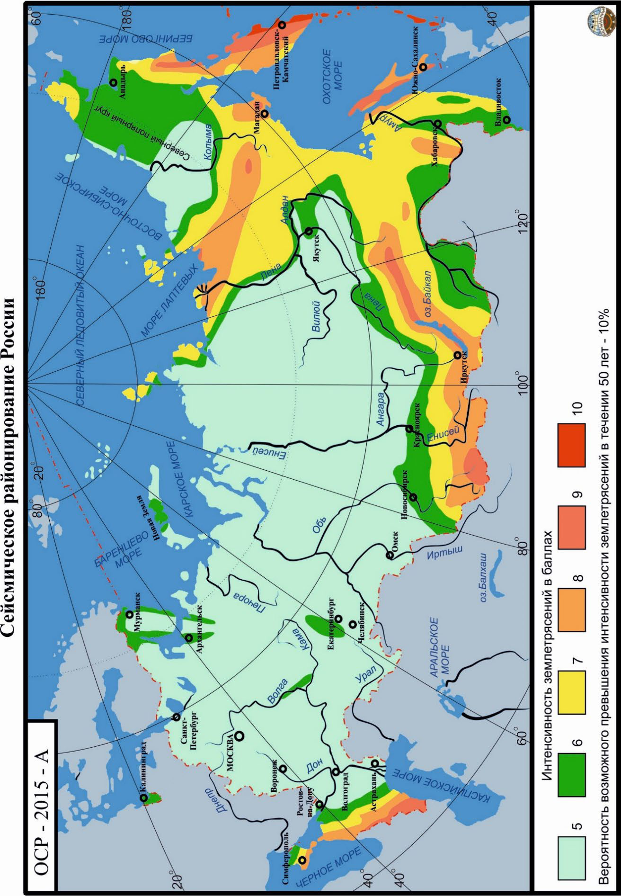
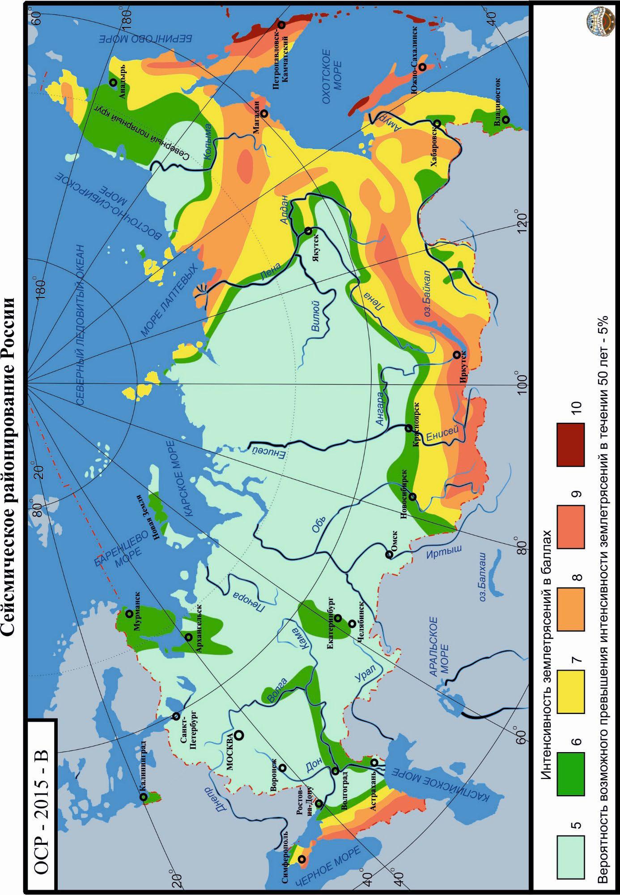
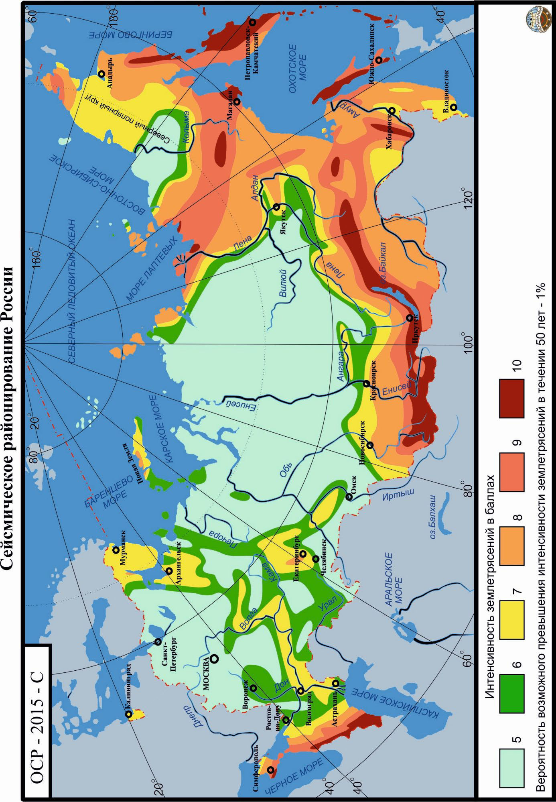
БПриложение Б. Обозначения
Б.1 В настоящем своде правил применены следующие обозначения: p a -максимальное пиковое ускорение основания (максимальное значение модуля ускорения за время землетрясения), м ⋅ с -2 ;
DLE p a -максимальное пиковое ускорение основания при максимальном расчетном землетрясении, м ⋅ с -2 ;
SLE p a -максимальное пиковое ускорение основания при проектном землетрясении, м ⋅ с -2 ;
I -интенсивность сейсмического воздействия, баллы ; beg I -исходная сейсмичность, баллы ; nor I -нормативная сейсмичность, баллы ; des I -расчетная сейсмичность площадки, баллы ; max DLE T -период колебаний, соответствующий максимальному пиковому ускорению при максимальном расчетном землетрясении, с ; max SLE T -период колебаний, соответствующий максимальному пиковому ускорению при проектном землетрясении, с ;
0,5 0,3 , DLE DLE T T -преобладающий период колебаний при максимальном расчетном землетрясении для фазы сейсмических колебаний длительностью 0,5 0,3 , DLE DLE τ τ соответственно, с ;
0,5 0,3 , SLE SLE T T -преобладающий период колебаний при проектном землетрясении для фазы сейсмических колебаний длительностью 0,5 0,3 , SLE SLE τ τ соответственно, с ;
DLE ret T -принятое значение среднего периода повторяемости (лет) максимального расчетного землетрясения ; nor ret T -нормативные периоды повторяемости (лет) землетрясений, принятые в ОСР -2015 и равные 500 лет ( 500 ret T ; карта А), 1000 лет ( Tret 1000 ; карта В) и 5000 лет ( 5000 ret T ; карта С) ;
500 ret T , Tret 1000 , 5000 ret T -см. 8.4 .5;
SLE ret T -принятое значение среднего периода повторяемости (лет) проектного землетрясения ; ser T -назначенный срок службы сооружения (лет), определяемый действующими нормативными документами или техническими условиями заказчика ;
DLE τ -общая длительность сейсмических колебаний при максимальном расчетном землетрясении, с ;
SLE τ -общая длительность сейсмических колебаний при проектном землетрясении, с ;
- 0,5 0,3 , DLE DLE τ τ -длительность фазы сейсмических колебаний основания, в течение которой пиковые ускорения при максимальном расчетном землетрясении достигают значений не менее 0,5 DLE p a и 0,3 DLE p a соответственно, с ;
- 0,5 0,3 , SLE SLE τ τ -длительность фазы сейсмических колебаний основания, в течение которой пиковые ускорения при проектном землетрясении достигают значений не менее 0,5 SLE p a и 0,3 SLE p a соответственно, с .
- В.2 В обозначениях, примененных в настоящем своде правил, использованы следующие индексы: beg -исходный, начальный;
DLE -максимальное расчетное землетрясение ; des -расчетный ; p -пиковое ускорение
; ret -период повторяемости
;
SLE -проектное землетрясение
; ser -срок службы .
В.1 Общие положения
В.1.1 Способность сейсмоизолирующих систем снижать и ограничивать реакцию сооружений на сейсмические воздействия зависит от свойств сейсмоизолирующих элементов, образующих эти системы.
В.1.2 В настоящем приложении рассмотрены только апробированные системы сейсмоизоляции, получившие признание в мировой практике сейсмостойкого строительства.
В.1.3 Наиболее широкое распространение в мировой практике сейсмостойкого строительства получили системы сейсмоизоляции, образованные сейсмоизолирующими элементами в виде:
- а) эластомерных опор;
- б) эластомерных опор со свинцовыми сердечниками;
- в) опор фрикционно -подвижного типа с плоскими горизонтальными поверхностями скольжения;
- г) кинематических систем с качающимися опорами (как правило, из железобетона).
- д) опор фрикционно -подвижного типа со сферическими поверхностями скольжения;
- е) трехкомпонентная пружинно -демпферная система (ТПДС), состоящая из упругих витых пружин и параллельно установленных многокомпонентных (3D) вязкоупругих демпферов (ВД).
В.1.4 Сейсмоизолирующие опоры применяются:
- а) указанные в перечислениях а), б) и г) В.1.3 -в сейсмоизолирующих системах первого типа: системы сейсмоизоляции, уменьшающие значения горизонтальных сейсмических нагрузок на сейсмоизолированную часть здания за счет изменения частотного спектра ее собственных колебаний -увеличения периодов колебаний сейсмоизолированной части сооружения по основному тону; б) указанные в перечислениях в) и д) В.1.3 -в сейсмоизолирующих системах второго типа: системы сейсмоизоляции, ограничивающие уровень горизонтальных сейсмических нагрузок, действующих на сейсмоизолированную часть здания; в) указанные в перечислении в) В.1.3 -в сейсмоизолирующих системах третьего типа: системы сейсмоизоляции, сочетающие способность изменять частотный спектр собственных колебаний сейсмоизолированной части сооружения со способностью ограничивать уровень горизонтальных сейсмических нагрузок, воздействующих на сейсмоизолированную часть сооружения; г) указанные в перечислении е) В.1.3 -в сейсмоизолирующих системах четвертого типа: системы сейсмоизоляции, сочетающие способность изменять частотный состав собственных колебаний сейсмоизолированной части сооружения со способностью ограничивать уровень как горизонтальных, так и вертикальных сейсмических нагрузок, воздействующих на сейсмоизолированную часть сооружения.
В.1.5 Определенное распространение в практике сейсмостойкого строительства получили комбинированные системы сейсмоизоляции, сочетающие сейсмоизолирующие элементы разных типов (например, указанные в перечислениях а) и в) В.1.3 или в перечислениях в) и д) В .1.3 ).
ВПриложение В. Сейсмоизолирующие элементы
В.2Эластомерные опоры
- В.2.1 Эластомерные опоры, применяемые для защиты сооружений от сейсмических воздействий, представляют собой слоистые конструкции из поочередно уложенных друг на друга листов натуральной или искусственной резины толщиной 5 -20 мм и листов металла толщиной 1,5 -5,0 мм. Сверху и снизу устанавливают фланцевые пластины толщиной 20 -40 мм. Листы резины и металла соединены между собой путем вулканизации или с помощью специальных связующих материалов. По торцам эластомерных опор предусмотрены опорные стальные пластины, через которые опоры крепятся к конструкциям несейсмоизолированных и сейсмоизолированных частей сооружения.
- В.2.2 Общий вид одного из возможных вариантов конструктивных решений эластомерных опор (иначе их называют резинометаллическими) показан на рисунке В.1.
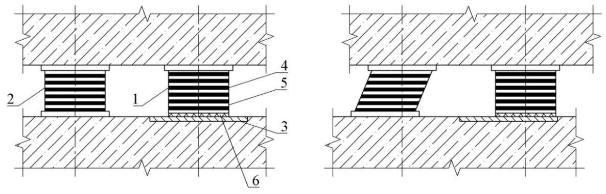
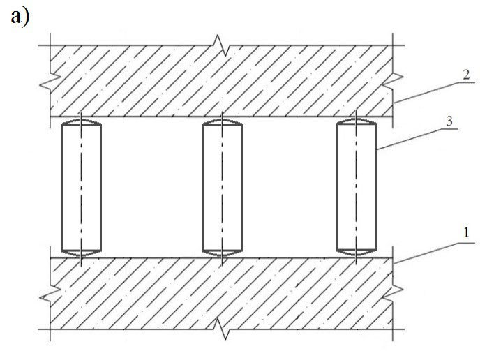
1 -опорные пластины, закрепляемые к несейсмоизолированной и сейсмоизолированной частям сооружения; 2 -листы резины; 3 -стальные пластины, расположенные между листами резины; 4 -резиновая оболочка, защищающая внутренние слои резины и металла; 5 -отверстия под анкерные болты, необходимые для закрепления опоры к несейсмоизолированной и сейсмоизолированной частям сооружения
Рисунок В.1 -Эластомерная сейсмоизолирующая опора
- В.2.3 Физико -механические свойства резины и металла, а также толщины и размеры в плане листов, выполненных из этих материалов, принимают в зависимости от требований, предъявляемых к эластомерным опорам в части диссипативных свойств, прочности, вертикальной и горизонтальной жесткости, долговечности и ряда других эксплуатационных показателей.
- В.2.4 Стальные листы в эластомерных опорах препятствуют выпучиванию резиновых листов при действии вертикальных нагрузок и обеспечивают вертикальную жесткость и прочность опор. Резиновые листы, обладающие низкой сдвиговой жесткостью, обеспечивают горизонтальную податливость эластомерных опор.
- В.2.5 Эластомерные опоры благодаря их низкой сдвиговой жесткости изменяют частотный спектр собственных горизонтальных колебаний сейсмоизолированной части сооружения, а восстанавливающие силы, возникающие при деформациях опор, стремятся возвратить сейсмоизолированную часть сооружения в исходное положение.
Примечания
1 Эластомерные опоры могут воспринимать усилия сжатия, растяжения, сдвига и кручения при циклических перемещениях в горизонтальном и вертикальном направлениях.
- 2 При расчетных гравитационных нагрузках вертикальные деформации эластомерных опор, как правило, не превышают нескольких миллиметров. При горизонтальных нагрузках опоры могут деформироваться на несколько сот миллиметров (рисунок В.2).
- В.2.6 Эластомерные опоры в зависимости от своих диссипативных свойств подразделяются на два вида:
- опоры с низкой способностью к диссипации энергии;
- опоры с высокой способностью к диссипации энергии.
- В.2.7 Эластомерными опорами с низкой способностью к диссипации энергии являются опоры, диссипативные свойства которых характеризуются коэффициентом вязкого демпфирования ξ, значения которого не превышают 5 % критического значения.
- В.2.8 Производят эластомерные опоры с низкой способностью к диссипации энергии из пластин натуральной или искусственной резины, изготовленной по технологиям, не предусматривающим повышения ее демпфирующих свойств.
Рисунок В.2 -Деформации эластомерных опор при вертикальных и горизонтальных нагрузках
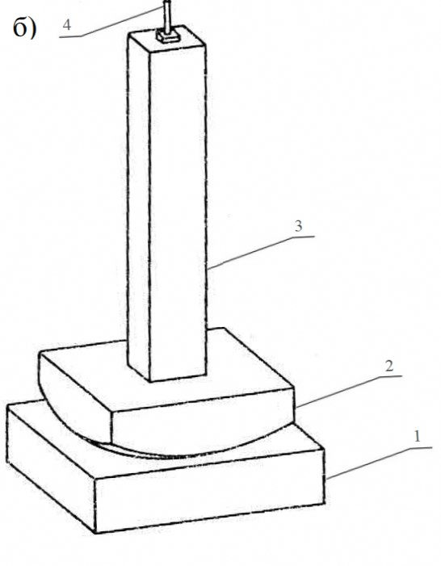
Примечание -Значения коэффициента ξ, характеризующего диссипативные свойства эластомерных опор с низкой способностью к диссипации энергии, зависят от сил внутреннего трения, возникающих в деформирующихся опорах и, как правило, составляют 2 % - 3 %.
- В.2.9 Эластомерные опоры с низкой способностью к диссипации энергии просты в изготовлении, малочувствительны к скоростям и истории нагружения, а также к температуре и старению. Для них типично линейное поведение при деформациях сдвига до 100 % и более.
- В.2.10 Эластомерные опоры с низкой способностью к диссипации энергии применяют, как правило, совместно со специальными демпферами вязкого или гистерезисного типа (рисунок В.3), позволяющими компенсировать низкую способность эластомерных опор к диссипации энергии сейсмических колебаний.
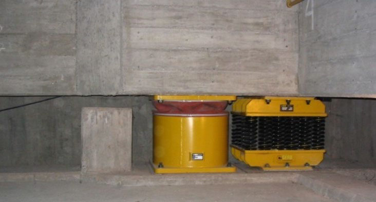
1 -эластомерная сейсмоизолирующая опора; 2 -демпфер; 3 -несейсмоизолированная часть сооружения; 4 -сейсмоизолированная часть сооружения
Рисунок В.3 -Фрагмент сейсмоизолирующей системы, состоящей из эластомерной опоры с низкой способностью к диссипации энергии и демпфера
- В.2.11 Эластомерными опорами с высокой способностью к диссипации энергии являются опоры, диссипативные свойства которых характеризуются коэффициентом вязкого демпфирования ξ со значениями не менее 10 % и не более 20 %.
Примечание -Диссипативные свойства таких опор зависят в основном от гистерезисных процессов в резине (затрат энергии на ее пластические и нелинейно -упругие деформации) и, как правило, характеризуются значениями ξ в пределах 10 % - 20 %.
- В.2.12 Эластомерные опоры с высокой способностью к диссипации энергии состоят из пластин резины, изготовленной по специальным технологиям, обеспечивающим повышение ее демпфирующих свойств до требуемого уровня.
- В.2.13 Эластомерные опоры с высокой способностью к диссипации энергии обладают способностью к горизонтальным сдвиговым деформациям до 200 % -350 %. Их эксплуатационные, жесткостные, диссипативные характеристики зависят от скоростей и истории нагружения, температуры окружающей среды и старения.
- В.2.14 Для эластомерных опор с высокой способностью к диссипации энергии характерно нелинейное поведение.
В.3Эластомерные опоры со свинцовыми сердечниками
- В.3.1 Эластомерные опоры со свинцовыми сердечниками, как правило, изготовляют из пластин резины, обладающей низкими диссипативными свойствами. Свинцовый сердечник располагают в заранее сформированных отверстиях в центре или по периметру опоры ; суммарный диаметр сердечника -от 15 % до 33 % внешнего диаметра опоры.
Общий вид одного из возможных вариантов конструктивных решений эластомерных опор со свинцовыми сердечниками показан на рисунке В.4.
- В.3.2 Благодаря комбинации резиновых и металлических слоев в опоре со свинцовыми сердечниками, обеспечивающими гистерезисную диссипацию энергии при горизонтальных деформациях, данные опоры обладают:
- высокой вертикальной жесткостью при эксплуатационных нагрузках;
- высокой горизонтальной жесткостью при действии горизонтальных нагрузок низкого уровня;
- низкой горизонтальной жесткостью при действии горизонтальных нагрузок высокого уровня;
- высокой способностью к диссипации энергии.
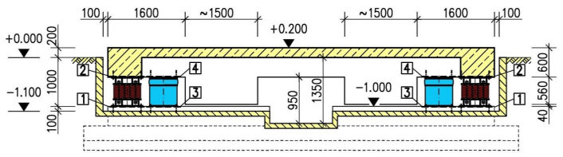
1 -опорные пластины, закрепляемые к несейсмоизолированной и сейсмоизолированной частям сооружения; 2 -фланцевые стальные пластины; 3 -стальные пластины, расположенные между пластинами резины; 4 -пластины резины; 5 -резиновая оболочка, защищающая внутренние слои резины и металла; 6 -отверстия под анкерные болты, необходимые для закрепления опоры к несейсмоизолированной и сейсмоизолированной частям сооружения; 7 -отверстия под шпонки; 8 -свинцовый сердечник
Рисунок В.4 -Эластомерная опора со свинцовым сердечником
- В.3.3 Диссипативные свойства эластомерных опор со свинцовыми сердечниками зависят от значений их горизонтальных сдвиговых деформаций и характеризуются коэффициентом эффективного вязкого демпфирования ξ в пределах от 15 % до 35 %.
- В.3.4 Эластомерные опоры со свинцовыми сердечниками способны иметь горизонтальные сдвиговые деформации до 400 %. При этом их параметры менее чувствительны к значениям вертикальных нагрузок, скоростям и истории нагружения, температуре окружающей среды и старению, чем параметры опор по В.2.
- В.3.5 При низких уровнях горизонтальных воздействий (например, при ветровых или слабых сейсмических воздействиях) эластомерные опоры со свинцовыми сердечниками работают в горизонтальных и вертикальном направлениях как жесткие элементы, а при высоких уровнях горизонтальных воздействий -как элементы, податливые в горизонтальных направлениях и жесткие в вертикальном.
- В.3.6 Перечисленные выше свойства способствуют частому применению эластомерных опор со свинцовыми сердечниками в качестве сейсмоизолирующих элементов в зонах с высокой в горизональном направлении сейсмичностью.
В.4Опоры фрикционно -подвижного типа с плоскими горизонтальными поверхностями скольжения
- В.4.1 Сейсмоизолирующие опоры фрикционно -подвижного типа с плоскими горизонтальными поверхностями скольжения (или плоские скользящие опоры) выполняются в виде верхних и нижних жестких элементов, примыкающие горизонтальные поверхности которых имеют покрытия из слоя синтетического материала с низким значением коэффициента трения скольжения (например, фторопласта или металлофторопласта в паре с нержавеющей сталью).
Общий вид двух вариантов конструктивных решений плоских скользящих опор показан на рисунке В.5.
1 -опорные стальные пластины, закрепляемые к несейсмоизолированной и сейсмоизолированной частям сооружения;
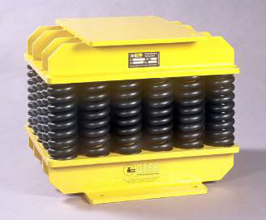
2 -пластины резины; 3 -внутренние стальные пластины; 4 -покрытие (например, из фторопласта) нижней части скользящей опоры; 5 -стальная пластина (например, из нержавеющей стали), по которой происходит скольжение; 6 -отверстия под анкерные болты, необходимые для закрепления опоры к несейсмоизолированной и сейсмоизолированной частям сооружения
Рисунок В.5 -Плоские скользящие опоры
- В.4.2 Плоские скользящие опоры имеют довольно низкий порог срабатывания и обеспечивают намного бóльшее рассеивание энергии, чем эластомерные опоры со свинцовым сердечником ( ξ = 63,7 %). Однако из -за отсутствия в опорах восстанавливающих сил при интенсивных сейсмических воздействиях сейсмоизолированная часть сооружения может иметь допускаемые односторонние перемещения в пределах нижней опорной пластины после прекращения действия сейсмических нагрузок. Эти перемещения не влияют на напряженно -деформированное состояние сейсмоизолированной части сооружения и субструктуры.
- В.4.3 Для ограничения чрезмерных односторонних горизонтальных перемещений сейсмоизолированной части сооружения относительно субструктуры в сейсмоизолирующую систему, образованную плоскими скользящими опорами, как правило, вводятся дополнительные упругие элементы -ограничители (амортизаторы).
Примечание -Значения допускаемых перемещений следует устанавливать на основе дополнительного анализа.
- В.4.4 В качестве альтернативных вариантов, обеспечивающих ограничение чрезмерных односторонних горизонтальных перемещений сейсмоизолированной части сооружения относительно субструктуры, рекомендуется:
- предусматривать в скользящих поясах конструктивные элементы, обеспечивающие возможность использования соответствующего силового оборудования, возвращающего плоские опоры скольжения в исходное положение после прекращения сейсмического воздействия;
- в состав скользящих поясов включать дополнительные сейсмоизолирующие элементы, способные ограничивать значения перемещений и возвращать плоские опоры скольжения в исходное положение (рисунок В.6).
1 -плоская скользящая опора; 2 -эластомерная опора; 3 -нижняя стальная пластина (например, из нержавеющей стали), по которой происходит скольжение; 4 -пластины из резины; 5 -стальные пластины; 6 -слой из фторопласта
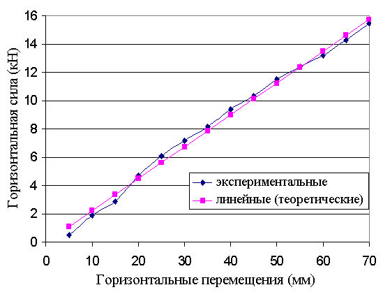
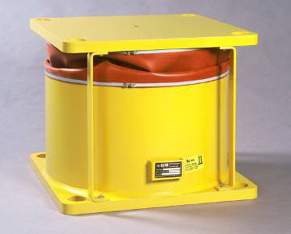
Рисунок В.6 -Фрагмент сейсмоизолирующей системы, образованной плоскими скользящими опорами и эластомерными опорами
В.5Кинематические системы с качающимися опорами
- В.5.1 Качающиеся опоры, применяемые для защиты сооружений от горизонтальных сейсмических воздействий, представляют собой подвижные стойки, выполненные из железобетона и расположенные в зазоре между сейсмоизолированной и несейсмоизолированной частями сооружения. Опоры имеют сферические торцы на верхней и нижней частях каждой опоры (рисунок В.7, а) либо только на нижней части при закреплении верхней части опоры с помощью шарнирной связи к конструкциям сейсмоизолированной части сооружения (рисунок В.7, б). Шарнирная связь обеспечивает подвижность в горизонтальной плоскости по всем направлениям.
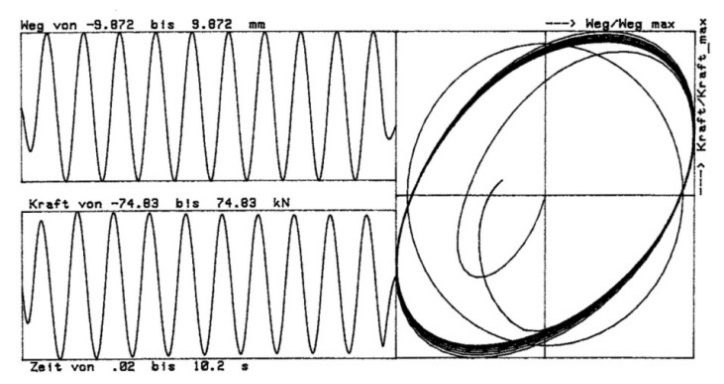
- а) 1 -фундаментная плита; 2 -опорная плита; 3 -опоры в форме стоек со сферическими торцами;
- б) 1 -фундаментная плита; 2 -сферическая опора; 3 -стойка; 4 -шарнирное крепление
Рисунок В.7 -Кинематические системы с качающимися опорами
- В.5.2 Кинематические системы с качающимися опорами относятся к гравитационному типу, в котором горизонтальное сейсмическое воздействие уравновешивается суммой моментов от веса сейсмоизолированной части сооружения. Значения опрокидывающего и удерживающего моментов зависят от геометрических параметров, а также от значения реактивных моментов, связанных с локальными деформациями в областях контакта и теле опор.
- В.5.3 Геометрические параметры опор при проектировании определяются значением передаваемой на кинематическую систему вертикальной нагрузки, прочности используемого при изготовлении опор материала и расчетного горизонтального перемещения несейсмоизолированной части сооружения при сейсмическом воздействии.
- В.5.4 Качающиеся опоры применяют, как правило, совместно со специальными демпферами вязкого или гистерезисного типа.
- В.5.5 Использование кинематической системы сейсмоизоляции с качающимися опорами может быть рекомендовано, как правило, в зданиях с жесткой конструктивной схемой.
В.6Фрикционно -подвижные опоры со сферическими поверхностями скольжения
- В.6.1 Сейсмоизолирующие фрикционно -подвижные опоры со сферическими поверхностями скольжения (или маятниковые скользящие опоры) -это скользящие опоры, в которых контактные поверхности скольжения имеют сферическую форму.
Примечания
- 1 Сейсмоизолирующие фрикционно -подвижные опоры со сферическими поверхностями скольжения называют маятниковыми скользящими опорами, так как расположенная на них сейсмоизолированная часть сооружения совершает при сейсмических воздействиях колебания, подобные движениям маятника при наличии трения (рисунки В.7, В.8).
- 2 Маятниковые опоры, в которых энергия диссипируется за счет сил трения качения (шаровые и катковые опоры, кинематические фундаменты и подобные им сейсмоизолирующие элементы с низкой способностью к диссипации энергии), в настоящем своде правил не рассматриваются.
- В.6.2 Конструктивные решения всех видов маятниковых скользящих опор предусматривают наличие:
- одной или нескольких вогнутых сферических поверхностей скольжения;
- одного или нескольких ползунов;
- ограждающих бортиков, ограничивающих горизонтальные перемещения ползунов.
Элементы маятниковых скользящих опор изготовляют, как правило, из нержавеющей стали, а их сферические поверхности имеют покрытия из материалов, обладающих заданными фрикционными свойствами.
- В.6.3 Маятниковые скользящие опоры в зависимости от особенностей конструктивных решений подразделяют на опоры:
- с одной сферической поверхностью скольжения (далее -одномаятниковые скользящие опоры) ;
- с двумя сферическими поверхностями скольжения (далее -двухмаятниковые скользящие опоры) ;
- с четырьмя сферическими поверхностями скольжения (далее -трехмаятниковые скользящие опоры) .
- В.6.4 В маятниковых опорах всех типов:
- формы ползунов и плит обеспечивают однородное распределение напряжений в местах их примыкания и исключают возможность возникновения неблагоприятных локальных эффектов;
- при перемещениях ползунов по сферическим поверхностям сейсмоизолированная часть сооружения приподнимается и составляющая гравитационной силы, параллельная горизонтальной поверхности, стремится вернуть ее в положение устойчивого равновесия;
- диссипативные свойства взаимосвязаны с фрикционными свойствами материалов, контактирующих на сопрягаемых сферических поверхностях плит и ползунов; наиболее часто они характеризуются коэффициентом эффективного вязкого демпфирования ξ со значениями в пределах от 10 % до 30 %.
- В.6.5 Спектр собственных колебаний сейсмоизолированных частей сооружения, сейсмоизолированных с помощью маятниковых опор всех типов, практически не зависит от массы сейсмоизолированных частей сооружения.
В.6.6 Одномаятниковая скользящая опора состоит из двух горизонтальных плит, одна из которых имеет сферическую вогнутую поверхность, и расположенного между плитами сферического шарнирного ползуна.
Общий вид и схема поведения одномаятниковой скользящей опоры показаны на рисунке В.8, а принцип действия -на рисунке В.9.
- В.6.7 Особенности поведения и сейсмоизолирующие свойства одномаятниковой скользящей опоры зависят от радиуса кривизны сферической поверхности R и значения коэффициента трения скольжения μ ползуна по сферической поверхности.
Примечание -Спектр собственных колебаний сейсмоизолированной части сооружения, сейсмоизолированной с помощью одномаятниковых скользящих опор, зависит преимущественно от выбранного радиуса кривизны сферической поверхности в опорной плите сейсмоизолирующей опоры и не зависит от интенсивности внешнего воздействия, а также от амплитуд колебаний сейсмоизолированной части сооружения.
- В.6.8 Современные сейсмоизолирующие системы с одномаятниковыми скользящими опорами способны обеспечивать:
- периоды колебаний сейсмоизолированных частей сооружения до 3 с и более;
- взаимные перемещения субструктур и сейсмоизолированных частей сооружения до 1 м и более.
1 -нижняя стальная плита со сферической вогнутой поверхностью, по которой происходит скольжение; 2 -верхняя стальная плита; 3 -сферический шарнирный ползун; 4 -точка поворота
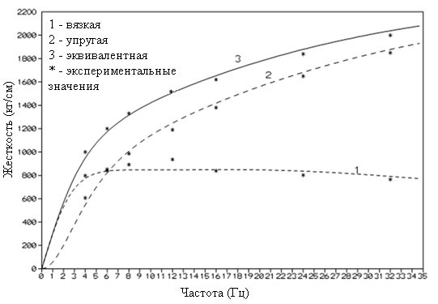
Рисунок В.8 -Общий вид и схема поведения одномаятниковой опоры а) -колебания гравитационного маятника с одной точкой подвеса; б) -колебания гравитационного маятника с двумя точками подвеса; в) -маятниковые колебания при скольжении сферического ползуна по сферической поверхности; г) -сооружение на маятниковых опорах
Рисунок В.9 -Принцип действия одномаятниковой опоры
В.6.9 Двухмаятниковая скользящая опора состоит из двух горизонтальных плит, имеющих сферические вогнутые поверхности, и расположенных между ними двух ползунов.
Общий вид и схема поведения двухмаятниковой скользящей опоры показаны на рисунке В.10.
1 -нижняя стальная плита со сферической вогнутой поверхностью; 2 -верхняя стальная плита со сферической вогнутой поверхностью; 3 -верхний ползун со сферической вогнутой поверхностью; 4 -нижний ползун со сферической выпуклой поверхностью; 5 -точка поворота
Рисунок В.10 -Общий вид и схема поведения двухмаятниковой опоры
В.6.10 Особенности поведения двухмаятниковой скользящей опоры зависят от радиусов кривизны верхних и нижних сферических поверхностей R 1 и R 2 , а также значений коэффициентов трения скольжения μ 1 и μ 2 ползунов по сферическим поверхностям .
В.6.11 В двухмаятниковых скользящих опорах радиусы сферических вогнутых поверхностей и коэффициенты трения могут быть одинаковыми или разными.
Важное достоинство двухмаятниковых скользящих опор -более компактные размеры, чем у одномаятниковых.
Примечание -В двухмаятниковых скользящих опорах реализован механизм двух маятников, последовательно включающихся в работу в зависимости от спектрального состава и интенсивности сейсмических воздействий.
В.6.12 В двухмаятниковых скользящих опорах движения шарнирных ползунов могут происходить по верхним и нижним сферическим поверхностям (см. рисунок В.10). Благодаря этому взаимные смещения двухмаятниковых скользящих опор могут быть в два раза больше, чем у одномаятниковых скользящих опор с теми же габаритными размерами.
В.6.13 Возможность использования в двухмаятниковых скользящих опорах верхних и нижних сферических поверхностей с разными радиусами кривизны и коэффициентами трения позволяет увеличить сейсмоизолирующие свойства этих опор.
В.6.14 Трехмаятниковая скользящая опора состоит их двух плит (верхней и нижней) со сферическими вогнутыми поверхностями скольжения и трех ползунов (верхнего, нижнего и внутреннего) со сферическими поверхностями. Общий вид и схема поведения трехмаятниковой скользящей опоры показаны на рисунке В.11 .
В.6.15 Особенности поведения трехмаятниковой скользящей опоры зависят от радиусов кривизны верхних и нижних сферических поверхностей R 1 , R 2 , R 3 и R 4 , а также значений коэффициентов трения скольжения μ 1 , μ 2 , μ 3 и μ 4 ползунов по сферическим поверхностям.
В.6.16 В трехмаятниковых скользящих опорах, как и в двухмаятниковых, радиусы сферических вогнутых поверхностей и коэффициенты трения могут быть одинаковыми или разными.
Примечание -В трехмаятниковой скользящей опоре реализован механизм трех маятников, последовательно включающихся в работу в зависимости от спектрального состава и интенсивности сейсмических воздействий. По мере увеличения перемещений трехмаятниковых опор будут увеличиваться эффективная длина маятника (и период колебаний сейсмоизолированной части сооружения) и повышаться эффективное демпфирование.
В.6.17 Комбинируя значения радиусов кривизны сферических поверхностей и коэффициентов трения скольжения, можно запроектировать трехмаятниковые скользящие опоры, способные эффективно снижать сейсмические нагрузки на сейсмоизолированную часть сооружения при землетрясениях с очень высокой интенсивностью и сложным спектральным составом.
1 -нижняя стальная плита со сферической вогнутой поверхностью; 2 -верхняя стальная плита со сферической вогнутой поверхностью; 3 -нижний ползун со сферической вогнутой поверхностью; 4 -верхний ползун со сферической вогнутой поверхностью; 5 -внутренний шарнирный ползун; 6 -точка поворота
Рисунок В.11 -Общий вид и схема поведения трехмаятниковой опоры
В.7Трехкомпонентная пружинно -демпферная система. Упругие витые пружины с многокомпонентными (3 D ) вязкоупругими демпферами
В.7.1 Система ТПДС состоит из упругих витых пружин, несущих статическую и сейсмическую нагрузку и параллельно включенных многокомпонентных ВД, обеспечивающих в широких пределах необходимое демпфирование для сейсмоизолированной системы (рисунки В.12, В.13).
Рисунок В.12 -Установка ТПДС при параллельном размещении блока витых пружин и ВД
Рисунок В.13 -Принципиальная схема разрезного фундамента с сейсмоизоляцией ТПДС
В.7.2 Варьирование параметрами витых пружин позволяет получить необходимые первые собственные частоты сейсмоизолированной системы в горизонтальном и вертикальном направлениях относительно доминантной частоты сейсмического воздействия (рисунок В.14, а), а демпферы ВД обеспечивают систему необходимым демпфированием во всех степенях свободы, что позволяет существенно сократить перемещения сейсмоизолированной системы при сохранении ее высокой изолирующей способности (рисунок В.14, б).
В.7.3 Несущая способность блоков витых пружин находится в диапазоне от 1 до 7000 кН.
Блок витых пружин имеет линейную зависимость «сила -перемещение» во всем диапазоне нагрузок и перемещений в вертикальном и горизонтальном направлениях (рисунок В.14, б).
В.7.4 Максимальные сейсмические перемещения блоков пружин могут достигать 300 мм и более. а)
Рисунок В.14 -Блок витых пружин для пространственной 3 D изоляции (а); линейная зависимость «сила -перемещение» для витой пружины (б)
- В.7.5 Многокомпонентные ВД (рисунок В.15) имеют нелинейную частотную демпфирующую характеристику. Их динамическая жесткость состоит из упругой и неупругой (вязкой) частей и описываются 4 -звенной динамической моделью Максвелла (рисунок В.16). а)
Рисунок В.15 -Вязкоупругий пространственный 3 D демпфер (а); зависимость «сила -перемещение» для ВД (б)
Рисунок В.16 -Зависимость вязкоупругой реакции демпфера от частоты нагружения
где K -матрица жесткости системы;
M -матрица масс;
C -матрица демпфирования;
U ( t ) -вектор перемещений;
F ( t ) -вектор узловых сил, характеризующий внешнее динамическое воздействие.
Расчеты следует выполнять с применением акселерограмм, разработанных или адаптированных для площадки строительства, а также с учетом возможности развития в элементах неупругих деформаций и локальных хрупких разрушений с использованием апробированных программных комплексов.
Г.5 Для определения сейсмических воздействий допускается использовать перечисленные ниже методы или их комбинации, которые можно объединить в три основные группы:
ГПриложение Г. Методика расчета сооружений на воздействия, соответствующие контрольному землетрясению, во временнόй области с применением инструментальных или синтезированных акселерограмм
- Г. 1 При выполнении расчетов сооружений с учетом сейсмических воздействий следует применять две расчетные ситуации:
- сейсмические нагрузки соответствуют РЗ ;
- сейсмические нагрузки соответствуют КЗ.
На действие КЗ рассчитывают законструированные по результатам РЗ сечения и элементы здания, сооружения. Целью расчетов на действие КЗ является оценка общей устойчивости, неизменяемости, однородности конструкций сооружения, допустимости уровня ускорений, перемещений, скоростей в элементах здания, сооружения, способности конструкций здания к перераспределению внешнего сейсмического воздействия за счет формирования пластических шарниров и иных нелинейных эффектов.
Расчеты по перечислению б) следует применять для зданий и сооружений, перечисленных в позициях 1 и 2 таблицы 4.2 .
- Г.2 При выполнении расчетов по уровням РЗ и КЗ принимают одну карту сейсмичности района строительства в соответствии с 4.3.
- Г.3 При выполнении расчетов, соответствующих КЗ, во временнόй области с применением инструментальных или синтезированных акселерограмм следует задавать жесткостные характеристики конструкций здания, соответствующие прогнозируемому или назначаемому уровню деформирования или повреждения его элементов. Учет нелинейного характера зависимости между величиной внешнего воздействия и деформациями (перемещениями) конструкций может выполняться как путем прямого задания диаграммы деформирования, так и с применением различных способов линеаризации. Для расчетов во временнόй области максимальные амплитуды инструментальных или синтезированных ускорений в уровне основания сооружения следует принимать не менее 1,0; 2,0 или 4,0 м/с 2 при сейсмичности площадок строительства 7, 8 и 9 баллов соответственно и умножать на коэффициент К 0 по таблице 4.2.
- В расчетах с учетом нагрузок, соответствующих КЗ, во временнόй области следует принимать коэффициент K 1 = 1.
- Г.4 При расчетах во временнόй области, соответствующих КЗ, с применением инструментальных или синтезированных акселерограмм рассматриваются вынужденные колебания системы под влиянием внешнего воздействия. Решается задача вида:
Г. 5.1 Методы, использующие записи сильных землетрясений максимального расчетного уровня, имевших место на площадке, или имеющиеся аналоговые записи сильных землетрясений.
Г. 5.2 Методы, основанные на моделях разлома:
- теоретический метод;
- полуэмпирический метод.
- Г. 5.3 Методы, использующие стандартные спектры:
- методы синтезирования расчетных акселерограмм и спектров действия с установленными оценками параметров движений грунта при расчетных воздействиях во временнόй и (или) спектральной форме.
Г.6 Сейсмические воздействия в зависимости от степени изученности сейсмотектонических и грунтовых условий площадки могут быть определены любым из методов или несколькими методами одновременно: нормативным, эмпирическим, полуэмпирическим и аналитическим. Должны быть получены наиболее вероятные значения параметров сейсмических воздействий и оценка их неопределенности. Применимость каждого из использованных методов должна быть обоснована.
Г.7 При выборе методов определения сейсмических колебаний грунта для проектных основ следует отдавать предпочтение эмпирическому методу, использующему записи сильных движений от землетрясений на площадке максимального расчетного уровня, поскольку они наиболее удовлетворяют реальной площадке.
Г.8 Применение полуэмпирического метода предпочтительно в случае отсутствия записей сильных движений, но при наличии данных о параметрах разлома и распределении скоростей между разломом и площадкой.
Г.9 Теоретический метод следует применять при наличии записи движений на площадке при слабых землетрясениях, а также параметров разлома, генерирующего РЗ .
Г.10 Нормативный метод применяется при ограниченной сейсмологической информации о площадке строительства, такой как магнитуда РЗ и расстояние до очага. В этом методе сейсмические воздействия синтезируются по стандартному спектру реакции или спектральной плотности, продолжительности и огибающей, зависящей от времени.
Г.11 Аналитический метод применяется в случае отсутствия конкретной информации о площадке. Данный метод рекомендуется для ограниченного применения и получения предварительных оценок.
Г.12 Сейсмические колебания могут быть представлены в виде записей ускорения грунта во времени и соответствующими параметрами (скоростью и перемещением).
Г.13 Если для расчета требуется пространственная модель сооружения, сейсмические колебания должны состоять из трех одновременно действующих акселерограмм. Одна и та же акселерограмма не может быть использована одновременно вдоль обеих горизонтальных направлений.
Г.14 В зависимости от характера применения и фактически имеющейся информации описание сейсмического воздействия может быть выполнено с использованием искусственных акселерограмм (см. Г.15), а также записанных или синтезированных акселерограмм (см. Г.19).
Г.15 Искусственные акселерограммы должны быть созданы таким образом, чтобы соответствовать форме упругого спектра отклика максимальных ускорений для соответствующих категорий грунта по сейсмическим свойствам для вязкого затухания 5 % критического ( ξ = 5 %).
Г.16 Продолжительность акселерограмм должна соответствовать магнитуде и другим важным параметрам сейсмического события, лежащим в основе установления расчетного максимального ускорения agR .
- Г.17 Если отсутствуют данные, характерные для конкретной площадки, минимальная продолжительность Ts установившейся части акселерограмм должна равняться 10 с.
- Г.18 Набор искусственных акселерограмм должен соответствовать требованиям Г.18.1 -Г.18.3:
- Г.18.1 Следует использовать не менее трех акселерограмм.
- Г.18.2 Среднее значение спектральных ускорений нулевого периода (вычисленное по отдельным записям колебаний во времени) не должно быть меньше значения А *β i для рассматриваемой площадки.
- Г.18.3 В диапазоне периодов от 0,2 T 1 до 2 T 1 , где T 1 основной период колебаний сооружения в направлении, для которого будет применяться акселерограмма, ни одно среднее значение упругого спектра отклика с затуханием 5 %, вычисленное по всем записям колебаний во времени, не должно быть меньше 90 % соответствующего значения упругого спектра отклика с затуханием 5 %.
- Г.19 Записанные или синтезированные акселерограммы могут применяться с использованием физического моделирования механизмов источника, эпицентрального расстояния и пути прохождения сейсмической волны через грунты при условии, что записи разработаны с учетом сейсмогенных свойств источника воздействия и грунтовых условий, характерных для площадки, а их значения нормированы к значению agR для рассматриваемого района.
- Г.20 Анализ свойств грунта на возможное увеличение эффектов при сейсмических воздействиях и проверку динамической устойчивости склона следует проводить в соответствии с СП 22.13330.
- Г.21 Используемый набор записанных или синтезированных акселерограмм должен соответствовать требованиям Г.15 .
- Г.22 Сейсмические колебания грунта на площадке зависят от следующих основных факторов:
- положение активных разломов и их параметров (длина, глубина заложения, направление движения, скорость движения);
- положение зон ВОЗ и их параметров (максимальная магнитуда, глубина очага, механизм очага, параметры сейсмического режима);
- удаление площадки от центра активного разлома или зоны ВОЗ;
- характеристика затухания интенсивности сейсмических волн и изменения спектрального состава колебаний на пути распространения колебаний от потенциального очага землетрясения до площадки;
- сейсмические характеристики грунтовых условий площадки (скорость распространения поперечных сейсмических волн, их коэффициенты демпфирования, плотность и мощность слоев грунта).
- Г.23 Исходные сейсмические колебания грунта должны быть получены с учетом конкретных сейсмотектонических грунтовых условий площадки.
- Г.24 Должны быть определены две ортогональные горизонтальные и одна вертикальная компоненты колебаний грунта.
- Г.25 Максимальные значения параметров сейсмических колебаний грунта следует определять по результатам СМР на площадке строительства .
Г.26 В качестве источника (функций Грина) при моделировании расчетного сейсмического воздействия необходимо принять широкополосные процессы, отражающие степень неопределенности доминирующих частот исходного сейсмического колебания.
Г.27 При синтезировании трехкомпонентных акселерограмм необходимо обеспечивать их статистическую независимость. Две акселерограммы считаются статистически независимыми, если абсолютное значение коэффициента корреляции ρ 12 не превышает 0,3:
где m 1 и m 2 математические ожидания функций x 1 и x 2; σ 1 и σ 2 стандартные отклонения функций x 1 и x 2.
Библиография
- [1] Федеральный закон от 29 декабря 2004 г. № 190 -ФЗ «Градостроительный кодекс Российской Федерации»
- [2] Федеральный закон от 21 июля 1997 г. № 116 -ФЗ «О промышленной безопасности опасных производственных объектов»
- [3] Федеральный закон от 30 декабря 2009 г. № 384 -ФЗ «Технический регламент о безопасности зданий и сооружений»
- [4] Федеральный закон от 22 июля 2008 г. № 123 -ФЗ «Технический регламент о требованиях пожарной безопасности»